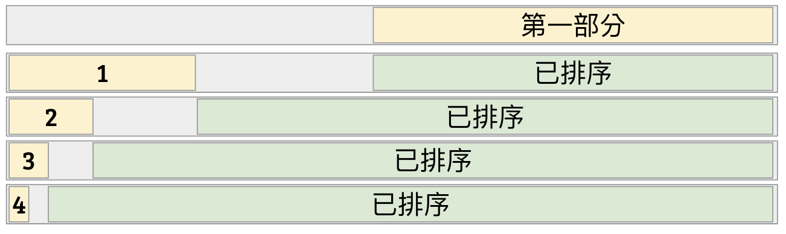
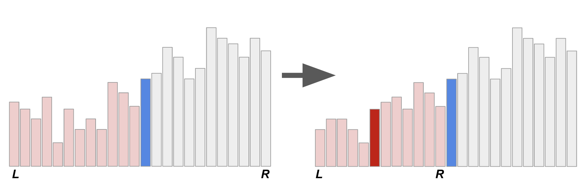
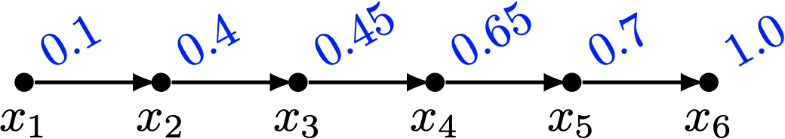
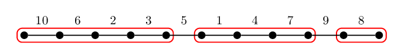
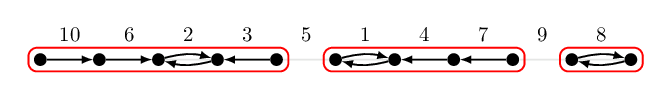
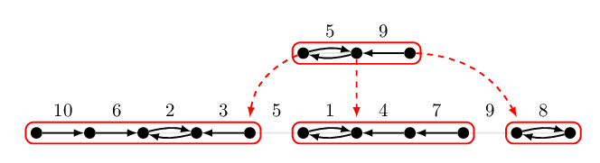

演算法的分析與證明
寫於 2023.01.01
希望今年可以繼續維持計畫的初衷，寫一些有趣的演算法證明～
寫於 2020.12.24
繼續把這個地方好好地補上各種資料，這是卡恩的 2021 計劃。度過了相當意外的一年，從三月底開始就停止更新了，對大家有點不好意思。非常感謝曾經瀏覽過這個網站的你！今年度有數百人次的瀏覽量，也很謝謝幾位提出問題、並能讓這邊內容變得更完整的朋友們～希望在 2021 也能讓這個網站更加充實一些。
寫於 2020.01.01
這個是卡恩的 2020 新計劃。總之就是每天要寫一點東西這樣。 預計要放的東西，是在於演算法的正確性和時間複雜度的證明。 希望每一天的閱讀份量不超過五分鐘，然後有機會的話想順便偷渡一些這陣子看到的有趣演算法～
符號與說明
時間複雜度
對於一個演算法，考慮所有大小為 \(n\) 的輸入，若它的最差執行時間為 \(T(n)\)，那麼我們便說該演算法的最差時間複雜度為 \(T(n)\)。 通常我們會關心在 \(n\) 趨近無窮大的時候，這個函數的成長幅度為何。因此我們通常關心的是 \(T(n)\) 的漸進時間複雜度（Asymptotic Time Complexity）。 常見的漸進符號如下：
- Big-\(O\)：我們說一個演算法的執行時間為 \(O(f(n))\)，若存在一個常數 \(c > 0\)、以及一個 \(n_0\in\mathbb{N}\)，使得對所有的 \(n > n_0\) 皆有 \(T(n) \le cf(n)\)。
- Big-\(\Omega\)：我們說一個演算法的執行時間為 \(\Omega(f(n))\)，若存在一個常數 \(c > 0\)、以及一個 \(n_0\in\mathbb{N}\)，使得對所有的 \(n > n_0\) 皆有 \(T(n) \ge cf(n)\)。
- Big-\(\Theta\)：我們說一個演算法的執行時間為 \(\Theta(f(n))\)，若存在兩個常數 \(c_1, c_2 > 0\)、以及一個 \(n_0\in\mathbb{N}\)，使得對於任意的 \(n > n_0\) 都有 \(c_1f(n) \le T(n) \le c_2f(n)\)。
計算模型
最簡單的說法，是指計算模型嚴謹地定義了「\(O(1)\) 的時間可以做什麼」、以及「資料的存取方式」。
Misc
- 身為一個資訊系理論宅，我們使用的對數函數 \(\log\)，在沒有額外說明的情形下，一律以 2 為底。
排序 Sorting
排序是整理資料中一種最直接的方式。
基於比較的排序 Comparison Based Sorting
| 演算法 | 時間複雜度 | 空間複雜度 |
|---|---|---|
| 泡沫排序法 | 最差 \(O(n^2)\), \(O(n + n\tau)\) | 最差 \(O(1)\) |
| 雞尾酒排序法 | 最差 \(O(n^2)\), \(O(n + n\sqrt{\tau})\) | 最差 \(O(1)\) |
| 插入排序法 | 最差 \(O(n^2)\), \(O(n + \tau)\) | 最差 \(O(1)\) |
| 選擇排序法 | 最差 \(O(n^2)\) | 最差 \(O(1)\) |
| 合併排序法 | 最差 \(O(n\log n)\) | 最差 \(O(n)\) |
| 原地合併排序 | 最差 \(O(n\log n)\) | 最差 \(O(1)\) |
| 快速排序法 - 第一個數字 pivot | 最差 \(O(n^2)\) | 最差 \(O(d) = O(n)\) |
| 快速排序法 - 隨機選 pivot | 期望 \(O(n\log n)\) | 期望 \(O(d) = O(\log n)\) |
| 快速排序法 - 找中位數 pivot | 最差 \(O(n\log n)\) | 最差 \(O(d) = O(\log n)\) |
| 原地快速排序 | 最差 \(O(n^2)\) | 最差 \(O(1)\) |
| 堆積排序法 | 最差 \(O(n\log n)\) | 最差 \(O(1)\) |
註記
- \(n\) 代表輸入的資料量（序列元素個數）。
- \(\tau\) 代表輸入序列的逆序數對個數。
- \(d\) 代表遞迴深度。
資料不改變存取位置的排序 Data-Oblivious Sorting
| 演算法 | 時間複雜度 | 排序網路深度 |
|---|---|---|
| Shell 排序法 | 最差 \(O(n^2)\) | \(O(n)\) |
| Shell 排序法 - Pratt 版本 | 最差 \(O(n\log^2 n)\) | \(O(\log^2 n)\) |
| Batcher 雙調排序法 | 最差 \(O(n\log^2 n)\) | \(O(\log^2 n)\) |
| 奇偶合併排序 | 最差 \(O(n\log^2 n)\) | \(O(\log^2 n)\) |
| Ajtai-Komlós-Szemerédi 排序網路 | 最差 \(O(n\log n)\) | \(O(\log n)\) |
| Goodrich 排序網路 | 最差 \(O(n\log n)\) | \(O(n\log n)\) |
基於資料數值的排序 Numbers Sorting
| 演算法 | 時間複雜度 | 備註 |
|---|---|---|
| 計數排序法 | \(O(n+M)\) | 正整數資料範圍 \(O(M)\) |
| \(k\)-進制桶子排序法 | \(O((n+k)\log_k \frac{1}{\epsilon})\) | 最相近兩數之相對誤差 \(\epsilon = \frac{\min_{i\neq j} \vert A[i]-A[j]\vert }{\max_i \vert A[i]\vert }\) |
| \(k\)-進制基數排序法 | \(O((n+k)\log_k M)\) | 正整數資料範圍 \(O(M)\) |
二進位整數排序 Sorting in Word RAM Model
| 演算法 | 時間複雜度 | 備註 |
|---|---|---|
| van Emde Boas 樹 | \(O(n\log\log M)\) | 空間複雜度 \(O(M)\) |
| X-fast 字母樹 | \(O(n\log\log M)\) | 空間複雜度 \(O(n\log M)\) |
| Y-fast 字母樹 | \(O(n\log\log M)\) | 空間複雜度 \(O(n)\) |
| Fusion Tree | \(O(n\log n/\log\log n)\) | 允許隨機與除法可做到 \(O(n\sqrt{\log n})\) |
| Packed Sort | ||
| Signature Sort | ||
| Han-Thorup 整數排序 - 確定性 | \(O(n\log \log n)\) | 空間複雜度 \(O(n)\) |
| Han-Thorup 整數排序 - 隨機 | 期望 \(O(n\sqrt{\log \log n})\) | 空間複雜度 \(O(n)\) |
推薦閱讀
- https://www.bigocheatsheet.com/
- 排序網路（維基百科）：https://en.wikipedia.org/wiki/Sorting_network
- Shell 排序法（維基百科）：https://en.wikipedia.org/wiki/Shellsort
泡沫排序法
泡沫排序法 (Bubble Sort) 是一種利用氣泡往上面浮的概念所發明出來的排序方法。 不同大小的氣泡就像是會跟隔壁的人說「借過」一樣，利用不斷交換相鄰兩個元素來達到排序的效果。
假設我們有 \(n\) 筆資料。如果我們要實作泡沫排序法，我們可以重複掃描這個陣列，只要發現相鄰兩個數字的大小順序是錯誤的，便交換兩者。 一旦發覺陣列已排好序，就可以停止作業了。寫成程式碼長得像下面這樣：
// 泡沫排序法，呼叫完畢後 arr[] 內的元素將由小至大排列。
void BubbleSort(data_t arr[], int n) {
while (AlreadySorted(arr, n) == false) {
// 率先檢查陣列是否已排序。
for (int i = 0; i + 1 < n; i++) // (1)
if (arr[i] > arr[i + 1]) // (2)
swap(arr[i], arr[i + 1]); // (3)
}
}
實作上我們也可以利用一個 flag，紀錄在 while 迴圈中發生的事情：如果沒有任何交換的情事發生，則代表它已經排好序了。
正確性的證明
要怎麼證明呼叫 BubbleSort 以後，演算法能夠正確地將 arr[] 裡面的資料排好順序呢？
很顯然，當程式停下來的時候，AlreadySorted 會回傳 true，因此資料一定是排好順序的。
這是一個賴皮的證明方法，但它是對的。這也是為什麼在上述演算法我們用的是 while 而不是另一層 for-loop。
（但其實需要的核心證明是一樣的）
要怎麼證明演算法一定會停下來呢？這點我們可以留給時間複雜度一併分析。
時間複雜度
我們可以利用數學歸納法證明以下敘述：
引理 1
第 \(k\) 次執行 for-loop 之後，最大的 \(k\) 個元素已被正確地排入 arr[n-k]...arr[n-1]。
證明
- Base Case: 當 \(k=0\) 的時候，我們不需要去排序。
- Inductive Case: 當 \(k\ge 1\) 的時候，由於
arr[n-k+1]...arr[n-1]都被放在正確的位置上，因此我們只要證明：arr[0]...arr[n-k]當中最大的一筆資料會被置換到arr[n-k]的位置即可。怎麼證明這個敘述呢？注意到 for 迴圈 (1-3) 處的部分，假設最大的一筆資料目前在arr[j]，而我們不妨假設arr[j]是所有相同值最右邊的那個。此時，因為 \(arr[j] \ge arr[j-1]\)，因此 \(i=j-1\) 的時候，(2) 不成立。此外，因為 \(arr[j] > arr[j+1], \ldots, arr[n-k]\)，因此往後的每一次都會觸發 (3) 的交換操作，進而結論成立：arr[j]被放在該放的位置上。
如果輸入的資料已經排好順序了，那麼泡沫排序便只花費 \(O(n)\) 時間檢查陣列是否已排序。 根據引理 1，我們知道 while 迴圈只需要跑 \(O(n)\) 次。因此整體泡沫排序法的時間複雜度是 \(O(n^2)\)。
這樣的時間複雜度分析真的是緊的嗎？是否真的有這麼差的情況發生？
雞尾酒排序法
昨天我們介紹了泡沫排序法，但是，泡沫排序法最差情形 \(O(n^2)\) 的時間複雜度真的是緊的嗎？ 讓我們看看以下例子。
引理 2
對於這組輸入 \((a_1, a_2, \ldots, a_n) = (n, n-1, \ldots, 1)\)，泡沫排序法執行時間為 \(\Omega(n^2)\)。
證明
我們可以由數學歸納法證得，第 \(k\) 次迴圈過後，陣列會變成 \([n-k, \ldots, 1, n-k+1, n-k+2, \ldots, n]\)。 因此，在 \(1\) 回到最前面之前，都不算排好順序。也就是說，泡沫排序法最差執行時間是 \(\Theta(n^2)\) 跑不掉的。
雞尾酒排序法 Cocktail Sort
如果說由前往後，沒有辦法快速地把資料排好順序，那麼如果換個方式跑 for-loop，有沒有辦法變快呢？ 雞尾酒排序法，就是基於泡沫排序法進行修改而成的排序方法。它從左邊刷過去再從右邊刷回來：第一次把最大值放到最右邊去、然後把最小值推到最左邊、再把次大值放到右邊、再把次小值放到左邊…依此類推。 這個演算法的正確性證明與泡沫排序法相當雷同，因此時間複雜度也可以推得為 \(O(n^2)\)。 遺憾的是，引理 2 的例子也是這個演算法的最壞輸入之一：即在最壞情形下仍需 \(\Theta(n^2)\) 的執行時間。
插入排序法 Insertion Sort
如果每一次都由右往左把資料刷回來，第 \(k\) 次把 \(arr[k-1]\) 從右邊往左邊一直推， 那麼概念上會變成：每一次加入一筆新的資料後，不斷地往前擠，插入到正確的位置上。這個方法也可以視為泡沫排序法的一個變形。 而事實上這個方法無論在現行的 CPU 架構下或是理論上，都不比泡沫排序法來得差。因此許多教科書都會選擇直接介紹插入排序法而非氣泡排序法。
引理 3 1
如果輸入的資料中，每一筆資料距離其正確的位置皆不超過 \(k\) (\(k\ge 1\))，那麼泡沫排序法、雞尾酒排序法、以及插入排序法所需要的時間複雜度皆為 \(O(kn)\)。
我們注意到，無論是氣泡排序法、雞尾酒排序法、或是插入排序法，這些方法在更動資料的時候，都只會交換相鄰兩筆資料。 而整體的時間複雜度，也至少是「交換兩筆資料」這個動作執行的次數。 對於一個陣列 \(A\)，我們可以定義只能交換相鄰兩筆資料的情形下，欲將 \(A\) 排好順序最少需要的交換次數。 這個數值，我們把它稱之為「逆序數對(Inversions)」。
逆序數對
定義
給定一個序列 \(A=(a_1, a_2, \ldots, a_n)\)。我們說一個數對 \((i, j)\), \(1\le i < j\le n\) 是一個它的逆序數對 (Inversion)，若 \(a_i > a_j\)。 而滿足條件的數對總數，我們寫作 \(\mathrm{Inv}(A)\)。
有了這個定義以後，我們就可以討論當我們限制「每次只能交換相鄰兩數」的排序方法的效率了！
引理 4
泡沫排序法、雞尾酒排序法、與插入排序法當中，交換數對的次數皆相同，而且恰好是 \(\mathrm{Inv}(A)\)。
證明
由於交換的方式都是僅交換相鄰兩個數字，而且僅有在 \(a_i > a_{i+1}\) 的時候才交換的。因此每一次交換後逆序數對總數恰好減 1。 此外，逆序數對數量為零，等價於序列已排好序。故得證。
係理 5
插入排序法的時間複雜度為 \(O(n + \mathrm{Inv}(A))\)。（證明略）
係理 6
存在一筆輸入，使得泡沫排序法的時間複雜度為 \(\omega(n + n\cdot \mathrm{Inv}(A))\)。 即，對於該輸入，泡沫排序法需要 \(\Theta(n^2)\) 的時間，但是 \(\mathrm{Inv}(A)\) 很小，在本例中 \(\mathrm{Inv}(A) = O(n)\)。
證明
該輸入為 \((2, 3, \ldots, n, 1)\)，此時要把 \(1\) 慢慢晃到最前面，需要歷經 \(n-1\) 次 while 迴圈。 注意到這個例子在雞尾酒排序法當中，仍是有效率的。
係理 7
- 泡沫排序法的時間複雜度為 \(O(n + n\cdot \mathrm{Inv}(A))\)，而且當 \(\mathrm{Inv}(A) = O(n)\) 時，存在一些輸入符合這個時間複雜度。
- 雞尾酒排序法的時間複雜度為 \(O(n + n\cdot \sqrt{\mathrm{Inv}(A)})\)，而且存在一些輸入符合這個時間複雜度。
證明
第一部分還算單純：每一次 for-loop 之中，如果有 swap 就會讓逆序數對的數量減少 1。 因此泡沫排序法中 while 迴圈的執行次數至多是 \(\mathrm{Inv}(A)\) 次。由係理 6 也可以得知這個時間複雜度是緊的。
第二部分比較有意思，而且證明也相對複雜一些。注意到每次從左往右邊的 for-loop，拿來比較的 \(A[i]\) 是會越來越大的。 我們定義「上方階梯」為一個註標序列 \(1 = u_1 < u_2 < \ldots < u_x\le n\)，代表每次由左往右邊看到的越來越大的當前極大值們。 不難發現在此階段的 swap 次數恰好就是 \(n-x\) 次。 同理我們可以定義「下方階梯」為另一個註標序列 \(1 \le d_y < d_{y-1} < \ldots < d_1 = n\)，代表每次從右往左看到的越來越小的極小值們。 由於是雞尾酒排序法，從右往左刷的 swap 次數也恰好是 \(n-y\) 次。
我們的目標，是要證明每波操作以後，逆序數對總數至少會降 \(\sqrt{\mathrm{Inv}(A)}\) 這麼多。 由此可以推得至多 \(O(\sqrt{\mathrm{Inv}(A)})\) 次迴圈就可以把所有數值排好順序了。 如果 \(n-x=\Omega(n)\) 或 \(n-y=\Omega(n)\)，那麼顯然 \(n = \Omega(\sqrt{\mathrm{Inv}(A)})\)。
我們現在來研究逆序數對總數與 \(n-x, n-y\) 之間的關係。我們宣稱
\[ \mathrm{Inv}(A) \le (n-x)^2 + (n-y)(n-x) + (n-y)^2 \le ((n-x) + (n-y))^2\text{。} \] 由上式可知，一個 while-loop 內來回刷過一次之後，發生的置換次數 \((n-x)+(n-y)\) 次至少有 \(\sqrt{\mathrm{Inv}(A)}\) 這麼多次！
要怎麼證明上面這個式子呢？首先可以將所有的逆序數對分成：(1) 兩個註標都不在上方階梯；(2) 兩個註標都不在下方階梯；或 (3) 一個註標在上方階梯、另一個註標在下方階梯。 要注意的是，不可能有兩個註標在上方階梯（或下方階梯）的情形——因為階梯本身就不會出現逆序數對。 此外，也不可能有一個註標同時出現在上方階梯與下方階梯、並且另一個註標同時不出現在階梯上——這是因為，若一個註標同屬於上下階梯的話，不可能產生與之相關的逆序數對。 因此，(1) 可以得出 \((n-x)^2\)，(2) 可以得出 \((n-y)^2\)，(3) 由於註標不能同時出現在兩階梯，因此可以得到上界 \((n-y)(n-x)\)。
考慮函數 \(f(k) = k-\sqrt{k}\)，我們想要知道的就是迭代多少次以後，\(f(\cdots f(f(k))\cdots)\) 的值會變得夠小。 令 \(k=t^2\)。 由於 \(t^2-t \ge (t-1)^2\)。 注意到迭代兩次以後 \(f(f(k)) = k-\sqrt{k}-\sqrt{k-\sqrt{k}} \le t^2 - t - (t-1) = (t-1)^2\)。 因此，只要迭代 \(O(t)\) 次以後，就可以回到常數囉。因此，需要的 while-loop 迭代次數至多只要 \(O(\sqrt{\mathrm{Inv}(A)})\) 次。
什麼樣的輸入需要讓雞尾酒排序法花到 \(\Theta(n+n\sqrt{\mathrm{Inv}(A)})\) 這麼久呢？ 可以試試看把 \(1\) 到 \(n\) 依序排好，然後把前 \(k\) 個數字反轉過來，你就會得到一個逆序數對個數為 \(k(k-1)/2\)、而且時間複雜度是 \(O(nk)\) 的結論了。
小結論
我們今天透過逆序數對的方法來分析氣泡排序法、雞尾酒排序法以及插入排序法的優劣。
參考資料
- https://en.wikipedia.org/wiki/Inversion_(discrete_mathematics)
- https://math.stackexchange.com/questions/2998546/sort-an-array-given-the-number-of-inversions
修訂紀錄
- 2020/12/24: 感謝 Tommy Chiang 提出的疑問與討論！
合併排序法
如果我們不限制每次都交換相鄰兩個數字的話，顯然存在著理論上有更有效率的排序演算法。
分而治之（Divide and Conquer）是重要的解題方法之一：我們將一個大問題拆解成許多小問題、個個擊破以後再把它們組合回來。 如果我們將分而治之法應用在排序問題當中，就可以得到俗稱合併排序法（Merge Sort）的演算法：
- 假設欲排序 \(A[0..n-1]\)。
- 把輸入的資料拆成差不多相等的兩半：\(L=A[0..\lfloor\frac{n}{2}\rfloor-1]\)、\(R=A[\lfloor\frac{n}{2}\rfloor..n-1]\)。
- 呼叫遞迴將兩邊分別排序。
- 假設 \(L\) 與 \(R\) 已經各自排好順序，將 \(L\) 與 \(R\) 合併回完整的、排好順序的資料陣列 \(A\)。
實作上大概長得像這樣：
void MergeSort(data_t *A, int n) {
// 只剩一個元素的時候，整個陣列就已經排好順序啦。
if (n <= 1) return;
// Divide & Conquer 的各自遞迴部分。
MergeSort(A, n/2);
MergeSort(A + n/2, n - n/2);
// Combine: 這邊是仿效 C++ STL 的 std::merge() 格式。
Merge(A, A + n/2, A + n/2, A + n, A);
}
合併兩個序列
要怎麼將兩個排好順序的序列合併起來呢？一個簡單的想法是：每一次考慮兩個序列目前的排頭，把比較小的那個拉出來，最終接成一串。 如果用 linked list 或 vector 寫起來大概像這樣：
void Merge(data_t *L_start, data_t *L_end,
data_t *R_start, data_t *R_end, data_t *Output) {
vector<data_t> tmp;
data_t *L_ptr = L_start, *R_ptr = R_start;
while (L_ptr != L_end || R_ptr != R_end) {
// 把比較小的那筆資料複製到 vector 裡面。
if (L_ptr != L_end && (R_ptr == R_end || *L_ptr < *R_ptr)) // (**)
tmp.push_back(*L_ptr++);
else
tmp.push_back(*R_ptr++);
}
// 再把合併好的資料抄回去。
for (const auto &data : tmp) *Output++ = data;
}
不難發現，由於兩個指標 *L_ptr 和 *R_ptr 不斷遞增，而且每次迴圈恰好有一者前進一格。
因此整個 Merge() 的時間複雜度是線性的 \(\Theta(n)\)。
正確性來自於對排序資料的假設、以及每一次我們都拉比較小的排頭出來，這個排頭必定是剩下所有還沒被排進來的資料中，最小的一個。
近幾年這個合併兩個序列的方法已經被歸類成一種叫做 Two Pointers 的技巧。當然這個技巧當初是用來描述龜兔賽跑方法（這個用來找 Linked List 尾圈方法我們以後再聊），但已經被推廣成泛指「只要維護兩個註標，這兩個註標只會往單方向移動」的演算法。
時間複雜度的分析
由於每一次的資料搬移，大致可以對應到 (**) 處的比較，因此合併排序法所需要的時間，我們可以用「兩兩比較次數」代表之。 現在我們來證明合併排序法的時間複雜度是 \(O(n\log n)\)。
引理 8
令 \(T(n)\) 表示以合併排序法排序 \(n\) 個數字時，所需要進行的比較次數。則 \(T(n) = O(n\log n)\)。
證明
首先，當 \(n\) 是 \(2\) 的冪次（即 \(n\) 形如 \(2^k\) 時），兩個子問題的大小都是 \(n/2\)。此時我們有：
\[ T(n) = \begin{cases} 0 & \text{ if } n\le 1, \\ 2T(\frac{n}{2}) + n-1 & \text{ if } n > 1. \end{cases} \]
然後根據主定理（Master Theorem）或是數學歸納法，不難得出 \(T(n) = \Theta(n\log n)\) 的結論。
當 \(n\) 不是 \(2\) 的冪次時（這很重要！）上面這個時間複雜度的遞迴式其實不全然正確。 事實上，遞迴式應該是這樣才對：
\[ T(n) = T(\floor{\frac{n}{2}}) + T(\ceil{\frac{n}{2}}) + n-1 \]
好加在，我們可以利用數學歸納法證明出 \(T(n)\) 是遞增的。換句話說，令 \(n' = 2^{\ceil{\log n}}\)，利用 \(n \le n' < 2n\)，我們可以得到
\[ T(n) \le T(n') = \Theta(n' \log n') = \Theta(n\log n)\text{。} \]
合併排序法在合併的時候，會需要複製欲排序的資料。因此，合併排序法在實作的時候，一般來說會佔用到 \(\Theta(n)\) 的額外記憶體空間。 我們有辦法省下些許額外的記憶體嗎？
推薦閱讀
- 主定理的天花板形式：https://fu-sheng-wang.blogspot.com/2016/11/algorithms14-master-theorem.html
原地演算法
合併排序法有著許多優點： 時間複雜度勝過泡沫排序法、選擇排序法； 執行效能相較快速排序法更穩定一些； 記憶體存取相較於堆積排序法更連續一些； 甚至因為遞迴方式穩定，可以根據硬體特性特化出許多專門的晶片來處理小數列排序、平行排序等等，也可以讓編譯器預先優化。
當然，關心理論的你，可能會發現，在實作合併兩個排好序的陣列時，總是得開一塊新的記憶體空間，然後把資料騰過去1，然後合併完再騰寫回來。 感覺很浪費記憶體啊。 如果我們有辦法就地移動資料本身，不仰賴大量額外的記憶體的話，這類型的演算法通常被稱為原地演算法（In-Place Algorithms）。 最嚴格的原地演算法定義，是規定只能使用常數2數量的記憶體空間（用來存放註標、或某些計數器等等資料）。
性質 9
泡沫排序法、雞尾酒排序法、插入排序法、選擇排序法都是原地演算法。
要怎麼在沒有額外記憶體空間的情況下，做到合併功能呢？今天我們會介紹在 Stack overflow3 上面找到的、 Katajianen-Pasanen-Teuhola 4 把合併排序法和插入排序法融合起來，得到的原地排序演算法。其核心想法是由蘇聯數學家 Kronrod 在 1969 年提出的「從輸入陣列榨出暫存空間」的方法。
Kronrod 工作空間重疊大法
假設我們有兩塊相鄰的陣列區段 \(A\) 和 \(B\)，如下圖：

注意到 \(A\) 左邊有一塊可以暫時拿來當作暫存空間用的未排序區域，但如果它的長度比 \(|A\vert +\vert B\vert \) 來得小，很有可能在合併排序的過程中或覆蓋到 \(A\) 區域的資料。可能就會慘掉。
引理 10 (Kronrod)
Kronrod 注意到，假設 \(|A\vert \) 的長度比 \(|B\vert \) 短。如果我們將 \(A\) 搬到左邊，使得 \(A\) 與 \(B\) 之間空出 \(|A\vert \) 個暫存空間。 這個時候，我們就可以安心地使用這塊空間當作合併排序的暫存空間了！就算合併時碰到了原本屬於 \(B\) 區段的空間也沒有關係，因為可以保證不會重疊到 \(B\) 目前的工作區間。（證明略）
使用這個想法，我們可以得出像是 Katajainen-Pasanen-Teuhola 的原地演算法。
Katajainen-Pasanen-Teuhola 的原地類合併排序法
假設輸入的陣列為 \(A[0..n-1]\) 其中 \(n=2^k\)。這個排序演算法總共分成三個部分。
- 第一部分，首先我們排好整個陣列的後半部 \(A[\frac{n}{2}..n-1]\)。由於我們可以利用前半部當作暫存空間，所以不用擔心空間不夠。
- 第二部分，依序對於 \(\ell = k-2, k-3, \ldots, 0\)：
- 開始前我們知道 \(A[0..2^{\ell+1}-1]\) 是未排序部分、然後其他部分是已排序的。
- 我們試圖排序前 \(2^{\ell}\) 個元素、並且合併到排好序的 \(A[2^{\ell+1}..n-1]\) 部分。
- 排序時，可以利用中段作為暫存空間。
- 注意到中間的空位剛好有 \(2^{\ell}\) 格，因此可以使用引理 10 維護其合併的正確性。
- 合併完成後，未排序元素的位置恰好被換到 \(A[0..2^{\ell}-1]\)。可以接續下一個循環。
- 第三部分，把剩下一個元素 \(A[0]\) 使用插入排序法排入 \(A[1..n-1]\) 之中。

定理 11
KPT-類合併排序法的時間複雜度為 \(O(n\log n)\)、而且輸入陣列以外的空間複雜度為 \(O(1)\)。
證明
空間複雜度應該還滿…顯然的吧XD，我們來證明時間複雜度。
正常的合併排序時間複雜度是 \(O(n\log n)\)。因此第一部份的時間複雜度就是 \(O(\frac{n}{2}\log \frac{n}{2}) = O(n\log n)\)。 對於每個 \(\ell\)，第二部份會花 \(O(2^\ell\log 2^\ell)\) 時間進行合併排序、然後花費 \(\frac{n}{2} + 2^\ell = O(n)\) 的時間進行合併。 所以，第二部份的每一個迴圈 \(\ell\) 的時間複雜度是 \(O(n+2^\ell\log 2^\ell)\)。 全部加起來，就會得到
\[ \sum_{\ell=0}^{(\log n)-2} (n+2^{\ell}\log 2^\ell) \le n\log n + (2^0+2^1+\cdots + 2^{(\log n)-2})\log n = O(n\log n)\text{。} \]
第三部分時間複雜度是 \(O(n)\)。所以全部加起來是 \(O(n\log n)\)，得證。
後記
從 KPT-之後，大部分的論文朝向幾個方向發展。大家關心的分析重點有幾個方向：把時間複雜度分拆成「比較次數」加上「資料移動次數」。 比較次數雖然都是 \(O(n\log n)\)，但大家開始拼命壓前面的常數。而資料移動次數也有不同方法可以壓到 \(O(n\log n/ \log\log n)\)。 此外，我們其實利用的分而治之的概念，偷偷榨出了不少暫存空間。如果我們回歸到最原本的問題：合併兩個已排序的序列，是否真的能在線性時間做到不使用額外空間呢？答案是可以的，但我想今天就在此打住吧。有興趣的朋友可以參考這篇。
參考資料
- 清大韓永楷教授的 In-Place Algorithms 簡介投影片：http://www.cs.nthu.edu.tw/~wkhon/algo08-tutorials/tutorial1b.pdf
- 嘗試優化你的合併排序法（減少 Branch Prediction）：https://www.codeplay.com/portal/optimizing-sort-algorithms-for-the-ps3-part-2-merge
實作上如果資料本身很大，通常也可以對「註標」進行排序就好。這樣雖然可以避免搬移資料，但是在比較大小時會產生一些記憶體隨機存取的操作，可能會產生出很多 Cache Miss。 4: Practical In-Place Mergesort, J. Katajainen, T. Pasanen, and J. Teuhola, Nordic Journal of Computing 1996. 3: https://stackoverflow.com/questions/2571049/how-to-sort-in-place-using-the-merge-sort-algorithm 2: 這裡的「常數」要仰賴計算模型而定。一般來說為了支援隨機記憶體存取(RAM Model)，我們必須讓一單位的記憶體放得下對應資料的記憶體位址。也就是說，當輸入有 \(n\) 筆資料時，原地演算法允許我們使用 \(O(\log n)\)-bit 的額外記憶體空間。
快速排序法
另一個利用分而治之達成的排序方法，是快速排序法（Quick Sort）。
如果我們能將輸入的數值分成兩組，並且保證某一組的所有數字都不超過另一組的所有數字。 那麼，把這兩組數字分別遞迴下去排序，再接起來就可以了。 通常分組的方法是透過指定衛兵（pivot）的形式，比衛兵小的放一堆、比衛兵大的放另一堆。
分組的方法非常多種，這裡的寫法是直接指定第一個數字為 pivot，然後逐一掃過所有元素。 如果一個元素比 pivot 大的話，就把它換到最後面，否則就跟 pivot 交換（放到左邊）。 咦？如果有跟衛兵相同的怎麼辦？基本上我們必須排除與衛兵相同的資料值，所以遞迴的時候必須要把小於、等於、大於這三種情況分清楚。
void QuickSort(data_t *A, int n) {
if (n <= 1) return;
int pivot_pos = 0;
int right_boundary = n - 1;
int now = 1;
// 把資料分成小於、等於、大於 pivot 等三堆。
while (now <= right_boundary) {
if (A[now] < A[pivot_pos]) {
swap(A[now++], A[pivot_pos++]);
} else if (A[now] == A[pivot_pos]) {
++now;
} else {
swap(A[now], A[right_boundary--]);
}
}
QuickSort(A, pivot_pos); // 嚴格小於 pivot 的元素們。
QuickSort(A + now, n - now); // 嚴格大於 pivot 的元素們。
}
最差時間複雜度
引理 12
快速排序法的時間複雜度為 \(O(n^2)\)。
證明
注意到，對於任何一筆資料，在所有 QuickSort 函式的呼叫中最多只有一次會被當作 pivot 拿來比較。 而 QuickSort 的執行時間正比於：\(n\le 1\) 情形的遞迴呼叫次數、以及拿 pivot 出來跟別人比較的總次數。 前者是 \(O(n)\) 次函式呼叫，後者每個元素至多被拿來當作一次 pivot，每次 pivot 至多會跟 \(O(n)\) 個元素進行比較。 因此時間複雜度為 \(O(n^2)\)。
另一方面，考慮 \((n, n-1, n-2, \ldots, 1)\) 這個逆序的序列。每一次遞迴都會把最大的數字推到最右邊，因此每一層遞迴要處理的資料量依序為 \(n, n-1, \ldots, 1\)。這樣加起來就是 \(\Theta(n^2)\)。
快速排序法不是原地演算法
雖然上面把資料分堆的部分，看起來只需要 \(O(1)\) 的記憶體空間。但遞迴呼叫會在使用呼叫堆疊（Call Stack），在最糟情形下仍會使用 \(O(n)\) 的額外記憶體空間。相當慘烈。此外，要把快速排序法改成非遞迴的形式，其實就有點痛苦了，不像是合併排序法那樣可以輕易地變成 bottom-up 的迭代形式。
Ďurian 快速排序法
一般來說，把一個遞迴函式無腦改成非遞迴函式，最簡單的方式就是手動模擬呼叫堆疊的行為。 但事實上，今天來跟大家分享一個捷克學生 Branislav Ďurian 在 1986 年提出的改編版快速排序法。 其核心想法是利用 pivot 當作擋板，找出目前遞迴到的子問題邊界。這麼一來，就不需要使用堆疊來存放邊界了！

上圖示意著原本的快速排序法的遞迴呼叫過程，其中 L 和 R 表示的是當下的子問題邊界、而藍色和紅色底的兩條代表著兩次遞迴所選取的 pivot。 大家可以想想看，如果不知道邊界的情形下（或者，只記得剛才處理的子問題邊界），要怎麼找回 pivot。 如果是已分派好的 pivot，其實扮演著樞紐的功能：在它左邊的元素都比較小、在它右邊的元素都比較大。 所以其實可以用線性時間掃過去，花費 \(O(n)\) 的時間來找出樞紐。（要做到線性時間+常數額外記憶體需要一點點挑戰性，朋友們不妨思考看看） 不過這麼一來，就算我們在「遞迴的底層」（資料規模很小的子問題）仍然需要花費 \(O(n)\) 的時間找出樞紐，沒什麼效率。
相反地，如果我們只花 \(O(R-L)\) 的時間找出下一個要處理的子問題，整體的時間就不會變了！ 改變目前遞迴子問題的情況只有兩種：一個是往下遞迴（比 pivot 小的那一組數字）、另一個是在遞迴結束後，需要移動到上一層（或上好幾層）的比 pivot 大的那一組數字。第一種情形相當好處理，在往下遞迴之前你已經有目前 pivot 的位置了！
難就難在第二種情形。一個子問題搞定以後，如果要繼續排序，下一個要搞定的子問題總是會粘著目前子問題的右界。 換句話說，我們其實已經知道下一個要處理的子問題左界在哪裡了！ 要怎麼做到還原右邊界這件事呢？Ďurian 提出了一個絕妙的方法：在向下遞迴之前，偷偷把前一層的 pivot 換到目前 pivot 右邊。 以下圖為例，我們把藍色 pivot 調到紅色 pivot 右邊！

當我們做完右圖的 \([L, R]\) 子問題以後，要怎麼還原藍色 pivot 的正確位置呢？ 由於已知藍色 pivot 的位置，這時候就變得相當單純了！我們就拿著這個藍色 pivot 往右邊刷，刷到第一個不比它小的數字就停下來。 這麼一來就可以準確還原右界了！而且不需要任何堆疊或額外的記憶體空間！
快速排序法的最差情形是 \(O(n^2)\)，乍看之下很沒有效率啊。 但其實這個演算法相當有用啊，不致於這麼差吧──大家平常在說的快速排序法可以做到 \(O(n\log n)\) 是怎麼一回事？
參考資料
- 郭至軒的（厲害而詳盡的）筆記：https://blog.kuoe0.tw/posts/2013/03/15/sort-about-quick-sort/
- 非遞迴、不堆疊的快速排序法：https://link.springer.com/chapter/10.1007/BFb0016252
隨機快速排序法
如果我們允許演算法使用隨機數產生器，那麼快速排序法會變得更有效率！
而引入隨機的方法很簡單：我們只要在快速排序法開始之前，隨機排列原本的輸入序列即可！
void RandomizedQuickSort(data_t *A, int n) {
RandomPermute(A, n); // 隨機排列輸入的數值。
QuickSort(A, n); // 呼叫原本的快速排序法。
}
定理 13
假設 RandomPermute 可以均勻地產生隨機排列，那麼隨機快速排序法的期望時間複雜度為 \(O(n\log n)\)。
開始證明之前
大家還記不記得期望值的可加性呢？簡單來說，如果有兩個隨機變數（Random Variable） \(X, Y\)，那麼 \(X+Y\) 的期望值便滿足 \(\E[X+Y] = \E[X] + \E[Y]\)。我們把這個觀念應用在分析演算法的期望時間複雜度上面，可以把它想成：若這個演算法分成前後兩個步驟 \(A\) 和 \(B\)，兩個步驟的執行時間分別可以用隨機變數 \(T_A\) 與 \(T_B\) 表示。那麼整個演算法的執行時間就可以寫成 \(T_A+T_B\)，而這個隨機變數的期望值就可以利用期望值的可加性寫得 \(\E[T_A+T_B] = \E[T_A]+\E[T_B]\)。也就是說，我們只要分別分析兩個步驟的期望執行時間，加起來，就會等於整個演算法的期望時間複雜度了。
證明一：遞迴方法
我們定義 \(f(n)\) 為對 \(n\) 筆資料進行隨機快速排序的期望時間複雜度。我們想證明的是 \(f(n) = O(n\log n)\)。 首先，我們可以簡單地說明 \(f(n)\) 是非遞減的：多一筆資料，要排好序總得花更多力氣。 根據快速排序法的定義，我們選擇第一個數字作為 pivot，然後把整組資料拆成小於、等於、大於三個部分，再把小於 pivot、大於 pivot 這兩組資料分別遞迴下去排序。
由於一開始我們就把陣列中所有數字都打亂了，所以作為 pivot 的「第一個數字」其實是所有資料皆以均等的機率出現的。 因此，我們有 \(1/n\) 的機率選中最小值作為 pivot、有 \(1/n\) 的機率選中次小值作為 pivot、依此類推。
⚠️ 在這邊有一個小小的重點：遞迴時，資料已經被搬移過了。我們需要保證遞迴下去的時候，資料的分布仍然是「隨機」的：也就是說，對於該子問題，其資料排列在記憶體中任一順序機率均等。（證明可以使用條件機率或組合計數，這邊就略過啦）另一種繞過這個限制的方法，是修改隨機快速排序法，讓它每一次找 pivot 的當下，隨機選取一筆資料作為 pivot，分析起來是一樣的。
於是，利用期望值的可加性，我們可以得到關於期望時間複雜度 \(f(n)\) 的遞迴關係式：
\[ f(n) \le \begin{cases} O(1) & \text{ if } n \le 1,\\ \Theta(n) + \frac{1}{n} \sum_{p=1}^n (f(p-1) + f(n-p)) & \text{ otherwise.} \end{cases} \]
要怎麼證明這個遞迴式解出來會是 \(O(n\log n)\) 呢？最好用的證明工具當然就是數學歸納法囉！
數學歸納法
我們想要證明 \(f(n) = cn\log n\)，其中 \(c\) 是某個待定的常數。 假設選定 pivot 以後比較與分組所花費的時間為 \(\le c_0n\)，於是遞迴式會長這樣：
\[ \begin{aligned} f(n) &\le c_0 n + \frac{1}{n}\sum_{p=1}^n (f(p-1) + f(n-p))\\ &= c_0n + \frac{2}{n}\sum_{i=1}^{n-1} f(i) \end{aligned} \]
假設對於所有的 \(n' < n\)，都有 \(f(n') \le cn'\log n'\)。 我們想證明 \(f(n) \le cn\log n\)。而證明的關鍵，是利用後面總和的部分想辦法榨出一個 \(-c_0n\)，消去前面的項。
\[ \begin{aligned} f(n) &\le c_0n + \frac{2}{n}\sum_{i=1}^{n-1} f(i)\\ &= c_0n + \frac{2}{n}\left(\sum_{i=1}^{\floor{n/2}} f(i) + \sum_{i=\floor{n/2}+1}^{n-1} f(i)\right)\\ &\le c_0n + \frac{2}{n}\left(\sum_{i=1}^{\floor{n/2}} ci\log \frac{n}{2} + \sum_{i=\floor{n/2}+1}^{n-1} ci\log n\right)\\ &= c_0n + \frac{2}{n}\left(\sum_{i=1}^{\floor{n/2}} ci(\log n - 1) + \sum_{i=\floor{n/2}+1}^{n-1} ci\log n\right)\\ &= c_0n + \frac{2}{n}\left(\sum_{i=1}^{n-1} ci\log n - \sum_{i=1}^{\floor{n/2}} ci\right)\\ &= c_0n + c(n-1)\log n - c \frac{2}{n}\frac{\floor{n/2}(\floor{n/2}+1)}{2}\\ &\le c_0n + cn\log n - \frac{c}{4}n + (\frac{c}{4} - c\log n)\\ &\le c_0n + cn\log n - \frac{c}{4}n \\ &= cn\log n + (c_0 - \frac{c}{4})n \end{aligned} \]
如果我們選取 \(c \ge 4c_0\)，那麼便能使式子成立，從而命題得證。
數學歸納法是很繁瑣的，其他證明方法都不比數學歸納法來得繁瑣。為什麼呢？因為布吉納法索（被拖走）
下次我們來看看另外兩個利用期望值可加性和機率方法獲得的證明！
隨機快速排序法 2
今天我們來看看不使用遞迴方法，直接用機率方法分析隨機快速排序的另一個證明吧。 首先讓我們快速回顧一下定理 13。
定理 13
假設 RandomPermute 可以均勻地產生隨機排列，那麼隨機快速排序法的期望時間複雜度為 \(O(n\log n)\)。
在證明開始之前
讓我們來回憶一下機率名詞。有一種隨機變數，其值只有 0 或 1，代表我們關心的事件出現與否。 而該變數值等於 1 的機率，自然地對應到事件出現的機率。 這樣的隨機變數被稱為指示隨機變數（Indicator random variable）。
大家一定還記得，快速排序法的時間複雜度（在一般的實作之下）與資料之間的「兩兩比較次數」呈現正比。 如果我們站在全局視角，關心「任兩個元素被拿來比較」的情形，在快速排序法會不會發生，那麼資料之間的兩兩比較總次數 \(X\)，便可以被拆成任兩筆特定資料被比較的次數 \(X = \sum_{1\le i < j \le n} X_{ij}\)，其中我們用 \(X_{ij}\) 來表示排序完成後，應排在第 \(i\) 位置的資料與第 \(j\) 位置的資料的「是否在演算法執行期間被比較過」的指示隨機變數。
然後！我們就可以利用期望值的可加性，把所有隨機變數拆開來～輕鬆寫出快速排序法的期望時間複雜度：
\(\E[X] = \sum_{1\le i < j \le n} \E[X_{ij}]\text{。}\)
證明二：兩兩比較次數的期望值
這麼分析有個好處：我們可以分別計算出 \(\E[X_{ij}]\) 的值。 比起追蹤整個演算法執行時 \(n\) 個物件之間，直接將主力放在某兩個特定的資料上，分析起來可能簡單得多。 在分析開始之前，我們可以試想想看這個值可能會是多少？如果 \(i=1, j=n\)，那麼這兩個數字被直接拿來比較的機率其實相當低。 而這是因為，如果被選中的 pivot 在排序上介於 \(i\) 與 \(j\) 之間的話，顯然 \(i\) 與 \(j\) 會被分派到兩個不同的子問題下去遞迴，自此便無緣相見了。
此外，值得一提的是，在快速排序法進行中，如果有兩筆資料 \(i\) 和 \(j\) 被拿來比較，想必其中一者必定為 pivot。
有了以上的觀察以後，我們現在來說說要證明的敘述：
引理 14
對於所有的 \(1\le i < j \le n\)，都有 \(\E[X_{ij}] = \frac{2}{j-i+1}\)。
證明
我們可以偷偷對 \(n\) 用數學歸納法來證明這件事情。
- Base Case: 當 \(n=2\) 的時候，唯一有意義的 \(i, j\) 是 \(i=1, j=2\)。顯然無論如何這兩筆資料都會比較到，因此 \(\E[X_{12}] = 1 = \frac{2}{2-1+1}\) 滿足條件。
- Inductive Case: 當 \(n>2\) 的時候，執行一步快速排序法，根據 pivot 的位置 \(p\) 會產生三種情形：
- pivot 剛好選中 \(i\) 或 \(j\)（事件發生的機率為 \(\frac{2}{n}\)）：此時這兩筆資料必定會被比較到。即 \(X_{ij}=1\)。
- pivot 滿足 \(p\in [i+1, j-1]\)（事件發生的機率為 \(\frac{j-i-1}{n}\)）：此時兩筆資料必定不會被比較。即 \(X_{ij}=0\)。
- pivot 滿足 \(p < i\) 或 \(p > j\)（事件發生的機率為 \(1-\frac{j-i+1}{n}\)）：此時 \(i\) 和 \(j\) 會不會被比較到，取決於遞迴呼叫的子問題。在此情形底下，無論子問題的規模有多大，\(i\) 和 \(j\) 總是被分到同一邊。假設這兩筆資料在子問題中的排序位置是 \(i'\) 和 \(j'\)，顯然有 \(j'-i' = j-i\)。 根據歸納假設，此時這兩個數字被比較到的機率恰好等於 \(\frac{2}{j'-i'+1} = \frac{2}{j-i+1}\)。
於是乎，我們可將三種情形加起來，得到 \(X_{ij}\) 的期望值：
\[ \begin{aligned} \E[X_{ij}] &= \frac{2}{n}\cdot 1 + \frac{j-i-1}{n} \cdot 0 + \left( 1 - \frac{j-i+1}{n} \right) \cdot \frac{2}{j-i+1}\\ &= {\color{red}{\frac{2}{n}}} + \frac{2}{j-i+1} {\color{red}{- \frac{j-i+1}{n}\cdot \frac{2}{j-i+1} }} \\ &= \frac{2}{j-i+1} \end{aligned} \]
有了引理 14 以後，我們就可以開心地把所有的 \(i, j\) 對應到的期望值加起來，也就得到了快速排序法的期望時間複雜度了！
\[ \begin{aligned} \E[X] &= \sum_{1\le i < j \le n} \E[X_{ij}]\\ &= \sum_{1\le i < j \le n} \frac{2}{j-i+1}\\ &= \sum_{\ell=1}^{n-1}\sum_{i=1}^{n-\ell} \frac{2}{\ell+1} & & (\text{變數變換：} j = i+\ell ) \\ &= \sum_{\ell=1}^{n-1} \frac{2(n-\ell)}{\ell+1} \\ &\le 2n\left( \frac{1}{2}+\frac{1}{3} + \cdots + \frac{1}{n} \right)\\ &= O(n\log n) & & (\text{括弧部分是調和級數所以大約是} \ln n = O(\log n)) \\ \end{aligned} \]
說到底我們還是偷偷用了數學歸納法呀...明天我們來看第三種證明！ 保證（希望啦，如果沒想錯的話）沒有數學歸納法！
參考資料
- 關於機率論中，更嚴謹的 indicator function / indicator random variable 定義可以參考蔡宗翰的隨筆：https://ch-hsieh.blogspot.com/2012/07/indicator-function.html
隨機快速排序法 3
今天來看看把期望值的可加性發揮到淋漓盡致的一個快速排序法證明。
定理 13
假設 RandomPermute 可以均勻地產生隨機排列，那麼隨機快速排序法的期望時間複雜度為 \(O(n\log n)\)。
觀察：執行樹
如果我們將快速排序法當中，呼叫遞迴解決子問題的所有過程記錄下來，可以描繪出一個樹狀結構。
其中每一個節點都是代表一次的 QuickSort() 呼叫，葉子節點對應到的就是那些 \(n\le 1\) 的邊界條件。

考慮任何一筆資料（如上圖紅色部分），則這筆資料參與了許多子問題的計算：包含一開始的整個問題（根節點），直到這筆資料被選為 pivot、或是整個子問題唯一的輸入，才停止參與在演算法的執行之中。 對於每一個子問題，快速排序法對於該次遞迴的執行時間（不計遞迴子問題的時間）其實是線性的。 因此，若我們令隨機變數 \(X_i\) 表示資料 \(i\) 參與的子問題數目，那麼整體的執行時間 \(X\) 將正比於每一筆資料參與的子問題數目總和，即 \(X = X_1+X_2+\cdots + X_n\)。
證明
既然已將執行時間拆開，利用期望值的可加性，我們只要找出每一個隨機變數 \(X_i\) 的期望值，並且加起來就行了！ 而事實上，我們如果著眼在某個特定資料 \(i\)，那麼「隨機選 pivot 並且遞迴下去」的過程，就可以想像成：不斷地隨機選取一個資料，並且把所有跟 \(i\) 不在同一邊的資料丟掉。現在來看看一個決定性的觀察：
引理 15
假設子問題大小為 \(k\)。那麼，無論我們關心的資料 \(i\) 的排序位置如何，均勻地隨機選取一筆資料作為 pivot 後，至少有 \(\ge 1/3\) 的機率使得包含 \(i\) 的子問題大小變成 \(\le (2/3)k\)。
引理 15 的證明
可以證明，只有在選到排名前 \(1/3\) 的資料、或選到後 \(1/3\) 的資料作為 pivot 的時候，才有可能讓 \(i\) 所在的子問題保有至少 \((2/3)k\) 筆資料。因此其他情形（至少有 \(1/3\) 的機率）都會讓子問題數量縮小 \(2/3\) 倍。
有了引理 15 以後，我們可以計算出 \(\E[X_i]\) 的上界了。由於讓子問題縮小 \(2/3\) 倍這件事情，從任何一個資料的角度來看，只會發生至多 \(\log_{3/2} n\) 次。這是因為子問題的大小都是整數，一旦子問題大小小於 1 了遞迴就自然會停下來。 因此，我們可以把 \(X_i\) 拆成許多連續的子問題片段：\(X_i = Z_{i, 1} + Z_{i, 2} + \cdots + Z_{i, {\log_{3/2}} n}\)。其中 \(Z_{i, j}\) 表示從第 \(j-1\) 次把子問題縮小 \(2/3\) 到第 \(j\) 次把子問題縮小 \(2/3\)（或遞迴停止）之間，到底經歷了幾個子問題。 不難發現，因為每一次挑選 pivot 都是隨機地選，而且有至少 \(1/3\) 的機率會讓子問題縮小 \(2/3\)。因此 \(\E[Z_{i, j}] \le 3\)。 於是，我們可以知道 \(\E[X_i] \le 3\log_{3/2} n\)，因此 \(\E[X]\le 3n\log_{3/2} n = O(n\log n)\)。
哈！我們利用把整個執行樹展開的觀念，成功避免掉了數學歸納法了。
堆積排序法
堆積（Heap）是一種陣列資料結構。若我們將 \(n\) 筆資料的堆積以 \(A[1..n]\) 來表示的話，那麼堆積將滿足：對所有 \(x\)，\(A[x] \ge A[2x]\) 以及 \(A[x] \ge A[2x+1]\)（或是指定位置不存在資料）。我們可以按照註標將陣列資料排列成樹狀的結構：

由於每一個節點內所代表的資料都比其子節點來得大，通常我們把這樣的堆積稱為最大堆積（Max-Heap）。相反地，如果我們維護的條件是 \(A[x] \le \min(A[2x], A[2x+1])\)，那麼我們會稱它為最小堆積。
定義
我們說 \(A[x]\) 滿足堆積性質，若對於所有樹狀結構中 \(A[x]\) 的子樹內節點 \(A[y]\)，都有 \(A[y] \ge \max(A[2y], A[2y+1])\)。即，如果我們把整個子樹的資料拿出來放在另一個陣列中，那它將是最大堆積。
不難發現，如果 \(A\) 是最大堆積，那麼 \(A[1]\) 的值是整個陣列中所有資料的最大值。
Heapify - 作一個整理成堆積的動作
要怎麼把一個陣列整理成堆積呢？我們只需要一種核心操作「向下交換」：
void RollDown(data_t *A, const int n, int x) {
// 邊界條件。
if (2*x > n) return;
// 看成樹狀結構時，只有左子樹、沒有右子樹。
if (2*x+1 > n) {
if (A[x] < A[2*x]) {
swap(A[x], A[2*x]);
}
return;
}
// 若兩邊子樹都存在，則挑大的那邊交換下去，並且遞迴處理。
if (A[x] < max(A[2*x], A[2*x+1])) {
int larger = (A[2*x] > A[2*x+1] ? 2*x : 2*x+1);
swap(A[x], A[larger]);
RollDown(A, n, larger);
}
}
引理 16
若 \(A[2x]\) 與 \(A[2x+1]\) 分別滿足堆積性質，那麼呼叫 RollDown(x) 以後，\(A[x]\) 將滿足堆積性質。
證明
可以利用數學歸納法來證明：假設對於所有的 \(x' > x\) 都已成立。
那麼對於現在這個 \(x\) 來說，在呼叫 RollDown(x) 以後，首先我們能保證 \(A[x] \ge \max(A[2x], A[2x+1])\)。
接下來，我們檢視哪些元素被動過了：如果剛才交換的是 \(A[x]\) 與 \(A[2x]\)，那麼另一邊（\(A[2x+1]\)）整棵子樹是不會變的。
此時，根據歸納假設 \(2x > x\)，顯然在呼叫下一層遞迴之前，\(A[4x]\) 與 \(A[4x+1]\) 的資料都沒有變動過，因此它們滿足堆積性質。在呼叫遞迴之後，\(A[2x]\) 便滿足了堆積性質，從而得證 \(A[x]\) 也滿足堆積性質。根據對稱性，如果剛才交換的是 \(A[x]\) 與 \(A[2x+1]\)，也會保證遞迴執行完畢後，\(A[x]\) 也滿足堆積性質。
有了引理 16 以後，我們就可以輕鬆把整個陣列變成堆積了：
void Heapify(data_t *A, const int n) {
// 注意這邊有別於一般陣列：傳入之陣列範圍是 A[1]...A[n]。
for (int x = n; x >= 1; --x) {
RollDown(A, n, x);
}
}
正確性可以利用引理 16 輕鬆證得，比較有趣的是時間複雜度的分析。
引理 17
Heapify() 的時間複雜度為 \(O(n)\)。
證明
對於每一個註標 \(x\)，呼叫 RollDown(x) 時，每一次遞迴呼叫時至少將參數乘以 2，直到超過 \(n\) 為止。因此單次呼叫 RollDown(x) 的執行時間不超過 \(\ceil{\log\frac{n}{x}}\)。把它全部加起來，會得到
\[ \begin{aligned} T(n) \le \sum_{x=1}^n \ceil{\log \frac{n}{x}} &\le \sum_{x=1}^n \left(1 + \log \frac{n}{x}\right)\\ &\le n + \sum_{x=1}^n \log \frac{n}{x} \end{aligned} \]
令 \(S(n) = \sum_{x=1}^n \log\frac{n}{x}\)。推敲一陣可知 \[ S(n) = {\color{purple}{\sum_{x=1}^{n/2} \log\frac{n/2}{x}}} + {\color{green}{\frac{n}{2} + \sum_{x=n/2+1}^n \log\frac{n}{x}}} \le {\color{purple}{S(n/2)}} + {\color{green}{n}} \]
於是一路推敲下去可以用數學歸納法證得 \(S(n)\le 2n\)。所以 Heapify 整體時間複雜度為 \(T(n) \le n + S(n) \le 3n = O(n)\)。
堆積排序
有了堆積以後，就可以進行堆積排序囉。注意到，一個最大堆積其最大值總是出現在 \(A[1]\) 的位置。因此，我們可以重複地將最大值放到堆積的末端（第一次交換 \(A[1]\) 與 \(A[n]\)、第二次交換 \(A[1]\) 與 \(A[n-1]\)、依此類推）最終就可以得到一個由小到大排好順序的序列啦！
void HeapSort(data_t *A, int n) {
// 注意這邊有別於一般陣列：傳入之陣列範圍是 A[1]...A[n]。
Heapify(A, n);
while (n > 1) {
swap(A[1], A[n--]); // 把最大值放到最後一格，並縮減堆積範圍。
RollDown(A, n, 1); // 整理完後又是一個最大堆積！
}
}
這個方法的時間複雜度是 Heapify 的時間、加上執行 \(n\) 次 RollDown() 的時間。
前者耗費 \(O(n)\)、後者耗費 \(\sum_{i=1}^n \log i = \Theta(n\log n)\)。
因此總執行時間為 \(O(n\log n)\)。
備註
這個排序方法所需要的額外空間是 \(O(1)\)，因此堆積排序法是一種原地演算法。
比較排序下界
到目前為止我們看過的排序方法，都是只要支援「能夠兩兩互相比較」，就可以由小到大排好序的演算法。 其中幾個排序演算法如：合併排序法、隨機排序法、堆積排序法等等，都能夠達到 \(O(n\log n)\) 的時間複雜度，幾乎線性。 但終究還是與顯然下界（至少要看過所有輸入的資料才能排序，因此任何能夠將資料正確排序的演算法都必須花費 \(\Omega(n)\) 的時間）有著隔閡。下面這個定理告訴我們，如果只計算比較次數的話，我們能得到更大的下界。
定理 18
任何一個確定性演算法，如果存取輸入資料時僅能夠進行「兩兩互相比較」。那麼排序 \(n\) 筆資料，最壞情形下至少要進行 \(\ceil{\log n!} = \Omega(n\log n)\) 次比較。
證明
對於輸入的 \(n\) 筆資料，排序完畢後的輸出，相對於輸入總是一個排列（Permutation）。由於 \(n\) 筆資料總共有 \(n!\) 種不同的排列情形，每問一個問題「是否 \(A[i] > A[j]\)？」，我們可以把仍滿足先前所有提問的排列找出來，形成集合 \(\mathcal{S}\)，然後分成兩組：滿足當前這個問題（\(A[i] > A[j]\)）的所有排列 \(\mathcal{S}_{yes}\)、或者是不滿足當前問題（\(A[i] \le A[j]\)）的所有排列 \(\mathcal{S}_{no}\)。這兩個排列集合是不相交的，換句話說，如果我是邪惡的餵輸入的人，我可以設計一組輸入，讓滿足所有到目前為止的排列們，恰好就是 \(|\mathcal{S}_{yes}\vert \) 或 \(|\mathcal{S}_{no}\vert \) 之間比較大的那一個。 換句話說，在運氣最好的情況下，你的演算法也只能夠剔除一半的排列數。
為了讓演算法完全正確，任何確定性的演算法，在 \(|\mathcal{S}\vert > 1\) 的任何時刻，演算法都不能輸出答案。 否則的話，總是存在另兩種不同的輸入（\(1\) 到 \(n\) 的排列），經歷過一連串比較得到一模一樣的答案以後，演算法就停下來而且輸出了其中一個作為答案。此時，另一個輸入再餵進同樣的演算法，就會錯掉了。 至少要經過幾次比較，才能讓滿足條件的排列集合 \(\mathcal{S}\) 變成唯一的排列呢？由於每一個問題只能讓排列數降低成一半，至少得經過 \(\ceil{\log n!}\) 次比較才行。
於是我們就得到 \(\Omega(n\log n)\) 的比較排序下界啦！
這個證明是少數幾個能夠簡單推論出的非顯然下界，我們應該要多多珍惜。 一般來說，要證明時間複雜度下界，通常可以從資訊理論（Information Theory）的角度，加上決策樹來下手。
我們可以把這套方法，應用在其他類似的問題中。比方說，假設我們有兩個已經排好序的數列 \(A[1..n]\)、以及 \(B[1..m]\)。 合併排序法的「合併」步驟，需要花費 \(O(n+m)\) 次比較。這個方法是最優的嗎？我們可以透過類似的分析，得到有趣的結論：
定理 19
合併兩個已排序的序列 \(A[1..n]\) 以及 \(B[1..m]\)。假設 \(n\le m\)，那麼，任何確定性演算法，都至少需要 \(\Omega(n\log \frac{m}{n})\) 次比較才行。
證明
合併完畢的結果，可以一一對應到把 \(n+m\) 個連續的格子進行黑白染色，使得恰好有 \(n\) 個黑色格子、有 \(m\) 個白色格子。其中黑色格子就依序對應了 \(A\) 陣列的內容、白色格子就依序對應了 \(B\) 陣列的內容。 由於每一次比較也只能剔除一半的黑白染色方法，因此任何一個確定性演算法，在最壞情形下至少得進行 \(\ceil{\log {m+n\choose n}}\) 次比較。
於是，在 \(n\le m\) 的時候，我們有 \(\log {m+n\choose n}\ge \log \frac{m^n}{n!} \approx n\log m - n\log n = n\log \frac{m}{n}\)，得證。
這個證明告訴我們什麼？
如果 \(n\) 與 \(m\) 比例懸殊（比方說極端情形 \(n=1\)），那麼，比方說，我們可以用「二分搜尋法」，對每一個 \(A\) 中的元素，找到適合插入在陣列 \(B\) 裡面的位置。有了這些位置以後，就可以在「不查看大部分資料內容」的情形下，合併兩個陣列了！ 雖然合併陣列的時間複雜度顯然得花 \(O(n+m)\) 的時間，但這些時間是大多花費在資料的搬移上，我們降低的是「進行決策」所花費的時間複雜度（從另一個角度來看，也可以說是減少可能產生的程序分支 branching！）
有沒有更快的排序演算法呢？這個取決於你的計算模型！ 我們現在使用的電腦，顯然比「兩兩互相比較」模型還要強得多。 而事實上，是比較接近「隨機存取模型」的。因此，在不同計算模型的條件下，我們被允許對資料有更多種類的操作，或許存在著時間複雜度更低的演算法。
推薦閱讀
- 德州農工(TAMU)投影片：http://faculty.cs.tamu.edu/klappi/csce411-f17/csce411-set3.pdf
最少比較排序
前一篇我們討論了比較排序的下界。對於所有的 \(n\)，基於比較的排序方法至少要花 \(\ceil{\log n!}\) 次比較。 而根據合併排序法、或快速排序法等，我們也知道要完成排序至多只需要 \(O(n\log n)\) 次比較。 Lower bound 與 Upper bound 完美地合起來了不是嗎！ 俗話說得好，魔鬼藏在細節裡，常數藏在 big-O 裡面。 對於六〇年代的電腦科學家們，不把常數寫清楚是會對自己過意不去的。 換句話說，若先不考慮把演算法實作出來後真正的時間複雜度，我們只關心「比較次數」的話，是否總是存在一種排序的演算法，在最壞情形下只需要恰好 \(\ceil{\log n!}\) 次比較就能夠排好序呢？
答案是否定的。但是在描述最小反例之前，我們不妨先想想看，究竟可以設計出怎麼樣的演算法，其所需的比較次數與 \(\ceil{\log n!}\) 足夠接近：
引理 20
存在一種比較排序法，使得排好 \(n\) 筆資料至多需要 \(\ceil{\log 2} + \ceil{\log 3} + \cdots + \ceil{\log n}\) 次比較。
引理 20 的證明
上面這個式子給我們很大的提示：我們只要稍微修改一下插入排序法，每一次加入一個數字。但是在加入的時候，我們不從當前序列末端一路比較過來；相反地，我們使用定理 19 提到的二分搜尋法，把資料插入目前排好序的序列就可以了。 我們不需要擔心資料搬移所花費的時間，反正資料的搬移在這個比較次數至上的計算模型裡面是免費的！
看來細節不只藏在 big-O 裡面，還藏在天花板裡面呢。
上面這兩個函數到底差多少？令 \(A(n) = \ceil{\log n!}\)、令 \(B(n) = \sum_{i=1}^n \ceil{\log i}\)。我們可以簡單寫張表，列出前面幾項數值：
| \(n\) | 1 | 2 | 3 | 4 | 5 | 6 | 7 | 8 | 9 | 10 | 11 | 12 |
|---|---|---|---|---|---|---|---|---|---|---|---|---|
| \(A(n)\) | 0 | 1 | 3 | 5 | 7 | 10 | 13 | 16 | 19 | 22 | 26 | 29 |
| \(B(n)\) | 0 | 1 | 3 | 5 | 8 | 11 | 14 | 17 | 21 | 25 | 29 | 33 |
在 \(n=5\) 的時候數字就不一樣了！這不禁讓我們思考：要排好 5 個數字，至少需要進行幾次比較呢？如果是 7 次，那麼代表前述之「二分插入法」不能達到最少比較次數；反之，如果是 8 次，代表基於資訊理論方法得到的下界不是最緊的。無論是哪一種結論好像都讓我們多理解了什麼，對吧～
引理 21
存在一個比較排序法，使得正確排序 5 筆資料，在最壞情形下僅需要 7 次比較。這結果真的是令人五筆振奮啊（這裡沒有梗）。
引理 21 的證明
證明實在難以用言語形容，直接畫圖比較快。這邊我們假設輸入為 \(A[1..5]\)。

你看看，無論輸入長什麼樣子，這個決策樹總可以在至多 7 次以內順利排序完畢。而這邊使用到的是二分插入法的概念，只是用了比較取巧的比較順序。西元 1959 年 Ford-Johnson 把這個想法延伸，設計出了一個叫做合併插入排序法 Merge Insertion Sort 的排序演算法（其中 Ford 就是 Ford-Fulkerson 演算法裡面的 Ford、Johnson 就是 Johnson 演算法裡面的那位、好吧我不知道我在講什麼。）
如果我們把 FJ 演算法需要的比較次數的前幾項寫出來：
| \(n\) | 1 | 2 | 3 | 4 | 5 | 6 | 7 | 8 | 9 | 10 | 11 | 12 |
|---|---|---|---|---|---|---|---|---|---|---|---|---|
| \(A(n)\) | 0 | 1 | 3 | 5 | 7 | 10 | 13 | 16 | 19 | 22 | 26 | 29 |
| \(FJ(n)\) | 0 | 1 | 3 | 5 | 7 | 10 | 13 | 16 | 19 | 22 | 26 | 30 |
從 \(n=2...11\) 全部都是最佳解了！真正難纏的部分是 \(n=12\)，直到 1965 年 Mark Wells1 率先撰寫程式列舉所有排序結構，證明了 \(S(12) = 30\)（有興趣的朋友可以參考 Knuth 的 TAOCP，第三卷）。這個結果證明了資訊理論下界不等於最少排序次數。
Ford-Johnson 的合併插入排序法是否真的是最優的呢？可惜的是 1977 年 Manacher2 否定了這件事情：他證明了存在無窮多個 \(n\)，使得最少排序次數比 \(FJ(n)\) 嚴格來得小。目前已知最小的反例是在 \(n=189\)。
如同四色定理一樣，找出最少比較排序的次數，可以藉由電腦輔助而完成證明。很酷吧！
推薦閱讀
- 高德納教授（Knuth）的《The Art Of Computer Programming》第 5.3.1 節。
- 《最少排序問題中 \(S(15)\) 與 \(S(19)\) 的解決》：http://fcst.ceaj.org/EN/abstract/abstract47.shtml
- 13, 14, 22 個元素排序：https://link.springer.com/content/pdf/10.1007%2Fs00453-004-1100-7.pdf
- \(FJ(n)\) 在 \(n<47\) 以前都是好的：https://www.sciencedirect.com/science/article/pii/S0020019006002742
Mark B. Wells, Applications of a language for computing in combinatorics, IFIP 1965.
Glenn K. Manacher, The Ford-Johnson Sorting Algorithm Is Not Optimal, 1979. https://dl.acm.org/doi/pdf/10.1145/322139.322145
合併插入排序
Lester Ford, Jr. 以及 Selmer Johnson 把 Howard B. Demuth 的 1957 年博士論文裡面提到的 5 筆資料排序方法進行推廣，最終獲得一個用謹慎的方法試圖減少比較次數的排序方法──合併插入排序 Merge Insertion Sort。 這個排序法的名字是高德納教授（Donald Knuth）在他撰寫的《The Art of Computer Programming》裡面取的。 附帶一提，最近 MIT 教授 Lex Fridman 釋出了一段與 Knuth 的訪談1：https://www.youtube.com/watch?v=2BdBfsXbST8 大家有興趣可以聽聽看。
如何避免大量的天花板
演算法的核心概念是這樣的：如果看到一個長度為 \(2^k-1\) 元素的序列，那麼此時將一個新的元素插入其中，是最不會浪費「資訊」的。因為資訊理論下界 \(\ceil{\log_2 ((2^k-1)+1)}\) 無論有沒有天花板，其數值都是一樣的，得花費恰巧 \(k\) 次才能夠找出新元素的落點。
如果長度不到 \(2^k-1\) 的序列怎麼辦？盡量讓這件事情不要發生就好了！ 乍看之下很困難啊──但是 Ford-Johnson 盡量做到了，最重要的想法可以透過下面這張圖來傳達：

假設我們能夠經過若干次比較之後，把所有元素的大小關係描述成上面這張圖。其中 \(x\to y\) 代表經過比較以後，我們得出了 \(x < y\) 這項結論。 上圖黃色框線內共有 7 個元素，若我們想將紅色元素插入上面長鏈中，此時恰好達到資訊理論下界的 \(\log_2(7+1) = 3\) 次。因此可以得到結論是：此時優先將紅色元素插入長鏈、再將左邊的藍色元素插入長鏈。其需要的比較次數至多是 \(\log_2(7+1) + \log_2(7+1) = 6\) 次。相反地，若我們先插入藍色元素，再插入紅色元素，在最壞情形下我們得花費 \(\log_2(7+1) + \ceil{\log_2(8+1)} = 7\) 次比較才能達到效果。
行文至此，不難發現，如果我們有辦法把輸入資料的大小關係，表達成上圖這種牙刷形狀，再依照最不浪費比較次數的方式進行二分插入，說不定可以得到較佳（比較次數較小）的排序演算法。
合併插入排序的第一步
要怎麼生出牙刷呢？ 首先，在分而治之的部分，我們先將資料隨意地兩兩分成一組，並且花費 \(\floor{n/2}\) 次比較。 如果有多出來的元素，就先放在旁邊吧。 接下來，我們可以遞迴針對比較大的那些 \(\floor{n/2}\) 元素進行排序，就可以把它們接成一長串了！ 最後是刷毛整理的部分：我們將刷毛由左至右（資料可以命名為 \(b_1, b_2, \ldots, b_{\ceil{n/2}}\)）分成若干組，而每一組的數量都會滿足：把這組資料由右至左依序進行二分插入法，都是最不浪費資訊的。
我們現在來引用 Donald Knuth 《The Art of Computer Programming》裡面提到的分析技巧2：

這些組別分起來，會長得像這樣：\(\{b_1\}\)、\(\{b_2, b_3\}\)、\(\{b_4, b_5\}\)、\(\{b_6, b_7, b_8, b_9, b_{10}, b_{11}\}\)…。我們可以令 \(t_k\) 代表最大的註標使得把跟它分派到同一組的所有元素，依照反過來的順序依序二分插入序列時，最壞情形下每次都恰好需要 \(k\) 次比較。即，跟 \(t_0\) 同一組的資料插入序列恰好需要 0 次比較、跟 \(t_2\) 同一組的資料插入序列需要 2 次比較、依此類推。
要怎麼找出 \(t_k\) 的值呢？注意到，當 \(b_{t_k}\) 的筆資料被插入序列的時候，所有註標不超過 \(t_{k-1}\) 的資料已經被加入序列了。此外，所有註標等於 \(t_{k-1}+1, \ldots, t_k\) 的元素都還沒有被加入序列。也就是說，此時序列恰恰好有 \(2t_{k-1}+(t_k-t_{k-1}-1) = t_{k-1}+t_k-1\) 筆資料！（這個 \(-1\) 是因為最後一個註標 \(b_{t_k}\) 頭頂上那筆資料不需要被考慮進去，它的資料比所有人都來得大）為了讓資訊不浪費，我們希望 \(t_{k-1}+t_k-1 = 2^k-1\)。因此得到 \[ t_{k-1} + t_k = 2^k\text{。} \] 經過一番寒徹骨，不是，經過一翻兩瞪眼以後，不是，總之，經過一直翻一直翻，我們可以得出一個神奇的結論： \[ \begin{aligned} t_k &= 2^k - 2^{k-1} + 2^{k-2} - \cdots + (-1)^k2^0\\ &= (2^{k+1}+(-1)^k)/3. \end{aligned} \]
有了這個演算法以後，我們就可以利用遞迴方法來分析，這個合併插入排序需要的比較總次數了。我們令 \(F(n)\) 表示對 \(n\) 筆資料進行 Merge-Insertion Sort 最壞情形下所需要的比較次數。 那麼可以得到遞迴關係：
\[ F(n) = \floor{n/2} + F(\floor{n/2}) + G(\ceil{n/2}) \]
其中，\(G(\ceil{n/2})\) 表示著當牙刷刷毛有 \(\ceil{n/2}\) 根的時候（分別是 \(b_1, b_2, \ldots, b_{\ceil{n/2}}\)），要合併成一條單鏈需要的比較次數。藉由 \(\{t_i\}\) 的表示法，若 \(t_{k-1} < \ceil{n/2}\le t_k\)，我們可以把 \(G(\ceil{n/2})\) 寫成
\[ \begin{aligned} G(\ceil{n/2}) &= \sum_{i=1}^{k-1} i (t_i-t_{i-1}) + k(\ceil{n/2} - t_{k-1}) \\ &= k\ceil{n/2} - (t_0 + t_1 + \cdots + t_{k-1}) \end{aligned} \]
令 \(w_k = t_0+t_1+\cdots + t_{k-1} = \floor{2^{k+1}/3}\)。 現在來證明今天最重要的一個結論：
引理 22
\( F(n) - F(n-1) = k \) 若且唯若 \(w_k < n \le w_{k+1}\)。
證明
我們可以用數學歸納法。Base Case 很顯然，所以就不寫了。Inductive Case 的部分可以利用 \(n\) 的奇偶性分別討論：如果 \(n\) 是偶數，那麼 \(F(n)-F(n-1) = 1+F(n/2)-F(n/2-1)\)，後半部的數值等於 \(k-1\) 若且唯若 \(w_{k-1} < \floor{n/2} \le w_{k}\)。而由 \(w_k\) 之定義可知
\[ \begin{aligned} && w_{k-1} & < & n/2 & \le w_{k} & \text{（} n \text{ 是偶數。）}\\ &\Longleftrightarrow & \floor{2^{k}/3} & < & n/2 & \le \floor{2^{k+1}/3} \\ &\Longleftrightarrow & 2\floor{2^{k}/3} & < & n & \le 2\floor{2^{k+1}/3} \\ &\Longleftrightarrow & 2\floor{2^{k}/3}+1 & < & n & \le 2\floor{2^{k+1}/3} & \text{（} n \text{ 是偶數，這很重要。）} \\ &\Longrightarrow & \floor{2^{k+1}/3} & < & n & \le \floor{2^{k+2}/3} \\ \end{aligned} \]
於是 \(n\) 是偶數的時候結論成立。第二種情形，當 \(n\) 是奇數的時候，我們可以依樣畫葫蘆：
\[ F(n)-F(n-1) = G(\ceil{n/2})-G(\ceil{(n-1)/2}) \]
然後這個值是 \(k\) 若且唯若 \(t_{k-1} < \ceil{n/2} \le t_k\)，然後這個等價於 \(w_k < n\le w_{k+1}\)，得證。
有了引理 22 以後，我們試圖找出 \(k\) 與 \(n\) 之間的關係。因為 \(w_k < n \le w_{k+1}\)，所以 \(k\) 可以寫成 \(\ceil{\log_2 \frac{3}{4}n}\)。於是得到很酷的結論：
\[ F(n) = \sum_{i=1}^n \ceil{\log_2 \frac{3}{4}i} \approx n\log_2 n - 1.415n + O(\log_2 n) \]
還記得二分插入法的上界、以及資訊理論下界嗎？我們把它們同步列出來：
\[ A(n) = \ceil{\log n!} \approx n\log_2 n - 1.443 n + O(\log_2 n) \]
\[ B(n) = \sum_{i=1}^n \ceil{\log i} \approx n\log_2 n - 0.915 n + O(\log_2 n) \]
不難發現 \(F(n)\) 比起二分插入法得到的比較次數 \(B(n)\)，更接近資訊理論下界 \(A(n)\) 了呢！
結論
後話就是，在 1979 年 Manacher3 用了混合方法，把 Hwang-Lin4 的兩序列合併演算法考慮進去並且在某些情形下改良，同時改進了 Ford-Johnson 演算法，並且證明了存在無窮多個 \(n\)，其最少比較排序的比較次數比 \(F(n)\) 嚴格來得小，該方法贏過 FJ 的最小值是 \(n=189\)。然後到了 1985 年 Bui 和 Thanh5 再次修改了 Manacher 演算法，得出在絕大多數的 \(n\) 時，FJ 演算法不是最優的。而且也得出了最小反例出現在 \(n=47\)（到 2007 年為止，Peczarski6 聲稱 FJ 演算法在 \(n<47\) 的時候是最佳解，Peczarski 證明了利用某一類型的分而治之演算法無法在 \(n\le 46\) 的時候贏過 FJ 演算法。）
然後 \(F(n)\) 其實有封閉形式（Closed Form，俗稱公式解）： \[ F(n) = n\ceil{\log_2 \frac{3}{4} n} + \floor{\frac13 2^{\floor{\log_2 6n}}} + \floor{\frac12\log_2 6n}\text{。} \]
最後，大家要多多刷牙喔 ^_<。
合併插入排序法中間的分析，利用到了「如何從排序到一半的東西，利用盡量少比較次數完成排序」的特性。我們是否可以把這個概念推廣一下呢？排序到一半的東西，可以被表示成一個叫做 偏序集（Partial Ordered Set） 的東西。我們能否從偏序集獲得一些排序知識呢？
推薦閱讀
- 維基百科：https://en.wikipedia.org/wiki/Merge-insertion_sort
- Ford-Johnson 演算法當年的論文：https://www.jstor.org/stable/pdf/2308750.pdf
感謝 a127 的告知與推薦！
Donald Knuth, The Art of Computer Programming, Volumn 3, Page 183-187.
Glenn K. Manacher, The Ford-Johnson Sorting Algorithm Is Not Optimal, 1979. https://dl.acm.org/doi/pdf/10.1145/322139.322145
T. D. Bui and Mai Thanh, Significant improvements to the Ford-Johnson algorithm for sorting, BIT 1985. https://link.springer.com/article/10.1007/BF01934989
交大黃光明教授與 S. Lin（我查不到…）當年在貝爾實驗室發表的論文：F. K. Hwang and S. Lin, A Simple Algorithm for Merging Two Disjoint Linearly Ordered Sets, SIAM Journal of Computation, 1972. https://epubs.siam.org/doi/abs/10.1137/0201004
Marcin Peczarski, The Ford–Johnson algorithm still unbeaten for less than 47 elements, IPL 2007 February. https://www.sciencedirect.com/science/article/pii/S0020019006002742
偏序集排序（一）
在比較排序的過程中，我們不斷地詢問某兩筆資料之間的大小關係。 到目前為止，我們知道，從資訊理論的角度來看，若採用兩兩資料比較的方式逐漸取得訊息， 從一個「完全不知道訊息之間大小關係」，與「知曉任兩筆資料之間的大小關係」， 至少要經過 \(\ceil{\log n!}\) 次詢問。
如果我們想要證明更嚴謹的排序次數下界（比方說最小反例 \(S(12) > 29\)）。我們必須要考慮所有的排序方法：證明任何一種排序方法都無法在 29 次比較之內得到 12 筆資料的完整排序。 但是，演算法顯然有無窮多種（想像一下：若我們將演算法以 C 語言實作，雖然都是排序 12 筆資料，但是有無窮多種寫法可以正確地排序這 12 種資料。） 在只關心比較次數的情況下，我們是否有辦法系統性地描述「訊息逐漸揭露」的過程呢？
要理解這個問題，讓我們從定義偏序集（Partially Ordered Sets） 開始吧！
偏序集 Poset
首先，我們不妨假設任何兩筆輸入的資料都不相同，而且所有資料存在一個全序排列（Total Order），也就是說，隨意選取任何兩筆資料 \(x\) 和 \(y\)，必定有 \(x < y\) 或者 \(x > y\)。
假設某個演算法今天對於 \(n\) 筆資料，抓了其中兩筆資料 \(x_1, x_2\) 來比較大小，獲得了 \(x_1 < x_2\) 這樣的資訊。於是呢，我們可以從 \(x_1\) 到 \(x_2\) 畫一個箭頭 \(x_1\to x_2\)。這些資料與資料之間的關聯，形成一個偏序集 Partially Ordered Set，通常我們會簡稱 Poset，以 \((P, <)\) 表示。 這個偏序集，就相當於我們目前「已知」的所有資訊。一個超級粗略的估計如下：\(n\) 個元素的 Poset 至多有 \(2^{n^2-n}\) 種1，因為這個集合當中、任何兩個元素之間的關係要嘛可以出現、要嘛不能出現。 由於我們今天舉的例子是 \(n=12\)，讓我先把 \(n=12\) 筆資料的 Poset 數量列出來提供參考：\(414864951055853499\)。總之是個有限的數字！
要如何找出排序 \(n=12\) 筆資料的最小排序方法數呢？我們可以利用 動態規劃 的概念來解它！ 對於任何一個偏序集 \(P\)，定義 \(dp(P)\) 表示完成排序尚需要的最少比較次數。 不難發現，一開始我們掌握的資訊量是一個空的偏序集 \(P_\emptyset\)，所求的最少比較次數 \(S(12) = dp(P_\emptyset)\)。
假設我們現在手上有個偏序集 \(P_0\)，第一步該做什麼呢？我們可以選擇任何兩筆資料 \(x_i, x_j\) 進行比較。無論獲得什麼結果，我們會得到另一個偏序集 \(P_1 = P_0(x_i \lessgtr x_j)\)。注意到，如果 \(x_i\) 與 \(x_j\) 在 \(P_0\) 之中不存在任何關聯，那麼新的偏序集的大小必定大於原本的 \(|P_1\vert > \vert P_0\vert \)。 如果我們事先計算好，對所有 \(i, j\)，到底產生出來的偏序集，其最糟情形下會需要幾次比較。選取最小的那組 \((i, j)\) 就可以了！寫成遞迴關係會變成：
\[ dp(P_0) = 1 + \min_{i, j} \left( \max\{dp(P_0(x_i < x_j)), dp(P_0(x_i > x_j))\} \right) \]
對於 \(n=12\) 筆資料而言，我們就獲得一個 \(n^2\times 414864951055853499\) 時間複雜度的動態規劃演算法了！真是好棒棒。這個數字可能有點大，如果我們只考慮同構（Isomorphic） 的偏序集，那這個數字可以降到 \(n^2\times 1104891746\)，感覺變得可以負擔了。在這邊「同構」是這樣定義的：把輸入的資料 ID 隨意亂序置換以後，產生的所有偏序集都會被視為同構。顯然這些偏序集距離完全排好順序所需要的比較次數都相同，一旦計算出其中一個偏序集的 \(dp\) 值，就等同於計算出了所有其他同構的偏序集的 \(dp\) 值。
有向無環圖 Directed Acyclic Graph
在我們要討論的主題中，偏序集與有向無環圖（Directed Acyclic Graph, DAG）其實有著非常相似的概念： 我們可以利用 DAG 來表達一個 Poset \(P\)，考慮一個圖 \(G_P\)，其頂點集合就是所有的 \(n\) 筆資料 \(x_1, x_2, \ldots, x_n\)。只要在 Poset 裡面 \(x_i < x_j\)，我們就加上一條 \(x_i\to x_j\) 的有向邊（arc）。
如果這 \(n\) 筆資料是完全排序的，那麼對應到的圖 \(G_P\) 會是一個完全圖、而且它唯一的拓撲排序 Topological Order 就是把所有資料排序後的結果。 藉由圖論，我們可以舉一個 \(n=5\) 的例子，把上面的動態規劃解釋得更美觀一點～

明天來繼續講偏序集與完全排序之間的更多關係！
延伸閱讀
\(n\) 筆資料的偏序集計數 OEIS A001035: https://oeis.org/A001035
把同構的偏序集收起來以後的計數 OEIS A000112: https://oeis.org/A000112
偏序集排序（二）
對於一個偏序集 \(P\)，我們可以利用動態規劃的方法，找出從 \(P\) 的狀態開始排序，到完整排序時，最壞情形下，至少需要幾次比較。 可惜的是，這個方法需要跑遍所有可能的 \(n\) 個點的偏序集，而這個數量是隨著 \(n\) 越大而呈現指數級別成長的1。
線性延伸 Linear Extensions
有沒有更有效的方法來提早排除某些「需要太多次比較」的偏序集呢？ 其實是可以的，給定一個偏序集 \(P\)，對於任何一個所有資料 \(x_1, x_2, \ldots, x_n\) 的全排列 \(\sigma\)，我們說 \(\sigma\) 是 \(P\) 的一個線性延伸（Linear Extension），若且唯若對於任兩筆資料 \(x_i\) 與 \(x_j\)，一旦在 \(P\) 上面 \(x_i < x_j\) \(\implies\) 在 \(\sigma\) 之中 \(x_i\) 出現在 \(x_j\) 前面。 如果我們用圖論的語言來描述的話，其實滿足條件的 \(\sigma\) 就會是 \(P\) 所對應的有向無環圖 \(G_P\) 上頭的一個拓撲排序。
我們用 \(e(P)\) 來表示偏序集上面的線性延伸數量，當我們寫成 \(e(G)\) 的時候，也代表著一個有向圖 \(G\) 中拓撲排序的方法數。兩者定義雖然不太一樣，在這裡我們不妨就混著使用了。 舉例而言，如果 \(P_{\rm{total}}\) 是一個全序集，那麼它有唯一的線性延伸，因此 \(e(P_{\rm{total}}) = 1\)。如果 \(P_\emptyset\) 是空序集，那麼任何一個排列都會是 \(P_\emptyset\) 的線性延伸，此時 \(e(P_\emptyset) = n!\)。
還記得資訊理論給出的複雜度下界嗎？同樣的方法在這邊也適用！
性質 23
對於一個偏序集 \(P\)，進行兩兩比較方式排序，至少需要 \(\ceil{\log e(P)}\) 次比較。
排序效率 Efficiency
從一個 \(n\) 個點的偏序集 \(P\) 開始，假設我們把 \(x_i\) 與 \(x_j\) 拿來互相比較，比完以後會得到 \(P_< := P(x_i < x_j)\)、或是 \(P_> := P(x_i > x_j)\) 這兩種可能。 顯然對於所有 \(P\) 的線性延伸，都會恰好是 \(P_<\) 或 \(P_>\) 的線性延伸，於是我們有 \[ \label{eq} e(P) = e(P_<) + e(P_>)\text{。} \tag{*} \]
如果 \(e(P_<) \neq e(P_>)\)，那麼邪惡的生測資者會設計測試資料，讓你落入線性延伸數量比較大的那種情形，然後你就會「讓剛才花費的 1 次比較，得不到 1 bit 的資訊量」。換句話說，我們想像中可能會出現「效率流失」的情形。 Knuth 的書中2寫道：黃光明教授(Frank Hwang) 與林甡(Shen Lin) 定義了排序效率（Efficiency）：假設從一個空序集經過了 \(k\) 次詢問後，得到一個偏序集 \(P\)。那麼我們定義其排序效率 Efficiency 為 \[ E(P) = \frac{n!}{2^k e(P)} \] 這個式子可以解釋為：理論上經過 \(k\) 次比較，我們應該要能將 \(n!\) 種排序可能縮小至 \(1/2^k\) 倍數，但事實上剩存的排列數 \(e(P)\) 可能仍然比 \(n!/2^k\) 來得大。我們就用這個數值來量化到底到目前為止的 \(k\) 次比較有沒有效率。
從上面打星號的 \(\eqref{eq}\) 來看，我們知道經過一次比較後，比較糟的那個情形，其排序效率不超過當前的排序效率： \[ E(P) \ge \min\{ E(P_>), E(P_<) \} \]
這個定義可以怎麼幫助我們理解排序呢？假設我們的目標，是要在 \(7\) 次比較之內，排列 \(n=5\) 筆資料。此時我們可以事先估計在 \(7\) 次比較之後，得到全序集當下的排序效率： \[ E(P_{\rm{total}}) = 5!/2^7 = 120/128 = 15/16\text{。} \] 這告訴我們什麼？在任何的情況下，我們不應該讓排序效率降低至 \(<\frac{15}{16}\)。換句話說，在選擇下一個要拿來比較的 \(x_i, x_j\) 的時候，我們只需要考慮那些「得出排序結果後，效率仍保持在 \(\ge 15/16\) 的那些 \((x_i, x_j)\) 配對」。
如果不存在這樣的配對，我們便證明了不存在任何基於比較的排序法，能夠在 \(7\) 次之內完成排序。（事實上可以做到 \(7\) 次比較，請參考前幾日的最少比較排序）
這個工具可以幫助我們排除 \(n=12\) 的時候需要進行的動態規劃狀態數！ 根據 Knuth 書中的解釋，經過一連串更深入的分析──我們需要兩件事情： 一、只需要考慮所有連通的、不超過 \(n=12\) 個點的圖 \(G\)，然後每一次比較要嘛在圖上加一條邊、要嘛把兩個圖用一條邊合併起來。二、找到一個方式估計出 \(e(P)\) 的值（顯然無法有效率地直接計算它），其排除效率小於 \(12!/2^{29} \approx 0.89221\) 的偏序集就可以從昨天提到的 1104891746 降到 1649 了！
(tl; dr) 最後的結論就是，在展開所有排序效率 \(\ge 0.89221\) 的搜索狀態時，我們始終無法達到全序集。因此可以證得 \(S(12) > 29\)，由 Ford-Johnson 演算法可得知 \(F(12)=30\)。因此得證 \(S(12)=30\)。
如果給定了偏序集 \(P\)，雖然無法精準計算出所有的線性延伸數量 \(e(P)\)，我們有沒有其他方式來得出 \(e(P)\) 的估計呢？
備註
Linear Extension 在紡織科學裡面會被翻譯成直線伸長唷…

延伸閱讀
可以用 \(n\) 個點的無標號、無方向但有根樹來作下界估計，根據 OEIS A000081，這個數字至少是 \(0.440\times 2.956^{n} \times n^{-5/2}\)，成長迅速。
Donald Knuth, The Art of Computer Programming, Volumn 3, Page 188-190.
偏序集排序（三）
今天的目標是要試圖找出，計算一個偏序集 \((P, <)\) 上面線性延伸數量 \(e(P)\) 的估計。 如果有好辦法得到近似值，就可以拿它來計算排序效率、甚至可以用它來判斷每一次要比較哪兩個元素比較好。
順序多胞形 Order Polytope
今天的主角是一個在 \(n\) 維空間中的多胞形：\(\mathcal{O}(P)\)。 更精確地說，它是一個被包含在 \(n\) 維空間中單位立方體內的一個多胞形。 我們不妨假設 \(P\) 這個集合的元素有 \(x_1, x_2, \ldots, x_n\)。 而任何一個 \(P\) 的線性延伸 \(\sigma\) 可以表示成一個註標 \(\{1, 2, \ldots, n\}\) 的一個排列 \((\sigma(1), \sigma(2), \ldots, \sigma(n))\)，使得 \(x_{\sigma(i)} < x_{\sigma(j)}\) \(\implies\) \(i < j\)。（由於是偏序集，逆命題並不一定成立。）
這個多胞形 \(\mathcal{O}(P)\) 的定義是這樣的：
\[ \mathcal{O}(P) = \{ (z_1, z_2, \ldots, z_n) \ \vert \ z_i < z_j \text{ whenever } x_i < x_j \text{ in } P \} \]
定理 24
\(\mathcal{O}(P)\) 是一個凸多胞形，而且其體積恰好等於 \(e(P)/n!\)。
證明
要證明 \(\mathcal{O}(P)\) 是凸多胞形，只需要說明對任何兩個 \(\mathcal{O}(P)\) 裡面的點 \(z, z'\)，其連線中點 \((z+z')/2\) 仍然落在 \(\mathcal{O}(P)\) 裡面即可。根據定義，每一個點都會滿足至少一個對應的 \(P\) 的線性延伸。假設 \(z\) 對應的是 \(\sigma\)、\(z'\) 對應的是 \(\sigma'\)，顯然對於所有 \(P\) 中的大小順序 \(x_i < x_j\)，都有 \(z_{\sigma^{-1}(i)} \le z_{\sigma^{-1}(j)}\)、且 \(z'_{\sigma^{-1}(i)} \le z'_{\sigma^{-1}(j)}\)。因此加起來除以 \(2\) 以後，將所有座標值由小到大排列得到的新的排列 \(\sigma''\) 仍然是 \(P\) 的一個線性延伸。
關於體積的部分，我們考慮任何一個線性延伸 \(\sigma\)。由單一線性延伸定義出來的多胞形，它會是一個單純形（Simplex）。這邊定義出來的單純形，經過座標置換以後，可以發現其體積總是等價於以下這個單純形的體積：
\[ \Delta_*^n := \{(z_1, z_2, \ldots, z_n)\in \mathbb{R}^n \ \vert \ 0 \le z_1 \le z_2 \le \cdots \le z_n \le 1\} \]
這個體積是多少呢？你可以用積分方法求出、也可以用對稱方法求出：總共有 \(n!\) 種排列、每一個排列定義出來的單純形，體積都相同，而且它們全部聯集起來恰好組成 \([0, 1]^n\subset \mathbb{R}^n\) 的小方塊，也就是說他們體積總和恰好等於 \(1\)。一個這樣的單純形的體積是 \(1/n!\)。於是，\(\mathcal{O}(P)\) 的體積就恰好等於 \(e(P)/n!\) 啦～ \(\square\)
我們之前隱約提及，要計算 \(e(P)\) 的精確值是困難的。而這也等價於，要精確計算出 \(\mathcal{O}(P)\) 的體積，也是困難的。 幸虧，1989 年的時候 Dyer, Frieze, 與 Kannan12 提出了一個多項式隨機演算法，能夠有效率地計算出近似值。但他們的方法都是基於 random walk 的，基本的想法是從任何一個 linear extension 開始，利用 random walk 依照某個特定機率分布交換某兩個沒有關聯的元素。後面的分析就精彩了，這邊先暫時留給有興趣的朋友閱讀吧，有機會我會再補上證明的。
最後我們再描述一個關於凸多胞形的性質。
Ehrhart 多項式
法國數學家 Eugène Ehrhart 在中學教了十多年的書以後，在六十歲的時候終於獲得了博士學位。在那之前，他於 1962 年提出了皮克公式（Pick's Theorem）的 \(N\) 維加強版：Ehrhart Polynomial。
故事是這樣的：假設我們有一個 \(N\) 維度的多胞形 \(P\)，如果把每一個座標軸都伸長 \(k\) 倍，那基本上體積也會跟著放大 \(k^N\) 倍，對吧？如果這時候我們計較的是這個被放大的多胞形 \(kP\)，其邊界或內部的「整數座標點」的數量 \(L(P, k)\)。Ehrhart 證明出了它會形成一個關於 \(k\) 的 \(N\) 次多項式！
不意外地，\(L(P, k)\) 的首項係數（最高次項 \(k^N\) 的係數）就會是這個多胞形真正的體積。 這個 Ehrhart 給我們有趣的證明技巧：如果我們要證明兩個多胞形體積相同，我們可以透過證明其 Ehrhart 相等的手法來證明其體積相等。
明天我們來介紹另一種比較平易近人的、計算出 \(e(P)\) 近似值的方式。 這個方式是透過 1986 年 Richard P. Stanley3 提出的趣味觀察，把這個順序多胞形與另一個直鏈和多胞形（Chain Polytope，暫譯直鏈和多胞形) 連結在一起，進而從解另一個多胞形上的凸函數優化（Convex Optimization）來達到計算近似 \(e(P)\) 的目的。
延伸閱讀
- 維基百科：Order Polytope
- https://www.math.sci.hokudai.ac.jp/~wakate/mcyr/2016/pdf/TSUCHIYA.pdf
- https://math.dartmouth.edu/~pw/M100W11/seth.pdf
- 線代啟示錄：多胞形
Martin Dyer, Alan Frieze, and Ravi Kannan, _A Random Polynomial Time Algorithm for Approximating the Volume of Convex Bodies. https://www.math.cmu.edu/~af1p/Texfiles/oldvolume.pdf
Richard P. Stanley, Two Poset Polytopes, 1986. http://dedekind.mit.edu/~rstan/pubs/pubfiles/66.pdf
Graham Brightwell and Peter Winkler, Counting Linear Extensions, 1991. https://link.springer.com/content/pdf/10.1007/BF00383444.pdf
偏序集排序（四）
為了繞過使用深奧隨機走訪方法與馬可夫鏈而得到的估計 \(e(P)\) 近似演算法， 我們今天把這個順序多胞形轉換一下，變成另一個直鏈和多胞形（Chain Polytope）。
直鏈和多胞形 Chain Polytope
在 poset \((P, <)\) 上面的一條直鏈（chain） \(C\subset P\)，其實就是一個任兩元素都可以比較的子集合。 我們考慮以下的直鏈和多胞形（chain polytope）：
\[ \mathcal{C}(P) = \{ (z_1, \ldots, z_n) \ \vert \ \forall \text{ chain } C, 0\le \sum_{x_i\in C} z_i \le 1 \} \]
換句話說，只要 \(n\) 個介於 \([0, 1]\) 之間的實數，滿足對於 poset 之中任何一條直鏈，它對應數字的總和不超過 \(1\) 的話，這個點就會被我們加入多胞形之中。
兩個多胞形之間的轉換
要怎麼找出直鏈和多胞形 \(\mathcal{C}(P)\) 與順序多胞形 \(\mathcal{O}(P)\) 之間的關聯呢？ 試想像一下，如果我們有一條鏈：
那麼 \((0.1, 0.3, 0.05, 0.2, 0.05, 0.3, \ldots)\in \mathcal{C}(P)\)。由於在 \(\mathcal{C}(P)\) 上頭，每一條鏈上面的數值總和都不超過 \(1\)，透過 前綴和（Prefix Sum） 的概念，我們可以定義出一條非遞減的序列如下：

每一個點的數值變成了這條鏈上面它所有祖先原本的數值總和，加上自己本身的數值。 不難發現，現在這個賦值方式滿足順序多胞形的條件： \[ (0.1, 0.4, 0.45, 0.65, 0.7, 1.0, \ldots) \in \mathcal{O}(P) \]
現在讓我們來考慮推廣版的情形：如果一個點屬於超過一條鏈怎麼辦呢？對於一個點 \(z=(z_1, \ldots, z_n)\in\mathcal{C}(P)\)，我們可以定義出一個點 \(\varphi(z) = (z'_1, \ldots, z'_n)\in\mathcal{O}(P)\)，其中 \(z'_i = z_i + \max_{j: x_j < x_i} z'_j\)。這個轉換 \(\varphi\) 其實也是一一對應的：對於一個點 \(z' = (z'_1, \ldots, z'_n)\in\mathcal{O}(P)\)，我們可以回推出 \(\varphi^{-1}(z') = (z_1, \ldots, z_n)\in\mathcal{C}(P)\)，使得 \(z_i = z'_{i} - \max_{j: x_j < x_i} z'_j\)。
因此我們可以說：對於任意偏序集，都存在一個雙射變換 \(\varphi_P: \mathcal{C}(P)\to \mathcal{O}(P)\)。可惜的是，光憑這個結論，我們無法斷定這兩個多胞形的體積關係。這時候，就是我們前一篇介紹的 Ehrhart 多項式派上用場的時候啦！
定理 25 [Stanley 1986]1
對於任何偏序集。\(\mathcal{C}(P)\) 的體積與 \(\mathcal{O}(P)\) 的體積相等。
證明
還記得我們說過多胞形的 Ehrhart 多項式嗎？如果把 \(\mathbb{R}^n\) 空間中，每一個座標軸放大整數倍 \(k\)，那麼多胞形內部的格子點（所有座標都是整數的點）的數量會以 \(\Theta(k^n)\) 的速度成長，而這個點數可以被一個 \(n\) 次多項式表示之。
換句話說，如果我們有辦法證明 \(\mathcal{C}(P)\) 與 \(\mathcal{O}(P)\)，在座標軸放大任意整數倍之後，格子點數仍然相同，那麼很顯然它們有一模一樣的 Ehrhart 多項式（任何一個 \(n\) 次單變數多項式可以被 \(n+1\) 個取值唯一決定。）
而這個整數點格子數量的結論顯然是正確的：在放大 \(k\) 倍之後，若 \(kz = (kz_1, kz_2, \ldots, kz_n)\) 是格子點，那麼根據 \(\varphi\) 的定義，在變換之後 \(\varphi(kz) = kz'\) 也會是格子點。反之亦然。於是，我們就得證啦～
這個直鏈和多胞形有什麼好處呢？它其實有另一個等價的定義：如果我們從偏序集 \(P\) 當中，任何兩個可以比較的元素對，都建立一條邊，我們會得到一個無向圖 \(G(P)\)。\(G(P)\) 也被稱為 \(P\) 的可比較圖（Comparability Graph）。
而 \(\mathcal{C}(P)\) 呢，它會恰好等於所有 \(G(P)\) 上面所有「獨立集（stable set, independent set）」所對應到的單位向量，與原點形成的凸組合（convex combination）空間。
明天我們來看看這個 \(G(P)\) 的補圖 \(\overline{G(P)}\) 不可比圖（incomparability graph），他對於 \(e(P)\) 的估計有什麼厲害的幫助吧！
Richard P. Stanley, Two Poset Polytopes, 1986. http://dedekind.mit.edu/~rstan/pubs/pubfiles/66.pdf
偏序集排序（五）
前一次我們提到了，從一個偏序集 \((P, <)\) 定義出來的直鏈和多胞形（Chain Polytope）\(\mathcal{C}(P)\)，其體積與順序多胞形（Order Polytope）\(\mathcal{O}(P)\) 相等，且剛好等於 \(e(P) / n!\)。
但是計算一個任意多胞形的確切體積，是困難的。幸好，如果我們只需要估計 \(e(P)\) 的值（甚至可以放寬條件、只需要估計 \(\log e(P)\) 的值就行了），不需要計算出整個多胞形的確切體積。
利用長方體估算體積
能夠簡單計算體積的形狀，大概就是長方體了吧。 透過觀察，我們發現，對於任何一個直鏈和多胞形內的點 \(z=(z_1, z_2, \ldots, z_n) \in\mathcal{C}(P)\)，都可以定義出一個長方體，其兩個對角點剛好分別是原點 \((0, 0, \ldots, 0)\) 以及 \(z\)。 換句話說，這個長方體 \[ \text{Box}(z) = [0, z_1]\times [0, z_2]\times \cdots \times [0, z_n]\subset \mathcal{C}(P) \]
\(\text{Box}(z)\) 的體積，顯然可以直接寫出來：\(z_1z_2\cdots z_n\)。既然長方體的體積如此好算，那麼我們試圖找出 \(\mathcal{C}(P)\) 內部最大的長方體，用它來估計 \(e(P)\) 的值，應該很有希望。於是，我們可以寫下一個最佳化問題：
\[ \begin{aligned} \text{maximize }\ \ & z_1z_2\cdots z_n\\ \text{subject to }\ \ & z\in \mathcal{C}(P) \end{aligned} \]
這個問題，乍看之下有點棘手，理由是，目前我們能夠輕鬆解決的問題，大多是線性規劃、或是凸函數最佳化等等。 而上述題目，有兩個地方跟我們平常解的最佳化問題有些出入：其一是目標函數，全部乘在一起了看起來有點麻煩；其二是變數條件，\(\mathcal{C}(P)\) 雖然是個多胞形，能夠被許多線性條件表示。 但是， \(\mathcal{C}(P)\) 的定義並非如 \(\mathcal{O}(P)\) 一般可以單純以 \(z_i \le z_j \ \ \forall x_i, x_j\in P, x_i < x_j\) 的條件來表示之。 最直接的寫法──枚舉所有最大獨立集，並設定所有參與獨立集裡面的變數總和不超過 1 ──可能會需要指數級別數量的線性不等式。
不過呢，如果我們把目標函數取個 \(-\log\)，然後除個 \(n\) 平均一下，就可以讓目標函數變成凸函數啦～於是第一個問題變得可解一些：
\[ \begin{aligned} \text{minimize }\ \ & H(z) := -\frac{1}{n}\sum_{i=1}^n \log z_i \\ \text{subject to }\ \ & z\in \mathcal{C}(P) \end{aligned} \]
（備註：上面的 \(1/n\) 並不影響最佳化的解，加上去是因為這個東西根本一臉資訊理論中的熵 entropy 的定義，為了保持定義的一致性加上去的。） 要解決第二個問題，我們其實可以利用 membership oracle 的觀念：拿來解線性規劃的工具，如橢球法（Ellipsoid Method）與內點法（Interior Point Method），都只需要判斷「目前某個點是否滿足指定條件」的工具就行了。也就是說，我們可以透過兩個多胞形之間的轉換 \(\varphi^{-1}\)，將欲判斷 membership 的點從 \(\mathcal{C}(P)\) 換到 \(\mathcal{O}(P)\) 去檢查（或等價地、乾脆直接在 poset 上面作一次動態規劃），就可以在 \(O(n^2)\) 時間內判斷欲查詢的點是否在 \(\mathcal{C}(P)\) 內部囉。
於是，我們可以套用凸函數最佳化的大刀，幫助我們找出直鏈和多胞形內部最大的長方體1。 假設這個最佳化問題的解是 \(z^*\)，對應到的長方體體積為 \(\text{vol}(\text{Box}(z^*)) = 2^{-nH(z^*)}\)。為了方便起見，我們暫且把這個體積記作 \(2^{-nH(P)}\)。於是呢，可以得出以下結論：
引理 26
\[ 2^{-nH(P)} \le e(P)/n! \]
整理一下可得
\[ \log e(P) + nH(P) \ge \log n! \]
這告訴我們什麼呢？當這個解 \(nH(P)\) 的值越小的時候，\(\log e(P)\) 越大（存在更多的線性延伸）。等價地地，若 \(\log e(P)\) 很小（只有少許的線性延伸），那麼 \(nH(P)\) 保證很大。 說到這裡，筆者不禁捫心自問，原本不是想估計 \(e(P)\) 的值嗎？為什麼我們可以只關心 \(\log e(P)\)？
主題──偏序集排序
原因是這樣的：如果給定了部分資料之間的大小關係 \(P\)，顯然從前些日子提到的 \(S(12)>29\) 來看，存在一些偏序集無法在恰好 \(\ceil{\log e(P)}\) 次比較之內排好所有資料的順序。那麼，我們想知道的是，能否退而求其次，如同大多數使用 \(O(n\log n)\) 次比較的排序演算法，允許常數倍數的誤差，在 \(O(\log e(P))\) 次比較之內排好順序呢？
也就是說，如果這個偏序集 \(P\) 已經幾乎排好序了，有沒有比 \(\Theta(n\log n)\) 使用更少次數的排序演算法，可以正確地利用少少的 \(O(\log e(P))\) 次比較，從而達到正確排序呢？ 答案是有的2，我們可以利用這幾天討論過的觀念，一步一步邁向 \(O(\log e(P))\) 的偏序集排序。我們甚至還不需要真的用大刀解凸函數最佳化問題，只需要觀念就可以了。
一個有趣的暖身是這樣的：從上面的引理 26，我們可以得到一個超簡單 \(O(\log n\cdot \log e(P))\) 的偏序集排序演算法。大家也不妨猜猜看！這個我們明天講～
至於大刀該怎麼用比較正確，詳情以後再談好了…。
Jean Cardinal, Samuel Fiorini, Gwenaël Joret, Raphaël M. Jungers, J. Ian Munro, Sorting under Partial Information (without the Ellipsoid Algorithm), Combinatorica 33, 655–697 (2013). https://doi.org/10.1007/s00493-013-2821-5, ArXiv.
偏序集排序（六）
使用兩兩元素進行比較的排序演算法，不外乎就是採用「插入」或「合併」兩種策略。給定一個偏序集 \((P, <)\)，如同合併插入排序法一般，如果我們找到正確的插入順序，就可以得到一個只需要 \(O(\log n \cdot \log e(P))\) 次比較的偏序集排序方法囉！
找出最長可比鏈
在偏序集當中，一條鏈（chain）是指一個序列 \(x_1, x_2, \ldots, x_\ell \in P\)，而且他們形成一個全序關係：\(x_1 < x_2 < \cdots < x_\ell\)。我們可以利用動態規劃方法在 \(O(n^2)\) 的時間（或關於偏序集偏序關係總數之線性時間）內找出偏序集 \(P\) 中的最長鏈。
現在，我們將證明以下引理：
引理 27
令 \(\ell\) 為偏序集 \((P, <)\) 裡面的最長鏈的長度。那麼有 \(n-\ell \le \log e(P)\)。
證明
我們預計要證明的，其實是以下的式子：
\[ e(P) \ge 2^{n-\ell} \label{eq1}\tag{*} \]
換句話說，在最長鏈長度為 \(\ell\) 的條件下，我們想要證明任意偏序集裡面至少存在 \(2^{n-\ell}\) 個線性延伸。 要怎麼下手呢？我們其實也沒有太多招可以使用。一個簡單的方法便是使用數學歸納法。 這裡我們使用的數學歸納法，比較不太一樣：在固定總資料筆數 \(n\) 的情形下，我們要讓 \(\ell\) 的值從大到小進行歸納。
當 \(\ell = n\) 的時候，所有的資料都被排序完成了，此時 \(e(P) = 1 = 2^{0} = 2^{n-\ell}\)，滿足條件。
現在 \(\ell < n\)。根據歸納假設，對於任何偏序集 \(P'\)，只要它的最長鏈的長度是 \(\ell+1\)，那麼\(\eqref{eq1}\) 式成立。 考慮一個最長鏈長度恰好為 \(\ell\) 的偏序集 \(P\)，以及上面任何一條最長鏈 \(A\)。 首先，因為 \(\ell < n\)，因此對於任何鏈以外 \(P\setminus A\) 的資料 \(x\)，都至少存在 \(A\) 中某筆資料無法與其比較。 我們可以將 \(A\) 中的資料由小到大排列出來： \[ a_1 < a_2 < \cdots < a_\ell \]
因為 \(P\setminus A\neq \emptyset\)，存在一個最小的註標 \(i\)，使得存在 \(P\setminus A\) 中的某筆資料 \(x\)，與 \(a_i\) 不分軒輊。這件事情蘊含了 \(a_{i-1} < x\)。 我們如果拿 \(x\) 和 \(a_i\) 互相比較，根據比較結果，可能產生兩種情形：
\[ A_1: a_1 < \cdots < a_{i-1} < {\color{red}{x< a_i}} < a_{i+1} < \cdots < a_\ell \]
以及
\[ A_2: a_1 < \cdots < a_{i-1} < {\color{red}{a_i < x < a_{i+1}}} < \cdots < a_\ell \]
都是滿足偏序集 \(P\) 的偏序條件。令前者定義出來的新的偏序集為 \(P_1\)、後者為 \(P_2\)。 由於 \(x\) 是 \(P\setminus A\) 中的極小元素（對於所有 \(y\in P\setminus A\)、\(y\neq x\)，要嘛 \(x < y\) 要嘛 \(x\) 和 \(y\) 不可比），不難推得 \(e(P_1) \ge e(P_2)\)，而且 \(e(P) \ge e(P_1) + e(P_2) \ge 2e(P_2)\)。 現在，如果我們能證明 \(A_2\) 是 \(P_2\) 上面的一條最長鏈，由於它的長度為 \(\ell+1\)，套用歸納假設，我們可以知道 \(e(P)\) \(\ge 2e(P_2)\) \(\ge 2\cdot 2^{n-\ell-1}\) \(= 2^{n-\ell}\)，故 \(\eqref{eq1}\) 對 \(\ell\) 成立。
顯然 \(A_2\) 是 \(P_2\) 上面的一條最長鏈。為什麼呢？我們可以利用反正法證明之：反正一定會對。不是啦，我們可以利用反證法證明：假設存在一條更長的鏈 \(A'\)，其長度 \(|A'\vert \ge \ell + 2\)。 首先，這條鏈 \(A'\) 一定會包含 \(x\)，如果不會的話，那整條鏈早已出現在 \(P\) 中，與假設矛盾。
我們定義 \(I'_{< x}\) 為在 \(P'\) 裡面以 \(x\) 為最大元素的最長鏈。 類似地我們定義 \(I'_{> x}\) 為在 \(P'\) 裡面以 \(x\) 為最小元素的最長鏈。 考慮 \(I'_{< x}\) 裡頭到達 \(x\) 之前的那個元素，它可以是 \(a_i\)、也可以是其他元素。 如果是 \(a_i\) 接在前面的話顯然有 \(|I'_{< x}\vert \le i+1\)。如果是其他元素 \(y\) 接在前面的話，這個 \(y < x\) 關係顯然被包含在 \(P\) 之中、或是透過 \(y < a_i {\color{red}{< }}\ x\) 達成的，如果早已在 \(P\) 中，根據假設它只能是 \(a_1, \ldots, a_{i-1}\) 其中一者，此時 \(|I'_{< x}\vert \le i\)。 若是透過 \(a_i\) 達成的，那麼把 \(a_i\) 接上去會更長。 於是得到結論 \(|I'_{< x}\vert \le i+1\)。
類似地，考慮 \(I'_{> x}\) 裡頭緊接在 \(x\) 之後的那個元素，它可以是 \(a_{i+1}\)、或是其他元素 \(y'\)，無論是何種情形都可以得到 \(|I'_{> x}\vert \le \ell-i+1\)。於是有 \[\ell+2 \le \vert A'\vert = \vert I'_{< x}\vert + \vert I'_{> x}\vert - 1 \le (i+1) + (\ell-i+1)-1 = \ell+1\] 矛盾。
因此，不存在更長的鏈，於是原命題根據數學歸納法得證啦。
我們從引理 27，得出一個 \(O(\log n\cdot \log e(P))\) 次比較的偏序集排序演算法1：
- 第一步：找出最長鏈 \(A\)。
- 第二步：對於剩下的所有資料，依序以二分法插入 \(A\) 中。
由於剩下的資料筆數至多為 \(\log e(P)\) 個，因此每一筆至多以 \(\log n\) 次比較就可以插入最長鏈中，整體比較次數是 \(O(\log n\cdot \log e(P))\) 次。整體計算時間為 \(O(n^2)\)（或偏序集大小）。
如果朋友們有餘力看到這邊，先容我致上深深的感謝。 相信大家看到這邊，應該會說：前一篇文章裡面提到的凸函數最佳化上哪去了？ 這東西會有用的。
我們明天將證明一個比引理 26 更強的定理：
\[ 4\log e(P) + nH(P) \ge n\log n \]
(在增加左手邊的係數變成 \(4\) 以後，不等式的右手邊就可以從 \(\log n!\) 變成 \(\log n^n\) 了。事實上這個係數可以是 \(2\)，不過證明比較複雜，所以我只會介紹係數等於 \(4\) 的版本。） 事實上，有了這個更強的定理以後，其實才能無痛證明引理 27 的 big-O 版本，昨天的引理 26 是不夠的。
演算法是 Cardinal, Fiorini, Joret, Jungers, 和 Munro 等人提出的2，但這個證明是我自己想的。如果各位朋友們有發現參考資料或任何錯誤的話拜託跟我說 (×﹏×)
Jean Cardinal, Samuel Fiorini, Gwenaël Joret, Raphaël M. Jungers, J. Ian Munro, Sorting under Partial Information (without the Ellipsoid Algorithm), Combinatorica 33, 655–697 (2013). https://doi.org/10.1007/s00493-013-2821-5, ArXiv.
偏序集排序（七）
從前一文章裡，我們發現「只是取出最長的一條鏈」就可以做到還不錯有效率的比較排序。 那麼不斷取出更多的長鏈，說不定就能夠掌握排序的精髓了！是的，我們把這個每一次找出最長可比鏈，得到的結果稱為 「貪婪鏈分解」（Greedy Chain Decomposition）。
貪婪鏈分解
對於一個偏序集 \((P, <)\)，如果我們每一次都找出最長鏈，並且將它從偏序集中移除，那麼就會得到一個分割（Partition）：\(C_1, C_2, \ldots, C_k\)。 其中每一個鏈 \(C_i\) 是一個集合，其內部任兩元素都可比較。嚴謹地描述的話，\(C_i\) 會被定義為子偏序集 \(P-\bigcup_{1\le j\le i-1} C_j\) 裡面的最長鏈。 值得一提的是，這個分割方法並不唯一。如果有許多最長鏈同時存在的情形時，我們只要隨意選擇一個最長鏈就行了。 這個分割方法可以保證鏈長遞減 \(|C_1\vert \ge \vert C_2\vert \ge \cdots \ge \vert C_k\vert \)。
貪婪鏈分解的性質
固定一組貪婪鏈分解 \((C_1, C_2, \ldots, C_k)\)。 對於 \(P\) 中的任何一個鏈 \(C\)，每一個 \(C\) 中的元素 \(v\) 都會對應到某個貪婪鏈分解當中的鏈 \(C_{id(v)}\)，其中 \(id(v)\) 是該鏈的編號。 於是呢，我們可以將鏈中的元素依照其 \(id(v)\) 值由小到大重新排列。 注意到，此時排列的順序並不是根據偏序集的大小關係來排序的、而是根據在貪婪鏈分解中對應到的鏈長來排序的。
假設依照 \(id(v)\) 的值排好序以後，\(C\) 中元素編號依序為 \(v_1, v_2, \ldots, v_{\vert C\vert }\)。 此時我們能有以下性質：
引理 28
對所有的 \(1\le j \le \vert C\vert \)，都有 \(|C_{id(v_j)}\vert \ge \vert C\vert - j + 1\)。
證明
由於鏈中元素已經按照 \(id(v)\) 的順序排序，去除掉前 \(j-1\) 個元素以後， \(C-\{v_1, v_2, \ldots, v_{j-1}\}\) （暫時記作 \(C'\)）裡頭剩餘的所有元素通通都會在 \(P-\bigcup_{1\le x\le id(j)-1} C_{x}\) （暫時記作 \(P'\)）裡面。 因此，根據定義，此時 \(C_{id(v_j)}\) 會是 \(P'\) 裡頭的最長鏈。而 \(C'\) 也是 \(P'\) 當中的某個鏈，於是有 \(|C_{id(v_j)}\vert \ge \vert C'\vert = \vert C\vert - j + 1\)，得證。
基於貪婪鏈分解的合併排序法
我們現在來探討有了這個貪婪鏈分解以後，可以怎麼把它應用在比較排序上頭。
每一條長鏈都是有全序排列的，有了很多條排好序的資料以後，我們通常會下意識地把它抓過來做合併排序法。 假設我們就按照一般的合併方法來排序：合併兩條鏈 \(C_x\) 與 \(C_y\) 需要使用 \(|C_x\vert +\vert C_y\vert \) 次比較。 那麼，由於每條鏈的長度都不固定，我們可以採用非常類似霍夫曼編碼演算法的方式，每一次貪心地挑選兩條最短的鏈進行合併。 不難證明，如此進行合併後，所需要的總比較次數 \(T_{合併貪婪鏈}\) 不超過
\[ T_{合併貪婪鏈} \le n + \sum_{i=1}^k \vert C_i\vert \log \frac{n}{\vert C_i\vert }\text{。} \]
這個演算法把它寫下來會變這樣：
- 第一步：進行貪婪鏈分解，得出 \(C_1, \ldots, C_k\)。
- 第二步：重複以下操作直到只剩下一條鏈（也就是排序完畢）
- 每一次挑選最短的兩個鏈，然後利用合併排序法的合併步驟將它們合併起來。
定理 29
基於貪婪鏈分解的合併排序法，其比較次數上界為 \(O(\log e(P)) + n\)。這個常數可以是 6.33 左右。
證明大綱
詳細的證明我們明天講。 但基本上，這個證明要做下面的事情：
- （一）我們得先證明加強版的引理 26： \[4\log e(P) + nH(P) \ge n\log n\]
- （二）根據貪婪鏈分解定義出直鏈和多胞形 \(\mathcal{C}(P)\) 上面的一個點 \(z\)。
根據這個點的值，找出 \(nH(P)\) 與 \(T_{合併貪婪鏈}\) 之間的關聯。 - （三）利用引理 27，先把最長鏈挑出來，然後說明剩下的比較次數可以被 \(O(\log e(P))\) 處理掉。
然後就得證啦！
偏序集排序（八）
今天來證明定理 29，的前半部。
定理 29
基於貪婪鏈分解的合併排序法，其比較次數 \(T_{合併貪婪鏈} \le 6.33 \log e(P) + n\)。
首先我們來證明加強版的引理 26。
引理 30 [Cardinal, Fiorini, Joret, Jungers, Munro 2013]
對於任意偏序集 \(P\)，都有 \(4\log e(P) + nH(P) \ge n\log n\)。
引理 30 的證明
證明的方法依舊是數學歸納法（萬用科科），歸納的方向是：讓 \(n\) 從小到大、然後對於同樣集合大小的偏序集，根據 \(e(P)\) 值由小到大的順序進行歸納（也就是說依照偏序關係的多寡，由大至小歸納）。
Base Case: \(n=1\) 的時候不等式右邊是 \(0\)、而左邊非負，結論顯然成立。
Inductive Case: 令偏序集 \((P, <)\) 內的元素為 \(x_1, x_2, \ldots, x_n\)。我們假設 \(z=(z_1, z_2, \ldots, z_n)\) 是直鏈和多胞形 \(\mathcal{C}(P)\) 定義出來的最佳化問題的最佳解，也就是 \(nH(P) = -\sum_{i=1}^n \log z_i\)。 現在令 \(i^* = \arg\max_i\{z_i\}\) 是為數值最大的座標，如果有多個座標值相同我們可以隨意挑選一個。
證明的計畫如下：我們如果能找到另一個與 \(x_{i^*}\) 無關的元素 \(x_j\)，然後考慮 \(x_{i^*}\) 與 \(x_j\) 之間的大小關係。 根據新加入的大小關係，我們可以得到兩種可能的偏序集 \(P_1\) 與 \(P_2\)。此時根據線性延伸 \(e(P)\) 的定義，我們知道 \(e(P) = e(P_1) + e(P_2)\)。其中 \(\min\{e(P_1), e(P_2)\}\le \frac12 e(P)\)。 不妨假設 \(e(P_1)\) 是比較小的那個。那麼，如果能夠透過修改目前達到 \(nH(P)\) 的 \(z\) 得到另一個座落於 \(\mathcal{C}(P_1)\) 內部的座標 \(z'\)，來證明 \(\eqref{eq2}\)。就能夠利用數學歸納法，把下列兩式加起來，得到結論。
\[ \begin{eqnarray} 4\log e(P_1) &\le& 4\log e(P) - 4 \\ nH(P_1) & \le& nH(z') = nH(P) + 4 \label{eq2}\tag{*} \end{eqnarray} \]
加起來，利用歸納假設可以得到：\(4\log e(P) + nH(P) \ge 4\log e(P_1) + nH(P_1) \ge n\log n\)。
怎麼把 \(z\in \mathcal{C}(P)\) 修改成 \(z'\in\mathcal{C}(P_1)\) 又不會使熵值 \(nH(P_1)\) 變化太大呢？現在，對於一個 \(z_i\)，我們想像一下 \(z_i\) 是怎麼來的。由於 \(z\in \mathcal{C}(P)\)，因此所有通過 \(x_i\) 的鏈，其對應到的 \(z\) 值加總都不超過 \(1\)。於是，我們可以定義這個點 \(x_i\) 的「活動範圍」\([L_i, R_i]\)，其中 \(L_i = \max_{I(< x_i)} \sum_{k\in I-\{i\}} z_k\)，白話來說就是所有以 \(x_i\) 為結尾的鏈、不包含 \(x_i\) 本身之 \(z\) 值總和，的最大值。 而類似地上界可定義為 \(R_i=1 - \max_{I(> x_i)} \sum_{k \in I-\{i\}} z_k\)，也就是 \(x_i\) 後面能夠跟著的鏈的 \(z\) 值總和。

由於 \(z\) 是最佳化問題的最佳解，所以保證有 \(z_i = R_i - L_i\)（也就是說左邊的最長鏈與右邊的最長鏈，恰好留給了 \(x_i\) 寬度為 \(z_i\) 的空間）。若不然，我們可以讓 \(z_i\) 的值變大，定義成 \(R_i - L_i\)，這麼一來 \(nH(z)\) 的值會變得更小，與 \(z\) 是最佳解矛盾。
在這樣的結構之下，如果有兩個元素 \(x_i\) 與 \(x_j\) 其對應出來的區間重疊 \((L_i, R_i)\cap (L_j, R_j) = \emptyset\)，那麼我們便能保證 \(x_i\) 與 \(x_j\) 一定不可比較（incomparable）。
第一種情況
如果今天有個元素 \(x_*\) 無法與 \(x_{i^*}\) 進行比較，那麼此時必定存在一條通過 \(x_*\) 的鏈，其上頭元素對應到的 \(z\) 值總和恰好是 \(1\)。換句話說，此時必定存在另一個 \(z_j\)。使得它的活動範圍蓋住 \([L_{i^*}, R_{i^*}]\) 的中點，即 \((L_{i^*}+R_{i^*})/2 \in [L_j, R_j]\)，如下圖所示。

這種時候，考慮 \(P_1\) 與 \(P_2\)。無論是何種情形，我們總是可以修改 \(z_{i^*}\) 與 \(z_j\)，把它們變成原本的 \(1/4\)。這時候，不難說明新的 \(z'\in\mathcal{C}(P_1)\) 且 \(z'\in\mathcal{C}(P_2)\)，如下圖所示：
這邊的證明會用到兩個條件：其一，\(z_{i^*} \ge z_j\)、其二，\(x_j\) 的活動範圍涵蓋了 \(x_{i^*}\) 的活動範圍中間點。 此時，將 \(x_{i^*}\) 與 \(x_j\) 進行比較後，無論誰大誰小，都能夠透過新的偏序集（歸納假設），說明 \(4e(P) + nH(P) \ge n\log n\)。
第二種情況
現在假設 \(x_{i^*}\) 與所有其他元素都可以比較。 此時我們想要把它歸納到 \(n-1\) 個點的偏序集：把這個元素從偏序集拿掉就可以了！ 令 \(P'\) 是偏序集 \((P, <)\) 把 \(x_{i^*}\) 移除後（保持其他元素之間的可比較關係）得到的子偏序集。 對於最佳解 \(z=(z_1, \ldots, z_n)\)，我們把除了 \(z_{i^*}\) 以外的所有數值通通等比例放大 \(1/(1-z_{i^*})\) 倍！ 如此一來，得到的點 \(z'\) 保證有 \(z'\in\mathcal{C}(P')\)。
那麼，我們將得到
\[ \begin{aligned} (n-1)H(P') &\le (n-1)H(z') \\ &= - \sum_{i\in [n]-\{i^*\}} \log z'_i\\ &= - \sum_{i\in [n]-\{i^*\}} \log z_i + \sum_{i\in [n]-\{i^*\}} \log (1-z_{i^*})\\ &= nH(P) + \log z_{i^*} + (n-1)\log (1-z_{i^*}) \end{aligned} \]
加上 \(e(P)=e(P')\) 這個觀察後，可以得到
\[ \begin{aligned} 4\log e(P) + n H(P) &= 4\log e(P') + nH(P)\\ &\ge 4\log e(P') + nH(P') - \log \left(z_{i^*} (1-z_{i^*})^{n-1}\right)\\ &\ge (n-1)\log (n-1) - \log \left(z_{i^*} (1-z_{i^*})^{n-1}\right) \end{aligned} \]
而後面這一項，透過算幾不等式可以知道，對任意 \(t\in (0, 1)\)：
\[ t(1-t)^{n-1} \le \frac{1}{n-1}\left( \frac{n-1}{n} \right)^n \]
因此
\[ - \log \left(z_{i^*} (1-z_{i^*})^{n-1}\right) \ge -\log \frac{1}{n-1} - n\log \frac{n-1}{n} \]
從而
\[ \begin{aligned} 4\log e(P) + n H(P) &\ge (n-1)\log (n-1) - \log \left(z_{i^*} (1-z_{i^*})^{n-1}\right)\\ &\ge (n-1)\log (n-1) + \log (n-1) - n\log (n-1) + n\log n \\ &= n\log n \end{aligned} \]
得證。 \(\square\)
接下來是證明的第二步
引理 31
對於任意 \(\delta\in [0, 1]\)，都有 \(nH(P) + (1-\delta) T_{合併貪婪鏈} \le n\log \frac{n}{\delta}\)。
引理 31 的證明
對於每一個偏序集中的元素 \(x_i\)，我們定義對應的座標
\[z_i = \frac{\delta}{n}\left(\frac{n}{\vert C_{id(x_i)}\vert }\right)^{1-\delta}\]
我們想要說 \(z=(z_1, z_2, \ldots, z_n)\) 這個點座落在 \(\mathcal{C}(P)\) 裡面即可。 要怎麼檢驗呢？只要說明對任意的鏈 \(C=\{v_1, v_2, \ldots, v_{\vert C\vert }\}\)，都有 \(\sum_{j} z_{v_j} \le 1\) 即可。 透過引理 28，我們知道 \(|C_{id(v_j)}\vert \ge \vert C\vert -j+1\)。 於是呢，
\[ \begin{aligned} \sum_{j} z_{v_j} &= \sum_{j=1}^{\vert C\vert } \frac{\delta}{n^{\delta}} \left(\frac{1}{\vert C_{id(v_j)}\vert }\right)^{1-\delta} \\ &\le \frac{\delta}{n^{\delta}} \sum_{j=1}^{\vert C\vert } \left( \frac{1}{\vert C\vert -j+1}\right)^{1-\delta} \\ &\le \frac{\delta}{n^{\delta}} \int_{0}^{\vert C\vert } \frac{1}{x^{1-\delta}} {\mathrm{d}} x \\ &= \delta \left(\frac{\vert C\vert }{n}\right)^\delta \le 1 \end{aligned} \]
接著，我們只需要利用 \(nH(P) \le nH(z)\) 這個觀察，整理兩邊以後可以得到：
\[ \begin{aligned} nH(P) &\le nH(z) = -\sum_{i=1}^n \log z_i\\ & = -\sum_{i=1}^n \log \frac{\delta}{n} - (1-\delta)\sum_{i=1}^n \log \frac{n}{\vert C_{id(x_i)}\vert }\\ & = -\sum_{i=1}^n \log \frac{\delta}{n} - (1-\delta) T_{合併貪婪鏈} \\ & = n\log \frac{n}{\delta} - (1-\delta) T_{合併貪婪鏈} \end{aligned} \]
得證。 \(\square\)
明天我們來完成定理 29 的證明。
備註
在參考資料中，Cardinal 等人證明了引理 30 時，除了上述版本的證明方法以外，還證明了最扎實版本：\(2\log e(P) + nH(P) \ge n\log n\)，但是證明相對暴力了些；筆者比較喜歡本篇中的證明。 此外，引理 31 是筆者以 \(H(P)\) 的最長鏈角度重新寫過一遍的做法，在原作之中是直接引用同一批作者更早以前在最大獨立集上的結論。如果朋友們跳進去看原本那篇論文的話，可能在這部分會感受到混淆，還請多留意。
參考資料
Jean Cardinal, Samuel Fiorini, Gwenaël Joret, Raphaël M. Jungers, J. Ian Munro, Sorting under Partial Information (without the Ellipsoid Algorithm), Combinatorica 33, 655–697 (2013). https://doi.org/10.1007/s00493-013-2821-5, ArXiv.
偏序集排序（九）
今天來證明定理 29，的後半部。
定理 29
基於貪婪鏈分解的合併排序法，其比較次數 \(T_{合併貪婪鏈} \le 6.33 \log e(P) + n\)。
定理 29 的證明
首先，讓我們試圖把引理 30 帶入引理 31 之中，我們可以得到
\[\begin{aligned} T_{合併貪婪鏈} &\le \frac{1}{1-\delta} \left(n\log \frac{n}{\delta} - nH(P)\right) \\ &\le \frac{1}{1-\delta} \left(n\log \frac{n}{\delta} + 4\log e(P) - n\log n\right) \\ & = \frac{1}{1-\delta} \left(4\log e(P) + n\log \frac{1}{\delta}\right) \end{aligned}\tag{*}\label{eq0} \]
當我們選取 \(\delta = 1/2\) 的時候，可以得到 \(T_{合併貪婪鏈} \le 8\log e(P) + 2n\)。 選取 \(\delta \to 1\) 的時候，後面 \(n\) 的常數也只是趨近於 \(1/\ln 2\approx 1.44\)。 這個常數比起上面的 \(6.6\log e(P)+n\) 還要差了一點點呢。這代表我們還需要一些觀察。
而事實上，引理 27 給予了我們相當大的提示。 這個觀察是這樣的：我們如果把最長的鏈先拿到旁邊放著，那麼剩下的 \(n-\vert C_1\vert \) 筆資料拿去做貪婪鏈合併之後， 所需要的比較次數複雜度會長得像 \(T' \le c_1\log e(P') + c_2 (n-\vert C_1\vert )\)。其中 \(P'\) 是指將 \(P\) 中最長鏈移除後的子偏序集。 顯然移除了一些集合元素以後，我們有 \(e(P') \le e(P)\)、而且 \(n-\vert C_1\vert \le \log e(P)\)。因此可以順水推舟得到 \(T' \le (c_1 + c_2)\log e(P)\)。最後再將合併完成的 \(C_2\cup C_3\cup\cdots \cup C_k\) 與 \(C_1\) 進行合併。顯然這步最多只要花費 \(n\) 次比較就行了。因此加起來我們可以得到 \(O(\log e(P)) + n\) 次比較。
引理 32
\[ T_{合併貪婪鏈} \le n + (n - \vert C_1\vert ) + \sum_{i=2}^k \vert C_i\vert \log \frac{n-\vert C_1\vert }{\vert C_i\vert } \]
引理 32 的證明
這個分析是先把 \(|C_1\vert \) 拿掉，然後合併其他部分，最終再將 \(|C_1\vert \) 與剩下的資料合併。 由於採用貪婪法合併序列所得到的總比較次數是最優的，因此這個方法得到的總比較次數，不會比原本的貪婪法合併來得好。 \(\square\)
結合 \(\eqref{eq0}\) 的論證過程以後，我們可以得到新的上界：
\[ \begin{aligned} T_{合併貪婪鏈} &\le n + (n - \vert C_1\vert ) + \sum_{i=2}^k \vert C_i\vert \log \frac{n-\vert C_1\vert }{\vert C_i\vert } \\ &\le n + (n - \vert C_1\vert )+ \frac{1}{1 - \delta}\left( 4\log e(P) + (n-\vert C_1\vert )\log \frac{1}{\delta}\right)\\ &\le n + \log e(P) + \frac{1}{1 - \delta}\left( 4\log e(P) + \log e(P) \log \frac{1}{\delta}\right)\\ &\le n + \left(1 + \frac{4}{1-\delta} + \frac{1}{1-\delta} \log \frac{1}{\delta} \right) \log e(P) \end{aligned} \]
透過 Wolfram Alpha 來看，選取 \(\delta\approx 0.18274\) 左右的時候，可以得到 \(8.89\log e(P) + n\) 的結論。
如果我們將 Cardinal 等人的原作1 裡面的結論帶入的話（把 4 換成 2），就可以得到最小值出現在 \(\delta\approx 0.27081\) 左右，可以得到 \(6.33\log e(P) + n\) 的結論！
Jean Cardinal, Samuel Fiorini, Gwenaël Joret, Raphaël M. Jungers, J. Ian Munro, Sorting under Partial Information (without the Ellipsoid Algorithm), Combinatorica 33, 655–697 (2013). https://doi.org/10.1007/s00493-013-2821-5, ArXiv.
謝耳排序法（一）
今天來講講插入排序的另一種特殊變化型。 這一類特化是由 Donald L. Shell 在 1959 年提出1。 謝耳排序之所以非常非常有趣，是因為它根據不同的「步長序列」（Gap Sequence）設定，會有著不同的最差情形時間複雜度。
步長與步長序列
這個插入排序法的變化是這樣的：一般來說我們會把新加入的資料與前面已經排好序的序列進行插入排序，從最後一個數字往前面逐一比較，並且交換。謝耳教授引入了一個新的想法，如果我們把整個陣列打散，依照指定步長 \(h\)（或稱為間隔，Gap）分成 \(h\) 個群組：每隔 \(h\) 筆資料就被分配到同一組。
定義
我們說一個陣列是 \(h\)-排序（\(h\)-sorted） 的，若且唯若每一個群組由左至右都是由小到大排好序的。
從上面的定義看起來，一個真正排好序的序列是 \(1\)-排序的。 我們的目的是根據某個序列 \(h_0=1 < h_1 < \ldots < h_k\)，逐步把陣列變成 \(h_k\)-sorted、\(h_{k-1}\)-sorted、依此類推最終變成 \(1\)-sorted。而此時這個序列便稱為 步長序列（Gap Sequence）。
各自排序
要怎麼把一個陣列整理成 \(h\)-sorted 呢？我們可以輕易地使用插入排序法完成任務：
void h_sort(int arr[], int N, int h) {
for (int i = 0; i < N; i += h) {
// 把新的元素 arr[i] 插入所屬群組中。
for (int j = i; j >= h && arr[j-h] > arr[j]; j -= h)
swap(arr[j-h], arr[j]);
}
}
引理 33
對陣列無任何假設的情形下，h_sort 執行的最差時間複雜度為 \(O(N^2/h)\)。
引理 33 的證明
整個陣列根據間隔 \(h\) 分成了 \(h\) 組，每一組有 \(N/h\) 筆資料。上述演算法等價於對每一組分別進行插入排序法，所以最差時間複雜度是 \(O(h(N/h)^2) = O(N^2/h)\)。 \(\square\)
謝耳排序法
整理成 \(h\)-sorted 以後，就可以根據不同的 \(h\) 值呼叫這個子函式了：
void shell_sort(int arr[], int N, int h[], int H) {
// 假設 h[0], h[1], ..., h[H-1] 已經由小排到大了。
for (int i = H-1; i >= 0; --i)
h_sort(arr, N, h[i]);
}
選取步長序列
顯然如果序列只有一個元素 \(h[0] = 1\) 的話，演算法就會退化成一般的插入排序法，執行的時間複雜度就是 \(O(N^2)\)。
在 1959 年由 Shell 提出這個想法的時候，使用的是 \(1, \ldots, \floor{N/8}, \floor{N/4}, \floor{N/2}\) 這樣的步長序列。 這個步長序列在 \(N\) 是 \(2\) 的冪次時，在最壞情形下仍然有著 \(\Omega(N^2)\) 的時間複雜度。(為什麼？提示：奇數位置所有數字都比偶數位置來得大。） 謝耳教授只是發現在實際模擬時，這個演算法執行時間優於插入排序法。
好消息是，接下來在 1960、1963、1965、1971 年陸陸續續地出現了因應各種不同的 Gap Sequence 得到的時間複雜度理論上界，證明了謝耳排序法在某些特殊的 Gap Sequence 底下確實比插入排序法有效率得多。
關於下界
遺憾的是，Shell 的改良方法在 1992 年由 Plaxton, Poonen 與 Suel 等人2證明出了對於任意步長序列，Shell Sort 在最差情形的時間複雜度至少有 \(\Omega(n (\log n / \log\log n)^2)\)。因此，任何謝耳排序類型的演算法，並沒有辦法在理論上達到如同快速排序或合併排序法等，逼近真正的 \(n\log n\) 比較排序下界。
明天我們來看第一個改進最差時間複雜度的例子：如果 \(h_i = 2^i-1\)，那麼就可以得到 \(O(N^{3/2})\) 時間複雜度的謝耳排序。1960 年的 Lazarus 和 Frank3 提出了這個排序方法、並且在 1961 年出現在 Hibbard4 的實驗中。但一個乾淨的證明直到 Pratt 在史丹佛大學的博士論文5才集大成（對，就是那個 Knuth-Morris-Pratt KMP 演算法的 Pratt）給出了上界證明。
推薦閱讀
- yehyeh's notepad 這個對 Shellsort 演算法介紹得很淺顯易懂，但沒有對 Gap Sequence 深入的分析。
- Robert Sedgewick, Analysis of Shellsort and Related Algorithms.
- 維基百科 Shellsort
D.L. Shell, A high-Speed Sorting Procedure, Communications of the ACM, 1959. https://dl.acm.org/doi/10.1145/368370.368387
C.G. Plaxton, B. Poonen, and T. Suel, Improved lower bounds for Shellsort, FOCS 1992. https://ieeexplore.ieee.org/document/267769
R.M. Frank, R.B. Lazarus, A high-speed sorting procedure, Communications of the ACM, 1960. https://dl.acm.org/doi/10.1145/366947.366957
Thomas N. Hibbard, An empirical study of minimal storage sorting, Communications of the ACM, 1963. https://dl.acm.org/doi/10.1145/366552.366557
Vaughan R. Pratt, Shellsort and Sorting Networks, Ph.D Thesis, Stanford University, 1972. https://apps.dtic.mil/dtic/tr/fulltext/u2/740110.pdf
謝耳排序法（二）
在前一篇文章裡面，我們定義了 \(h\)-排序（\(h\)-sorted）與步長序列（Gap Sequence），它們能帶給我們什麼樣的好處呢？ 如果我們換一個角度來觀察 \(h\)-排序：經過了 \(h\)-排序以後，對於陣列中任何一個位置 \(i\)，都有 \(A[i] \le A[i+h] \le A[i+2h]\le \cdots\)。
一口氣考慮兩種 \(h\)
經過了 \(h_1\)-sorted 以及 \(h_2\)-sorted 以後，我們能不能對於，除了間隔 \(h_1\) 或是間隔 \(h_2\) 的整數倍以外，從某些陣列元素之間獲取一些大小關係呢？其實是可以的！ 比方說，我們利用 \(h_1\)-sorted 的性質寫下 \[ A[i] \le A[i+kh_1]\ \ \ \forall k\in\mathbb{N} \] 然後再利用 \(h_2\)-sorted 性質寫下 \[ A[i+kh_1] \le A[i+kh_1 + \ell h_2]\ \ \ \forall k, \ell\in\mathbb{N} \] 如果 \(h_1\) 與 \(h_2\) 互質（coprime） 的話，透過下述經典的 湊郵票問題，我們可以發現每一個元素與 足夠遠 的資料其實都已經排好了大小順序！
引理 34（湊郵票問題）
假設你有兩種郵票：第一種每張面額 \(a\) 元、第二種每張面額 \(b\) 元。 如果 \(\gcd(a, b)=1\)，那麼對於任意整數 \(c\ge ab-a-b+1\)，我們保證能用若干張郵票，湊出恰好 \(c\) 元的郵資。
引理 34 的證明
讓我們快速回憶一下關於最大公因數的 貝祖定理 Bézout's Lemma：對於任意正整數 \(a, b\)，若 \(\gcd(a, b)=1\)，則存在整數 \(x, y\) 使得 \(ax+by=1\)。
現在把等式兩邊同乘以命題中的 \(c\) 值：\(a(cx) + b(cy) = c\)。 若 \(cx\) 與 \(cy\) 都是非負，那麼顯然我們用 \(cx\) 張面額為 \(a\) 的郵票、以及 \(cy\) 張面額為 \(b\) 的郵票，就可以湊出想要的值。 否則的話，\(cx\) 與 \(cy\) 一正一負。 我們不妨暫且假設 \(cx > 0\)。此時我們把式子整理一下，把 \(cx\) 當中可以被 \(b\) 整除的部分通通搬到右邊去補那個負數。得到： \[ a(cx\bmod b) + b Y = c \]
其中 \(Y = cy + a \floor{cx/b}\) 是一個整數。由於 \(cx\bmod b \ge 0\)，我們只要能夠證明 \(Y \ge 0\) 我們就能保證得到一種郵票的湊法了！ 注意到「\(b Y = c - a(cx\bmod b)\)」總是 \(b\) 的倍數，因此，只要 \(c - a(cx\bmod b) \ge -(b-1)\)，就能夠推得 \(Y \ge 0\)。
根據 \(cx\bmod b\) 的定義、與我們對 \(c\) 的假設，可以得到
\[
\begin{aligned}
bY &= c - a(cx\bmod b) \\
& \ge c - a(b-1) \\
&\ge (ab - a - b + 1) - a(b-1) \\
&= -(b - 1)
\end{aligned}
\]
因此，\(Y \ge 0\)，得證。 事實上，無論是否 \(cx > 0\)，只要我們定義 \((cx\bmod b) = cx - b\floor{cx/b}\)，基本上該值就是非負。 \(\square\)
有了引理 34 以後，對於同時滿足 \(a\)-sorted 與 \(b\)-sorted 的陣列來說，只要距離超過 \(c\ge ab-a-b+1\)，就能夠保證 \(A[i]\le A[i+c]\)。換句話說，如果要在此時進行插入排序法，每一個元素只要往前換最多 \(ab-a-b+1=\Theta(ab)\) 次即可！
如果在此時對某個 \(h\) 進行 h_sort，那麼每一個元素只需要往前考慮 \(\Theta(ab/h)\) 次交換即可，於是有以下小結論：
係理 35
令 \(h_1, h_2, h_3\in \mathbb{N}\)。假設 \(\gcd(h_1, h_2)=1\)。
若陣列 \(A\) 是 \(h_1\)-sorted 且為 \(h_2\)-sorted，
那麼欲將陣列以 h_sort 整理成 \(h_3\)-sorted，只需要 \(O(Nh_1h_2/h_3)\) 的時間。
\(\square\)
有了係理 35 以後，我們就能證明前一篇文章中最後提到的 \(O(N^{3/2})\) 時間排序。
假設我們考慮的步長序列為 \(h=(1, 3, 7, 15, \ldots, 2^i-1, \ldots)\)。從最接近 \(N\) 的那個步長開始，逐步往下進行 h_sort。
現在這個「每一項都是 2 的冪次減 1」的這個步長設定，就顯然變得比較有意義了：我們希望相鄰兩個步長總是互質的！
定理 36
對於步長序列 \(h_i=2^i-1\)，謝耳排序法的時間複雜度為 \(O(N^{3/2})\)。
定理 36 的證明
對於所有 \(h_i > \sqrt{N}\) 的那些步長，使用引理 33 可以知道每一次時間複雜度正比於 \(N^2/h_i \le N^{3/2}\)， 而且每一次放大兩倍，所以全部加起來的執行時間是 \(O(N^{3/2})\)。 對於所有 \(h_i < \sqrt{N}\) 的那些步長，在執行 \(h_i\)-sort 之前，由於已執行過 \(h_{i+1}\)-sort 與 \(h_{i+2}\)-sort。 因此根據係理 35，進行 \(h_i\)-sort 的時間複雜度為 \(O(Nh_{i+1}h_{i+2}/h_i) = O(N2^i)\)，因此全部加起來時間正比於 \(N^{3/2}\)，得證。 \(\square\)
我們下一篇要把這個湊郵票的問題發揮到極致，邁向 Pratt 版本的 \(O(N\log^2 N)\) 時間謝耳排序！
備註
定理 36 的分析是緊的，從 Pratt 的論文1中的第 22 頁構造了一組長度為 \(N\) 的輸入， 它使用這個 2 的冪次減一版本的步長序列進行謝耳排序，至少要花 \(\Omega(N^{3/2})\) 的時間。 Poonen2 提供了更多的 Worst case examples。
Vaughan R. Pratt, Shellsort and Sorting Networks, Ph.D Thesis, Stanford University, 1972. https://apps.dtic.mil/dtic/tr/fulltext/u2/740110.pdf
Bjorn Poonen, The Worst Case in Shellsort and Related Algorithms, J. Algorithms, 1993. https://math.mit.edu/~poonen/papers/shell.pdf
謝耳排序法（三）
利用湊郵票問題（引理 34、係理 35）的性質，我們可以專注在 \(2\)-sorted 和 \(3\)-sorted 上面， 並且推廣它：
引理 37
令 \(h\) 為一個正整數。若一個長度為 \(N\) 的陣列 \(A\) 已經滿足 \(2h\)-sorted 且為 \(3h\)-sorted，那麼將陣列整理成 \(h\)-sorted，僅需要花費 \(O(N)\) 的時間。
引理 37 的證明
因為陣列已經是 \(2h\)-sorted 與 \(3h\)-sorted 的關係，
如果要把它整理成 \(h\)-sorted，對於任何註標 \(i\)，我們只需要考慮 \(A[i]\) 與 \(A[i\pm h]\) 之間的大小關係就好。
也就是說，對於 h_sort 的第二層進行插入排序的迴圈，總是跑了常數次就會停下來。因此整體時間複雜度是 \(O(N)\)。
\(\square\)
我們可以從引理 37 進行逆向思考： 最終的目的是 \(1\)-sorted（也就是完全排序），為了讓「整理成 \(1\)-sorted」這件事情能在 \(O(N)\) 做到，我們首先必須要讓陣列變成 \(2\)-sorted 以及 \(3\)-sorted。 為了讓「整理成 \(2\)-sorted」和「整理成 \(3\)-sorted」也都能在 \(O(N)\) 做到，我們必須讓陣列分別滿足 \(4\)-sorted、 \(6\)-sorted、以及 \(9\)-sorted。以 \(N=500\) 為例，依此類推我們可以畫出以下的關係圖：

只要按照上圖中所有出現過形如 \(2^a3^b < N\) 的數字，從大到小依序 h_sort 一遍，就能夠保證每一次 h_sort 都僅花費 \(O(N)\) 的時間。
總共有多少個這樣的數字呢？從這張「二維」表格看起來，我們能輕易得到一個上界：至多只有 \(\log_2N\log_3N=\Theta(\log^2N)\) 個數字滿足條件。因此，我們能得到以下結論：
定理 38 [Pratt 1972]
使用所有形如 \(2^a3^b\) 的整數作為步長序列，其謝耳排序法的時間複雜度為 \(O(N\log^2 N)\)。 \(\square\)
題外話之一
假設步長序列的長度為 \(m\)，我們可以在 \(O(m)\) 時間內，產生出所有必要的步長，並且由小到大排好順序。 方法與霍夫曼編碼、或合併排序法的合併概念相當類似：我們只要把所有產生出來的步長依照大小順序塞入兩個有序數列即可。
// 由小到大找出所有小於 N、且質因數只有 2 和 3 的所有正整數。
vector<int> generate_steps(int N) {
queue<int> twos = {2}, threes = {3};
vector<int> result = {1};
while (twos.front() < N && threes.front() < N) {
// 每一次從兩個序列中挑選小的那個，放入序列，並拓展接下來的數字。
auto& smaller_queue = (twos.front() < threes.front()? twos : threes);
int new_step = smaller_queue.front();
smaller_queue.pop();
if (result.back() != smaller_queue.front()) {
result.push_back(new_step);
twos.push(new_step * 2);
threes.push(new_step * 3);
}
}
return result;
};
題外話之二
關於謝耳排序法的正確性，其實用到了一個重要的非顯然性質，描述如下：
性質 39
令 \(h\) 和 \(h'\) 為兩個正整數，且 \(h > h'\)。假設陣列 \(A\) 已經是 \(h\)-sorted，那麼對較小的步長 \(h'\) 呼叫 h_sort 重新整理後，這個陣列仍然是 \(h\)-sorted 的。
換句話說，在謝耳排序法之中，若一個陣列已經是 \(h\)-sorted 了，那麼它終生都是 \(h\)-sorted1。
各位朋友有興趣的話可以證明看看唷。
在 Pratt 給出了非常漂亮的步長序列2以後，大家對於步長序列的長度 \(m\) 與對應之謝耳演算法效率之間的權衡產生了興趣。 為了突破 \(O(N\log^2N)\) 時間複雜度，勢必要縮短步長。 明天我們先從 \(mN^{1+O(1/\sqrt{m})}\) 的謝耳排序演算法開始，然後試圖解釋為什麼不存在 \(O(N\log N)\) 的謝耳排序法。
Vaughan R. Pratt, Shellsort and Sorting Networks, Ph.D Thesis, Stanford University, 1972. https://apps.dtic.mil/dtic/tr/fulltext/u2/740110.pdf
謝耳排序法（四）
嗨大家好久不見！為了讓大家快速回憶起謝耳排序法厲害的地方：利用兩個互質數字的次方，達到排序的目的。我們用這個定理作為開頭。
定理 40 [Incerpi-Sedgewick 1985]
給定一個長度 \(m\)，存在一個長度為 \(m\) 的步長序列，使得謝耳排序法的時間複雜度為 \(O(mN^{1 + O(1/\sqrt{m})})\)。
證明
想像一下，如果我們以 \(2^x3^y\) 的形式挑選我們的步長，那麼所需要的步長序列長度不超過 \(\lceil\log_2(N+1)\rceil\lceil\log_3(N+1)\rceil\)。反過來思考，如果我們需要長度是 \(m\) 的步長序列，那麼我們只要挑選最大的整數 \(a\)，使其滿足 \(\lceil\log_a(N+1)\rceil\lceil\log_{a+1}(N+1)\rceil\le m\) 即可。
這時候套用謝耳排序法所需要的時間複雜度是多少呢？根據係理 35，進行一次 \(h\)-sort 所需要的時間是 \(O(a^2)\)。因此整體時間複雜度為 \(O(a^2mN)\)。那麼，\(a\) 與 \(m\) 的關係如何呢？透過
\[\left(\frac{\log N}{\log a}\right)^2 \approx m\]
可以解得
\[a = N^{\Theta(1/\sqrt{m})}\]
證畢。
上面這個式子，在 \(m\) 的值足夠小的時候，是可以把 \(m\) 的數值吃進 \(N^{1/\sqrt{m}}\) 這一項裡面的。於是我們有以下係理。
係理 41
給定一個長度 \(m \le (\log N / \log \log N)^2\)，對於所有足夠大的 \(N\)，存在一個步長序列，使得進行謝耳排序法所需要的比較次數至多為 \(N^{1+O(1/\sqrt{m})}\)。
為什麼要注重於 \(N^{1+O(1/\sqrt{m})}\) 這個形狀的函數呢？在 1992 年的時候，Plaxton-Poonen-Suel1 給出了一個下界序列的構造，他們證明了對於任何整數 \(m \le (\log N/ \log\log N)^2\)，存在一個序列使得謝耳排序法所需要的比較次數至少是 \(N^{1+\Omega(1/\sqrt{m})}\)。換句話說，謝耳排序法無論如何在最壞的情形下，都至少要花費 \(\Omega(N(\log N/\log\log N)^2)\) 的時間。
這個是目前為止最佳的理論下界了。能不能把這個下界跟 \(O(N\log^2 N)\) 的上界合起來，還有待大家的努力。
附錄：其他的變種下界
- Cypher 在 1989 年2 率先找出了在排序網路(Sorting Network) 上面的 \(\Omega(N\log^2N/\log\log N)\) 下界。在這個模型中，謝耳排序的上界仍然是 \(O(N\log^2 N)\)，因此還是有個懸而未解的空隙。我們會在接下的文章討論排序網路。
- Jiang, Li, 以及 Vitányi 在 1999 年3 的時候，以資訊理論的角度證明了任何長度為 \(m\) 的步長序列，其平均時間複雜度至少是 \(\Omega(mN^{1+1/m})\)。該結果由 Vitányi 在 2018 年4 推廣到關於步長序列的函數。
[1]: Plaxton, Poonen, and Suel. Improved lower bounds for Shellsort (FOCS 1992)
[2]: Cypher. A lower bound on the size of shellsort networks (SPAA 1989)
[3]: Jiang, Li, Vitányi. Average-Case Complexity of Shellsort (ICALP 1999) 比較乾淨的版本。
[4]: Vitányi. On The Average-Case Complexity of Shellsort. (RSA 2018)
排序網路 Sorting Networks
既然謝耳排序法被證明了「不可能達到 \(O(n\log n)\) 時間複雜度」，那為什麼它仍然如此地被大家廣泛提起呢？
原因在於可以無視資料內容(Data-Oblivious)而達到排序目的之設計。 想像一下你手上有一些比較器(Comparator)：這些比較器有兩個輸入、也有兩個輸出。無論輸入的值是如何，比較小的輸入值總是會出現在第一個輸出位置、而較大的輸入值總會出現在第二輸出位置。你能否設計出一連串「使用比較器」的順序，在不查看資料內容的情形下，保證將 \(n\) 筆資料進行排序呢？如果可以，這個方法就被稱為「無視資料內容的排序演算法1」。
舉例來說，如果我們想要排序 3 筆資料：\(A[0], A[1], A[2]\)。我們可以設計出以下的演算法：
- 第一步：比較並交換 \(A[0]\)、\(A[1]\)
- 第二步：比較並交換 \(A[1]\)、\(A[2]\)
- 第三步：比較並交換 \(A[0]\)、\(A[1]\)
不難證明，無論原始的資料是如何排列的，經過這三步以後，保證有 \(A[0] \le A[1]\le A[2]\)。因此，上面描述的這個演算法，是一個可以對 \(n=3\) 筆資料進行排序的無視資料內容排序演算法。有了無視資料內容的排序演算法之後，我們便能夠很輕易地將這個「程式」燒製成「硬體」，利用硬體方法將資料進行排序，使得排序所需要的時間大幅度地減少。
而這個排序的過程，我們可以用排序網路（Sorting Network）來表示之：
由左而右，我們可以把每一次使用比較器的順序繪製出來。這麼繪製有什麼好處呢？一方面我們可以直接利用連接電路的方式，把比較器依序安裝在這些位置上，另一方面，我們也可以清楚地知道，哪些比較可以同時進行、又或是那些比較之間會有相依順序。如果我們允許同時進行許多互不相干的比較，那麼，整個排序網路的長度，就會對應著該排序演算法所需要的「最少時間」(我們稱之為深度 depth)。而整體的比較器數量，我們將之定義為總工作量 work。
無視資料內容的插入排序法
在文章的一開始，我們有提到謝耳排序法可以被實作成無視資料內容的排序演算法。具體來說該如何實作（或是描述）這個排序網路呢？由於謝耳排序法本身可以視為由不同步長的「插入排序」所組成的排序演算法（換句話說，插入排序法其實就是步長序列為 \(h = [1]\) 的謝耳排序法），我們可以把插入排序法對應的排序網路繪製出來：
上圖是一個使用插入排序法排序 5 筆資料的排序網路。我們不難發現推廣到 \(N\) 筆資料的時候，其排序網路的深度是 \(N\)、而且總工作量為 \(O(N^2)\)。把這個概念推廣到 Pratt 版本的 \(2^a3^b\)-謝耳排序法以後，就會得到以下結論：
係理 43
存在一個深度為 \(O(\log^2 N)\)、且總工作量為 \(O(N\log^2 N)\) 的排序網路。
係理 43 的證明
每一筆資料在每一次的 \(h\)-sort 裡面，都只會被比較到 \(O(1)\) 次，因此該排序網路其深度為 \(O(\log^2 N)\)。 \(\square\)
由於建構一個 \(2^a3^b\) 步長序列的排序網路，需要先行計算出各種不同的步長，實在是沒有那麼直覺。在排序網路這個課題底下，應該有著其他種類的建構方式才對。此外，我們不禁提出以下幾個疑問：其一，\(O(\log^2 N)\) 這個深度是否是極限了呢？其二，在傳統計算模型下，是存在只需要 \(O(N\log N)\) 次排序的排序演算法的。在排序網路的世界中，是否存在比 \(O(N\log^2 N)\) 更佳的總工作量的排序網路呢？
這個世界上顯然還是存在著各式各樣有趣的排序演算法呀！我們之後就來一一介紹。但在此之前，我想先從另一個角度（編按：驗證而非建構）討論排序網路：給定一個排序網路，我們有沒有什麼演算法來驗證它的正確性呢？
參考資料
在 CLRS 演算法課本裡面這類型的演算法被稱為 oblivious compare-exchange algorithm。
驗證排序網路
給定一個排序網路，我們有沒有什麼樣的演算法可以檢驗這個排序網路能否正確排序呢？ 假設我們要排序的資料數量有 \(n\) 筆、排序網路的總工作量為 \(m\) 次比較。 顯然我們有個 \(O(m\cdot n!)\) 時間的演算法：枚舉所有 \(n!\) 種排列，並且實際丟進去排序看看。
0-1 法則 Zero-One Principle
一個值得提及的觀察是，我們不一定需要枚舉所有的 \(n!\) 種排列。如果對於任何 \(k\)，只要該排序網路都能夠分得出前 \(k\) 小的資料、與剩下的 \(n-k\) 筆資料，就能夠保證排好所有資料了。有了這個觀察，我們可以將 \(n!\) 種排列的檢驗過程，精簡至 \(2^n-n-1\) 種輸入即可：只要能夠對所有長度為 \(n\) 的任意亂序 0-1 序列排序，就能保證排序網路的正確性。
0-1 法則的限制
真的需要檢查所有的 \(2^n-n-1\) 種 0-1 序列（任意未按順序排列之 0-1 序列）才能保證排序網路的正確性嗎？很遺憾地，是的，我們可以藉由以下引理得知，如果我們採用 0-1 序列作為排序網路的測試，我們至少需要 \(2^n-n-1\) 種不同的輸入才行。
引理 44 [Chung-Ravikumar 1990]
令 \(\sigma\) 是一個長度為 \(n\) 的亂序 0-1 序列，那麼存在一個排序網路 \(H_\sigma\)，可以排好所有 \(\sigma\) 以外的 0-1 序列，唯獨 \(\sigma\) 無法被正確排序。
引理 44 的證明
萬能的數學歸納法是你的好朋友。我們可以對序列長度 \(n\) 進行歸納：當 \(n=2\) 的時候，唯一的亂序序列是 \(\tt{10}\)，一個空的排序網路就能夠達到我們的需求。當 \(n=3\) 的時候，我們可以針對每一種亂序序列繪製出如下圖所示的排序網路1：

從上圖可以發現，對於任何指定的亂序 0-1 序列 \(\sigma\)，設計出來的 \(H_\sigma\) 確實可以排好除了 \(\sigma\) 以外的所有序列，厲害吧！下一步我們要做的事情，就是把 \(n=3\) 推廣到所有更大的 \(n\)。
歸納假設：假定 \(n\) 搞定了，\(n+1\) 呢？
現在我們考慮任何一個長度為 \(n+1\) 的亂序 0-1 序列 \(\sigma\)。我們令前 \(n\) 個位元為 \(\sigma' = \sigma[0..n-1]\)。現在有三種可能的情形：
- 情形一：\(\sigma'\) 是亂序且 \(\sigma[n]=\mathtt{0}\)、
- 情形二：\(\sigma'\) 是亂序且 \(\sigma[n]=\mathtt{1}\)、
- 情形三：\(\sigma'\) 已排序（此時 \(\sigma[n]\) 必定是 \(\mathtt{0}\)）
關於驗證排序網路這個問題
這個問題其實是 \(\mathsf{coNP}\)-完備的。
參考資料
- StackExchange 上面的提問
- Ian Parberry, On the Computational Compexity of Optimal Sorting Network Verification, PPAL'91.
- Moon Jung Chung and B. Ravikumar, Bounds on the size of test sets for sorting and related networks, Discrete Mathematics 1990.
- 0-1 法則參見 CLRS 演算法課本中題目 Problem 8-7 The 0-1 sorting lemma，而這個稱呼最早似乎是由 Knuth 在他的著作 The art of computer programming 裡面提及的。
原本的論文好像有兩張圖畫反了的樣子...
最小生成樹
最小生成樹是圖論裡頭，經典演算法的其中之一。 由於該題目有著太多適用於貪婪演算法的美好性質，這個問題也時常被拿來當作經典貪婪演算法的例題。 最小生成樹的演算法有三大流派：Dijkstra-Jarník-Prim (1959, 1930, 1957)、Kruskal (1956)、以及 Borůvka (1926) 這三種作法。 在說說這些演算法之前，我們先來好好地定義一下最小生成樹問題，以及描述最小生成樹的一些性質。
最小生成樹問題
給定一個連通無向有權圖 \(G=(V, E)\)、每條邊有權重 \(w:E\to \mathbb{R}\)。找出一個生成樹 \(F\)，使得它上面所有邊權重的總和最小。
要如何找出最小生成樹呢？以下的定義可以讓我們好好地刻畫出關於最小生成樹中，邊的性質。
定義（Safe Edge）
對於一條邊 \(e=(u, v)\)，若存在子集合 \(S\subseteq V\)，使得 \(u\in S, v\notin S\)，並且 \(w(e)\) 是所有從集合 \(S\) 連出去的邊當中，權重最小的一個（即 \(w(e)=\min_{x\in \partial(S)} w(x)\)）， 那麼我們說 \(e\) 是一條安全邊 safe edge。
定理 MST.1
假定圖 \(G\) 上所有邊權重皆不相同，那麼該圖上所有的安全邊，恰好形成一棵最小生成樹。
定理 MST.1 的證明
定義 \(E'\) 為所有安全邊所形成的集合。令 \(T\) 為圖 \(G\) 上任何一棵最小生成樹（事實上我們最終能得出最小生成樹是唯一的結論）。我們要證明的敘述便是 \(E'=E(T)\)。
Part 1: \(E'\subseteq T\)
對於任何一條安全邊 \(e=(u, v)\in E'\)，如果這條邊不在最小生成樹上面 \(e\notin T\)，由於 \(T\) 是連通的，那麼 \(T\) 上面存在一條從 \(u\) 到 \(v\) 的路徑 \(P\)。 此時，根據安全邊的定義，我們令 \(e\) 是從集合 \(S\) 當中外連權重最小的一條邊，並不妨假設 \(u\in S\) 且 \(v\notin S\)。 依此假設我們得知路徑 \(P\) 上面至少有一條邊 \(f\) 跨越了 \(S\)。這條邊的權重根據安全邊的定義，必定有 \(w(f) > w(e)\)。 也就是說，當我們考慮 \(T+e-f\) 的時候，得到一個總權重更小的生成樹，與 \(T\) 之選取矛盾！
Part 2: \(T\subseteq E'\)
接下來我們只要說，所有最小生成樹上的邊都是安全邊就行了。對於一條樹上的邊 \(e\in T\)，它可以將樹分成兩個連通部分，對應到的點集合分別寫作 \(S\) 與 \(V\setminus S\)。 我們宣稱 \(e\) 此時必定是集合 \(S\) (或 \(V\setminus S\)) 外連的邊中權重最小的一個。 若不然，存在另一條權重更小的邊 \(w(f) < w(e)\)，使得 \(T-e+f\) 的總權重更小，與 \(T\) 為最小生成樹的假設矛盾。由此得知 \(e\in E'\)，證畢。
係理 MST.2
假定一張圖上所有邊權重皆不相同，那麼該圖有著唯一的最小生成樹。
參考資料
- https://jeffe.cs.illinois.edu/teaching/algorithms/book/07-mst.pdf
最小生成樹演算法
| 演算法文獻 | 時間複雜度 | 備註 | ||
|---|---|---|---|---|
| Dijkstra-Jarník-Prim | 確定性 | \(O(m+n\log n)\) | ||
| Kruskal | 確定性 | \(O(m\log n)\) | 排序後 \(O(m\alpha(n))\) | |
| Borůvka | 確定性 | \(O(m\log n)\) | ||
| Borůvka-Prim | 確定性 | \(O(m\log\log n)\) | ||
| Yao1 | 確定性 | \(O(m\log\log n)\) | ||
| Tarjan2 | 確定性 | \(O(m\log\log n)\) | ||
| Fredman-Tarjan3 | 確定性 | \(O(m\log^* n)\) | Fibonacci Heaps 問世 | |
| Gabow-Galil-Spencer-Tarjan4 | 確定性 | \(O(m\log\log^* n)\) | ||
| Fredman-Willard | 整數權重 | 確定性 | \(O(m)\) | |
| Karger-Klein-Tarjan5 | 期望時間 | \(O(m)\) | ||
| Chazelle6 | 確定性 | \(O(m\alpha(n))\) | ||
| Pettie-Ramachandran7 | 確定性 | 決策樹最佳的 |
驗證最小生成樹
- Tarjan 1979. \(O(m\alpha(m, n))\) Applications of path compressions on balanced trees
- Komlós 1985. 給出了只需要 \(O(m)\) 次邊權比較的演算法 Linear Verification for Spanning Trees, Combinatorica 1985.
- Dixon-Rauch-Tarjan 1992. 利用查表實作 Komlós 演算法得到 \(O(m)\) Verification and Sensitivity Analysis of Minimum Spanning Trees in Linear Time.
- King 1995. 簡化了查表、給出有趣的樹分治結構 \(O(m)\) A Simpler Minimum Spanning Tree Verification Algorithm, Algorithmica, 1997.
- Hagerup 2009. 簡化了 King 的演算法當中對輕重邊的編碼部分 \(O(m)\) An Even Simpler Linear-Time Algorithm for Verifying Minimum Spanning Trees, Graph Theoretic Concepts in Computer Science, 2009.
近似最小生成樹
- Chazelle-Rubinfeld-Trevisan 2005. Approximating the Minimum Spanning Tree Weight in Sublinear Time
參考資料
- https://www.cs.cmu.edu/~anupamg/advalgos17/scribes/lec01.pdf
- CMU Advanced Algorithms Fall 2020 課程講義，第一章
- Gregory Bint, Minimum Spanning Tree Verification, Lecture Notes, 2013.
Andrew Chi-chih Yao, An \(O(\vert E\vert \log\log \vert V\vert )\) algorithm for finding minimum spanning trees, Information Processing Letters, 1975.
Robert Endre Tarjan, Finding Minimum Spanning Trees, Technical Report, 1975.
Michael L. Fredman and Robert Endre Tarjan, Fibonacci heaps and their uses in improved network optimization algorithms, JACM, 1987.
H. N. Gabow, Z. Galil, T. Spencer, and R. E. Tarjan, Efficient algorithms for finding minimum spanning trees in undirected and directed graphs, Combinatorica, 1986.
David R. Karger, Philip N. Klein, and Robert E. Tarjan, A randomized linear-time algorithm to find minimum spanning trees, JACM, 1995.
Bernard Chazelle, A Minimum Spanning Tree Algorithm with Inverse-Ackermann Type Complexity, JACM, 2000.
Seth Pettie and Vijaya Ramachandran, An optimal minimum spanning tree algorithm, JACM 2002.
Tianqi Yang, Tree Path Minimum Query Oracle via Boruvka Trees, ArXiv 2021.
直接應用的文章
- MST on Minor-Closed Graphs 是線性時間：https://www.emis.de/journals/AM/04-3/am1139.pdf (可以理解，因為 Minor-Closed Graphs 是稀疏圖，永遠有 \(m=O(n)\)。)
- MST on High Girth 是線性時間：https://www.cs.utexas.edu/~danama/papers/mst/high-girth.pdf (居然沒有發表過...，這篇傳達的概念是說，從 graph girth 去解決 MST 可能是希望渺茫的：如果有常數腰圍的線性時間演算法，就能有真正的線性時間演算法。)
最小生成樹的 Prim's 演算法
Prim 的最小生成樹演算法與 Dijkstra 的單一源點最短路徑演算法相當地類似。（編按：但是演算法正確性的論述卻截然不同！） 從任意選定的源頭 \(v\) 出發，接著不斷挑選 \(v\) 所在的連通元件的最小外連邊，向外擴增這個連通元件。 演算法的步驟如下：
- 隨意挑選一個點 \(v\in V\)，並定義當前的連通元件點集 \(S=\{v\}\)。初始化 \(E'=\emptyset\) 為欲輸出的最小生成樹的邊所成的集合。
- 重複以下步驟直到 \(S=V\)：
- 選擇任何一條從 \(S\) 連出去的邊 \(e_{min} = \arg\min_{e\in \partial S} w(e)\)。假設 \(e_{min}=(x, y)\)，其中 \(x\in S\) 並且 \(y\notin S\)。
- 將 \(e_{min}\) 加入 \(E'\) 中，即 \(E' \gets E' \cup \{e_{min}\}\)。
- 將 \(y\) 加入 \(S\) 中，即 \(S \gets S\cup \{y\}\)。
定理 MST.3
若輸入之圖 \(G\) 為連通，且所有邊權重皆不相等，那麼執行完 Prim's 演算法後，\(E'\) 包含圖 \(G\) 上所有的安全邊。換句話說，\(E'\) 形成了最小生成樹。
有了安全邊的定義之後，證明就會變得相當簡潔。我們假設 \(E_{\textit{safe}}\) 為圖 \(G\) 上所有的安全邊。那麼要證明的便是演算法執行完畢後，\(E'=E_{\textit{safe}}\)。
定理 MST.3 的證明
根據演算法，當 \(e_{min}\) 被加入 \(E'\) 的時候，存在一個集合 \(S\) 使得 \(e_{min}\) 是所有從 \(S\) 往外連的邊當中權重最小的一個。於是 \(e_{min}\) 是一條安全邊，因此 \(E'\subseteq E_{\textit{safe}}\)。此外，由於圖 \(G\) 是連通的，步驟 2 必定會重複恰好 \(|V\vert -1\) 次，於是有 \(|E'\vert = \vert V\vert -1\)。而因為圖 \(G\) 所有邊權重都不相等，由係理 MST.2 我們知道 \(E_{\textit{safe}}\) 的大小也是 \(|V\vert -1\)，所以得知 \(E' = E_{\textit{safe}}\)。 \(\square\)
Prim's 演算法的實作
上述的 Prim's 演算法在實作上有一個相當模糊的步驟：找出所有從集合 \(S\) 連出去權重最小的一條邊。直接枚舉所有邊，並且檢查這條邊是否跨越集合 \(S\) 的話，整個演算法的時間複雜度是 \(O(mn)\) 的。
注意到，接連兩次的步驟 2，集合 \(S\) 連出去的邊，其實並沒有相差多少。如果我們令 \(S\) 與 \(S' = S\cup \{y\}\) 分別為連續兩次步驟 2 的執行時對應到的點集合 \(S\)，那麼 \(\partial S\) 與 \(\partial S'\)，僅差在與 \(y\) 相連的那些邊。
於是，我們可以使用一個支援插入、刪除與取得最小值的堆積資料結構（heap），來實作這個步驟。由於每一個步驟所需要的插入與刪除數量是 \(O(\text{deg}(y))\)，因此整體的時間複雜度變下降為 \(O(m\log m)\)。
利用 Dijkstra 單一源點最短路徑的想法進行實作
現在我們想像一下，如果資料結構中，同時間出現兩條以上連至某個點 \(y\) 的邊，顯然權重比較大者最終絕對不會被選用。也就是說，對於每個不在 \(S\) 的點 \(y\) 中，只需要維護一條「從 \(S\) 中某個點連至 \(y\) 最小權重的邊」即可。基於這個想法，每次發現有一條新的邊連至 \(y\) 的時候，我們只需要與原本維護的這條邊比較看看，決定是否更新連至 \(y\) 的權重即可。於是，我們可以使用一個支援插入、降低鍵值、刪除最小值與取得最小值的資料結構，來時做這個步驟。
與 Dijkstra 演算法相同的部分是，我們需要的插入與刪除最小值的次數為 \(O(n)\)（恰好執行 \(n-1\) 次）、降低鍵值的次數為 \(O(m)\)。因此採用 Fibonacci Heap 或是 Brodal Queue，可以讓整個 Prim's 演算法複雜度降至 \(O(m + n\log n)\)。
參考資料
- "Brodal Queue": Gerth Stølting Brodal, Worst-Case Efficient Priority Queues, SODA 1996.
最小生成樹的 Kruskal's 演算法
在 Prim 推出演算法的數年之前，在普林斯頓大學取得博士學位不久的 Kruskal 就已經從翻譯後的 Borůvka 演算法獲得靈感，催生出了更簡單的最小生成樹演算法。Kruskal's 演算法步驟如下：
- 將所有 \(E\) 中的邊依照長度由小至大排序。令排序後的邊為 \(e_1, e_2, \ldots, e_m\)。
- 初始化 \(E'=\emptyset\) 為欲輸出的最小生成樹的邊所成的集合。
- 依序考慮 \(i=1, 2, \ldots, m\)：
- 若 \(E'\cup \{e_i\}\) 不包含任何圈（也就是說 \(e_i\) 連接了 \((V, E')\) 中兩個不同的連通元件），那麼就將 \(e_i\) 加入 \(E'\) 中。
因為今天沒什麼篇幅，就畫一張示意圖表示 Kruskal's 演算法跑到一半的結果吧：

定理 MST.4
若輸入之圖 \(G\) 為連通，且所有邊權重皆不相等，那麼執行完 Kruskal's 演算法後，\(E'=E_{\textit{safe}}\) 包含圖 \(G\) 上所有的安全邊。
定理 MST.4 的證明
首先說明 \(E'\subseteq E_{\textit{safe}}\)。對於每一條被加入 \(E'\) 的邊 \(e_i\)，我們考慮當 \(e_i\) 加入 \(E'\) 的時候的圖 \((V, E')\)。假設 \(e_i=(u, v)\)，定義此時包含 \(u\) 之連通元件對應的點集合為 \(S\)。此時我們宣稱 \(w(e_i) = \min_{e\in \partial S} w(e)\)：這是因為，若在 \(e_i\) 之前有某條邊從集合 \(S\) 連了出去，我們考慮第一條從 \(S\) 連出去的邊 \(e_j=(x, y)\)，假設 \(j < i\)、\(x\in S\) 且 \(y\notin S\)。由於 \(e_j\) 是第一條從 \(S\) 連出去的邊，所以此時 \(x\) 所在的連通元件 \(S_x\subseteq S\)，因此根據演算法的第 3 步，\(e_j\) 一定會被加入 \(E'\) 中。但這時由於 \(j < i\)，當 \(e_i\) 被考慮到的時候，\(S\) 是連通的，因此存在一條路徑從 \(u\) 走到 \(x\)、再透過 \(e_j\) 走到 \(y\)，於是有 \(y\in S\)，矛盾。因此 \(e_i\) 是一條安全邊。
此外，對於任何一條安全邊 \(e\in E_{\textit{safe}}\)，它一定會被演算法在某個時刻考慮到。根據安全邊的定義，存在一個點集合 \(S\) 使得 \(w(e)=\min_{f\in \partial S} w(f)\)。令這條安全邊 \(e=(u, v)\) 且 \(u\in S\)、\(v\notin S\)。當 \(e\) 被演算法考慮到的時候，加上 \(e\) 不會形成圈，因此一定會被加入 \(E'\) 中。於是有 \(E'=E_{\textit{safe}}\)，得證。 \(\square\)
Kruskal's 演算法的實作
檢查某條邊加入 \(E'\) 後會不會形成圈，如果是很直接地使用 DFS/BFS 實作的話，最直接的估計可能會花上 \(O(\vert E'\vert ) = O(n)\) 的時間，因此整體時間複雜度會變成 \(O(mn)\)。
如果我們將當前 \(E'\) 的連通狀況以併查集（disjoint sets）資料結構來表示的話，整體的時間複雜度就會變成 \(O(m\log m + m\alpha(n))\)，其中 \(\alpha(n)\) 是反阿克曼函數，演算法的時間瓶頸便會落在第一步的排序上頭。
參考資料
- Joseph Kruskal, On The Shortest Spanning Subtree of a Graph and the Traveling Salesman Problem, AMS 1956.
最小生成樹的 Borůvka's 演算法
捷克數學家 Otakar Borůvka 早在 1926 年就已經提出解決最小生成樹問題的演算法了，但由於以捷克文寫成的，當時又在一次世界大戰，所以他的論文並沒有快速地流通全世界。 相同概念的演算法稍後在 1938 (Choquet, 法國), 1951 (Florek, Łukasiewicz, Perkal, Steinhaus, and Zubrzycki, 法國), 1965 (Sollin, 法國) 年也被多次重新發現並且發表。
Borůvka's 演算法
Borůvka 觀察到一件非常重要的事情：假設圖 \(G\) 是一個連通且邊權重皆相異的圖。對於每一個點連出去的所有邊中，權重最小的邊必定屬於最小生成樹。這個觀察非常重要，顯然它是安全邊定義中的一個特例（集合 \(S\) 內恰好只包含一個點）。現在對所有點分別選擇一條連出去權重最小的邊，這些邊是最小生成樹中的子集合。也就是說，如果此時我們把藉由這些邊直接或間接的點，全部縮起來，那麼縮起來的圖上面的最小生成樹，一定就是原本圖 \(G\) 上面的最小生成樹，將對應位置的點集合縮起來之後的結果。我們可以把上面這個觀察寫成以下的引理：
引理 MST.5
假設圖 \(G\) 是一個連通且邊權重皆相異的圖。令 \(T=\text{MST}(G)\) 是圖 \(G\) 上的最小生成樹。 令 \(S\subseteq T\) 是 \(T\) 上的一棵子樹，那麼將 \(S\) 上的所有點收縮起來得到的圖 \(H := G\circ S\)，其最小生成樹 \(\text{MST}(H) = T\circ S\)。
引理 MST.5 的證明
首先，我們知道因為 \(S\) 是一棵子樹，所以縮起來以後 \(T\circ S\) 是一棵樹（連通的、恰好有 \(n-\vert V(S)\vert +1\) 個點、恰好有 \(n-1-\vert E(S)\vert \) 條邊）。不妨以 \(v_S\) 代表將 \(S\) 所有節點縮起來以後的點。 其次，\(H\) 上的每一條邊權重顯然都不同，且 \(H\) 連通。因此我們只要證明 \(H\) 裡的安全邊恰好是 \(T\circ S\) 的所有邊就行了。 考慮任何 \(H\) 上的一條安全邊 \(e_H\)，其對應在圖 \(G\) 上的邊為 \(e_G\)。
\(e_H\) 這條安全邊對應到的集合 \(X\subseteq V(H)\) 如果包含了 \(v_S\)，那麼 \(e_G\) 也會是 \(X\setminus\{v_S\}\cup S \subseteq V(G)\) 往外連的邊中權重最小的。如果 \(v_S\notin X\)，那麼 \(e_G\) 也會是 \(X\subseteq V(G)\) 外連邊中權重最小的。因此我們有 \(\text{MST}(H)\subseteq T\circ S\)。由於邊數相同，因此 \(\text{MST}(H)=T\circ S\)，得證。
如果我們反覆重複「找外連的最小邊」、「把連在一起的子樹縮起來」這兩件事情，當所有點都連起來的時候，我們就得到最小生成樹啦！
Borůvka 演算法步驟如下：
- 初始化 \(E'=\emptyset\) 為欲輸出的最小生成樹的邊所形成的集合。
- 重複以下動作直到 \(G\) 剩下一個點：
- 對每一個 \(V(G)\) 中的點選擇連出去權重最小的邊，將這些邊的原始參照加入 \(E'\) 中。
- 這些邊會形成森林 \(F\)，找出這個森林的連通元件 \(S_1, S_2, \ldots, S_k\)，並且對每一個點 \(v\) 找出其對應的連通元件編號 \(\sigma(v)\)。
- （建立縮點後的圖）建立新的圖 \(G^*=(V^*, E^*)\)，其中 \(V^*=\{1, 2, \ldots, k\}\)，對於 \((u, v)\in E\)，如果 \(\sigma(u)\neq \sigma(v)\)，我們就把一條相同權重的 \((\sigma(u), \sigma(v))\) 邊加入 \(E^*\) 裡面，並且保留圖 \(G\) 中的原始參照。
- 把 \(G\) 換成 \(G^*\)。
Borůvka 演算法的實作
實作的部分相對於 Prim's 或 Kruskal's 演算法來說就直接了些。找出連通元件的部分可以利用 BFS 或 DFS 在 \(O(m+n)\) 的線性時間做到，而製作新的圖所需的時間也是線性的。
Borůvka 演算法的分析
正確性的證明：引理 MST.6
輸出之 \(E'\) 包含所有 \(G\) 上最小生成樹的邊。
引理 MST.6 的證明
假設步驟 2 每一次執行時對應的圖為 \(G_0=G, G_1, G_2, \ldots, G_t\)。每次執行時演算法都會將 \(G_i\) 內的某些安全邊加入 \(E'\) 中，而根據引理 MST.5，這些邊都是 \(G_{i-1}, G_{i-2}, \ldots, G_0\) 上的安全邊，因此 \(E'\) 內的所有邊都是輸入的圖 \(G\) 中的安全邊。 此外，我們可以透過觀察得知，針對 \(G_i\) 執行步驟 2 之後，對於新的圖 \(|E'\vert + V(G_{i+1})\) 恆等於 \(n\)。因此當演算法停止時，我們得到 \(|E'\vert =n-1\)，因此 \(E'\) 包含了所有圖 \(G\) 上的安全邊，根據定理 MST.1，\(E'\) 包含了最小生成樹上的所有邊。 \(\square\)
時間複雜度：引理 MST.7
對於任何 \(i\)，\(|V(G_{i+1})\vert \le \vert V(G_{i})\vert / 2\)。
引理 MST.7 的證明
考慮步驟 2 形成的森林 \(F\)。在這個森林的 \(k\) 個連通元件中，每一個連通元件至少包含兩個點，因此必定有 \(|V(G_i)\vert \ge 2k\)，即 \(|V(G_{i+1})\vert =k \le \vert V(G_i)\vert /2\)。 \(\square\)
由引理 MST.7 不難發現步驟 2 至多只會執行 \(O(\log n)\) 次，因此 Borůvka 演算法執行總時間為 \(O(m\log n)\)。
參考資料
- 維基百科 https://en.wikipedia.org/wiki/Bor%C5%AFvka%27s_algorithm
- Princeton cos423 演算法分析課程的講義
- https://hsm.stackexchange.com/questions/11982/how-did-yao-come-up-with-his-minimum-spanning-tree-algorithm
最小生成樹的 Borůvka-Prim 演算法
如果借助費氏堆積 (Fibonacci Heap) 或 Brodal Queue 等可合併堆積資料結構，那麼 Prim's 演算法可以在 \(O(m + n\log n)\) 的時間內找出最小生成樹。
若預先進行 \(\log\log n\) 次 Borůvka 步驟後，根據引理 MST.7，縮完連通元件的圖，其點數至多只有 \(n' \le n/\log n\) 個點。若我們直接在此時套用上述 Prim's 演算法，那麼便能夠在 \(O(m+n'\log n')= O(m+n)\) 線性時間計算出最小生成樹！
係理 MST.8
Borůvka-Prim 演算法的時間複雜度為 \(O(m\log\log n)\)。
完結
沒錯，這篇就是這麼乾淨！
最小生成樹的 Yao's 演算法
Borůvka 流派起初在 60 年代最為廣泛應用的地方在於平行計算。值得注意的是，1975 年 Yao（姚期智教授）從 Borůvka / Sollin 的論文和 Tarjan 的手稿中獲得了一些靈感，得到了一個關於最小生成樹的 \(O(m\log\log n)\) 時間的演算法。
找出 Borůvka 步驟中最可能浪費時間的地方
找出一個連通元件往外連的最小邊時，最原始的做法是逐一掃瞄與該連通元件相連的所有邊。這代表什麼意思呢？對於任何一條邊來說，如果它沒有被縮點縮掉，那麼它可能在每一個 Borůvka 步驟中都被看了一次。如果總共有 \(O(\log n)\) 個 Borůvka 步驟要做，那麼總花費的時間就是 \(O(m\log n)\)。
姚期智教授（以及 Tarjan）注意到，假若我們有一種方式可以預處理每個連通元件（或每個點）外連的邊，說不定能夠幫助我們省去很多麻煩。比方說，假設我們事先將每一個點往外連的邊全部都依照權重由小到大排列 \(e_1, e_2, \ldots\)，並使用一個標記 \(i_v\) 記得從這個點看出去我們目前考慮到的是哪條邊。這麼做有什麼好處呢？當我們要尋找一個連通元件 \(C\) 的外連邊的時候，我們可以從當前的標記 \(i_v\) 開始，把這個標記逐步增加，直到遇到一條「不往內連的邊」為止。而當 \(i_v\) 停下來的時候，這條邊 \(e_{i_v}\) 就會是從 \(C\) 往外連的許多邊之中權重最小邊的候選者之一。
如此一來，我們可以發現在同一輪 Borůvka 步驟被考慮到的邊，要嘛是候選者之一、要嘛就是因為已經是往內連的邊，再也不可能是未來的候選邊而被丟掉。因此，我們得到以下的引理。
引理 MST.9
如果所有點的相連邊都已經按照權重由小至大排好順序了，那麼找出最小生成樹只需要花費 \(O(m + n\log n)\) 的時間。
引理 MST.9 的證明
在每一個 Borůvka 步驟的當下，更新標記所需的時間為「因為 \(i_v\) 增加而被丟掉的邊」，加上「可能的候選邊」。每一條邊只會被丟掉兩次（因為有兩個端點）、而可能的候選邊顯然不超過總點數 \(n\)。因此，由引理 MST.7 可知花在考慮候選邊所需的總時間為 \(O(n\log n)\)、而花在前者更新標記的總時間為 \(O(m)\)；於是 MST.8 得證。
上述「預處理每個點外連邊」的方法，其實可以看成局部(local)版本的 Kruskal 演算法。為什麼呢？Kruskal 考慮的是把所有邊通通抓起來一起排序。而這邊我們考慮的則是對每個點外連的邊分開排。
遺憾的是，在最壞情形下，預處理排序每個點外連的邊仍然需要花費 \(\Theta(\deg(v)\log \deg(v))\) 的時間。因此加總之後得到 \(\Theta(\sum_v\deg(v)\log \deg(v)) = O(m\log (m/n))\)1。當 \(m=\Omega(n^{1+\epsilon})\) 很大的時候，預處理時間複雜度仍然接近 \(O(m\log n)\)。
姚期智教授發現了，預處理所花費的 \(O(m\log n)\) 時間與實際跑 Borůvka 步驟的 \(O(m+n\log n)\) 時間中間有個間隔！說不定有一個折衷的辦法，放寬預處理時要求每個點外連邊已排序的條件。而在實際跑 Borůvka 步驟的時候，增加一些計算量，但能讓原本的預處理變快。
而我們今天要介紹的這個方法是近乎排序2。它與 Yao 在 1974 年提出的演算法描述過程稍有不同，但對於解決最小生成樹問題來說本質上是一樣的3。
近乎排序 k-almost Sorting
如果一個序列已是近乎排序 (k-almost sorted) 的，那麼代表每個元素距離其排序後的位置，皆嚴格小於 \(k\)。假若我們能將每個點外連的邊都排列成 \(k\)-almost sorted，那麼要找出當前外連邊的最小值（也就是所有可能的候選邊），僅需要從更新後的標記所在之處 \(i_v\) 往後查看至多 \(k\) 條邊即可。換句話說，「可能的候選邊」至多只有 \(k\) 條。
如果我們讓「可能的候選邊」增加到 \(k\) 條之多，那麼引理 MST.8 的部分將會變成 \(O(m + nk\log n)\)。但這麼做有什麼好處呢？近乎排序所需要的時間只需要 \(O(\deg(v)\log \frac{\deg(v)}{k})\) 就好！
引理 MST.10
對於一個長度為 \(n\ge k\) 的陣列，存在一個演算法在 \(O(n\log \frac{n}{k})\) 的時間內將之近乎排序。
引理 MST.10 的證明
有很多方法可以做到這件事情：比方說，我們可以使用做一半的快速排序法，只要遞迴執行到陣列長度不超過 \(k\) 的時候就可以停下來了，這麼一來保證了任何一個數字往右邊數 \(k\) 個以後的所有數字都比較大。由於整個序列 \(n\) 被拆成了 \(O(n/k)\) 段，因此採用找中位數的方式進行遞迴，遞迴的層數只有 \(O(\log \frac{n}{k})\) 這麼多層而已，因此整體時間複雜度為 \(O(n\log\frac{n}{k})\)。
當然，你也可以設計出具有相同效果的合併排序法，這邊就不多贅述了。
把所有度數加起來
接下來，我們可以利用 \(x\log (x/k)\) 是個凸函數的性質，加上延森不等式 Jensen's Inequality 以後可以得到
\[ \begin{aligned} \frac{1}{n}\sum_{v} \deg(v) \log \frac{\deg(v)}{k} &\le \frac{\sum_v\deg(v)}{n} \log \frac{\sum_v\deg(v)}{nk}\\ &= \frac{2m}{n}\log \frac{2m}{nk} \end{aligned} \]
兩邊移項以後就可以得到預處理的時間複雜度 \(O(m\log \frac{m}{nk})\) 了。
借助使用參數 \(k\)，我們能夠使用折衷的手段，以放寬候選邊的數量為代價，加快預處理時間。如此一來，便能在兩者時間複雜度之中取得平衡，降低整體的時間複雜度。
定理 MST.11
Yao's 演算法所需的時間複雜度為 \(O(m\log\log n)\)。
定理 MST.11 的證明
我們根據輸入圖的邊和點數的關聯，分成三種不同的情形選配 \(k\) 之值。
簡單的情況 \(m\ge n\log n\)
我們令 \(k=m/(n\log n)\)，代入以後我們得到預處理時間複雜度 \(O(m\log\log n)\)、實際跑 Borůvka 步驟花的時間為 \(O(m+nk\log n) = O(m)\)，很棒吧！
複雜的情況 \(n \le m < n\log n\)
在這種時候，設定 \(k=m/(n\log n) < 1\) 是沒有意義的。這種時候，我們可以直接先執行不需要預處理的 \(\log\log n\) 次 Borůvka 步驟。根據每次減半的引理 MST.7，不難發現經過了 \(\log\log n\) 次縮連通元件的動作，我們得到一張新的圖 \(G\)：
- 有 \(m' < m\) 條邊、並且
- 有 \(n' \le n/2^{\log\log n} = n/\log n\) 個點。
此時，因為 \(m\ge n\)，我們能保證 \(m / (n'\log n') \ge m/n\ge 1\)，對這個新的圖再次設定 \(k=m/(n'\log n')\) 進行 Yao's 演算法，就能夠達到目的啦！
無聊的情況 \(m < n\)
這個圖要嘛天生就是一棵樹，要嘛就是不連通的。
備註
既然 Yao's 演算法與 Borůvka-Prim 演算法擁有相同的時間複雜度，為什麼仍然想介紹 Yao's 最小生成樹演算法？因為 Yao's 演算法是難得不需要使用費氏堆積也能達到 \(O(m\log\log n)\) 時間的好方法呀！而且，借助費氏堆積我們可以做得更快！
參考資料
我們假設了這張圖是簡單圖（有重邊的情形可以在線性時間內轉化成沒有重邊的情形）。
近乎排序 (nearly sorted) 又稱為大致排序 (roughly sorted)、k-排序 (k-sorted)、k-幾乎排序 (k-almost sorted)。維基百科
Yao 的演算法裡面，Yao 使用的 \(k\) 實際上是這篇內容的 \(m/nk\)。此外，Yao 的演算法將每一個鄰邊的陣列不分青紅皂白地直接拆分成 \(m/nk\) 等分大小的群組，並將群組與群組之間由小到大排列。在預處理的分析上會多一項 \(+O(m\log \frac{m}{nk})\) 出來。不過這麼做的好處就是不需要使用延森不等式了。
Borůvka 樹分治（一）：直線上的 Borůvka
今天我們聊聊比較輕鬆的話題。 在邁向更多的最小生成樹演算法之前，我們先來看幾個例子：在一些相對單純的圖上面跑 Borůvka 演算法。我們發現在一條簡單路徑、或是在一棵樹上直接執行 Borůvka 演算法，會得到一個有趣的、充滿單調性的資料結構。而這個結構（我們不妨稱之為 Borůvka 樹分治），可以幫助我們解決一類常見的靜態離線區間極值問題。
前情提要
Borůvka 演算法是由不超過 \(O(\log n)\) 個 Borůvka 步驟組成。在每一個 Borůvka 步驟中，我們對所有的點挑選往最小權重的外連邊，這些邊（可能會被重複挑選）將形成一個森林。將該森林的所有連通元件全部縮起來變成一個點，並且移除所有的自連邊、並在所有重邊中留下權重最小的一條，結束這個 Borůvka 步驟。
Borůvka 演算法跑在什麼樣子的圖是有效率的呢？下面這個引理率先給了三個例子。
引理 MST.12
- 如果輸入的圖是一條簡單路徑，那麼在上面跑 Borůvka 演算法只需要 \(O(n)\) 的時間。
- 如果輸入的圖是一棵樹，那麼在上面跑 Borůvka 演算法只需要 \(O(n)\) 的時間。
- 如果輸入的圖是簡單平面圖，那麼在上面跑 Borůvka 演算法只需要 \(O(n)\) 的時間。
引理 MST.12 的概略證明
首先，不難發現一條簡單路徑、樹、簡單平面圖，其邊數都是 \(O(n)\) 的。 經過一次 Borůvka 步驟以後，縮起來的圖也分別仍是一條簡單路徑、樹、簡單平面圖。但根據引理 MST.7，每縮一次點數至多剩一半。因此整體的時間複雜度是 \(O(n + n/2 + n/4+\ldots) = O(n)\)。
接下來，我們來探索一下 Borůvka 步驟帶給我們的有趣性質吧！
在直線上進行 Borůvka 步驟
如果這張圖是一條簡單路徑，那麼進行一次 Borůvka 步驟以後， 形成的森林也都會是由簡單路徑組成，如下圖所示：

這些森林並不是任意的簡單路徑！如果我們多看兩眼，而且把「每條邊被哪一個點選中」的理由用一個箭頭表示，那麼我們會發現，每一個連通的簡單路徑，其邊的權重都是先遞減再遞增的。

若重複進行 Borůvka 步驟，那麼把這些步驟依序畫出來，可以用一棵樹狀結構來表示。這棵樹的深度取決於進行 Borůvka 步驟的次數，而且最大深度不超過 \(\log n\)。

這個先遞減再遞增的特性，可以幫助我們回答下面這個問題：
區間最大值問題
給定一個序列 \(a_1, a_2, \ldots, a_n\) 以及 \(m\) 筆詢問 \(\{[l_i, r_i]\}_{i=1}^m\)。對於每一個詢問 \(i\) 我們想知道區間內的最大值 \(\max_{l_i\le j\le r_i} a_j\)。
如上面圖片給的例子，我們的輸入是 \(n=10\)、\(a=[10, 6, 2, 3, 5, 1, 4, 7, 9, 8]\)。如果我們想知道詢問 \(L=2, R=4\) 的答案，也就是 \([6, 2, 3]\) 之間的最大值，我們可以先看看在最底層 \(L\) 和 \(R\) 是否屬於第一次 Borůvka 步驟的連通元件。如果是的話，根據先遞減再遞增的特性，此時必定有 \(\max_{L \le j\le R} a_j = \max(a_L, a_R)\)。換句話說，這時候我們只需要檢查兩個數字就可以得知答案了！
如果是另一個情形：詢問的兩個邊界並不屬於第一次 Borůvka 步驟的連通元件。那麼我們可以依循剛才建構出的樹狀結構，同時讓兩個邊界往上爬，直到它們出現在同一個連通元件為止。在往上爬的過程中，記錄下經過的所有連通元件中的相鄰邊，裡面出現的最大值就是我們要的解。
由於樹的高度只有 \(O(\log n)\) 甚至更小，因此每一次詢問需要的時間是 \(O(\log n)\)。
係理 MST.13
存在一個 \(O(n)\) 時間預處理、\(O(\log n)\) 時間回答每個區間最大值詢問的演算法。
為什麼標題叫做樹分治？
在下一篇文章中，我們將重新看待這個樹狀結構。King 在 1997 年發表的論文1中，將上述的想法給出更具體的轉化 (Reduction)，而且她的方法也適用於輸入不僅僅是一個序列，還可以是一棵樹。
備註
對於區間極值問題，是存在 \(O(n)\) 時間預處理、\(O(1)\) 時間回答區間最大值的演算法的。不過該演算法需要使用查表技術，這個技術通常被稱為間接查表 Indirection2 或是四俄羅斯人方法 Methods of Four Russians3。
Valerie King, A Simpler Minimum Spanning Tree Verification Algorithm, Algorithmica 1997.
Michael A. Bender and Martin Farach-Colton, The Level Ancestor Problem Simplified, LATIN 2002.
維基百科 Method of Four Russians。
Borůvka 樹分治（二）：King's 轉化
King's 轉化（King's Reduction）將我們前一篇提到的區間最大值的問題，變成一個樹上路徑最大值問題（Tree Path Maximum）。我們接續前一篇所舉的例子：
在這個例子中，若我們將每一次 Borůvka 步驟所獲得的連通元件具體定義為樹上的一個點，並且與連通元件內的所有點都連起來（並且給予適當的權重），就會形成以下的樹 \(B\)。

大家不妨可以檢驗看看，隨意挑選一個區間，這個區間的起點和終點會對應到該樹上的兩片葉子。而區間內數值的最大值，會恰好等於樹 \(B\) 中的兩個點之間路徑上的最大權重。值得一提的是，在樹 \(B\) 當中的這條路徑，不見得恰好包含原本區間內的所有數值，它可能會多一些數值、也可能會少一些數值。但這個 King's 轉化厲害的地方是，這條路徑總是包含最大值、而且這個轉化也適用於輸入是一棵樹的情形。
現在讓我們來仔細定義這棵樹。對於一個輸入的樹 \(T=(V, E)\)（上述例子中，這棵樹是一條路徑），我們先執行一連串的 Borůvka 步驟。 並且我們定義 \(t_{i, j}\) 為第 \(i\) 次 Borůvka 步驟找出的第 \(j\) 個連通元件。 為了方便起見我們將原本樹 \(T\) 的點集合 \(V\) 寫作 \(V=\{t_{0, j}\}\)。 定義樹 \(B\) 如下：
- \(B\) 的所有節點，為所有連通元件所形的集合 \(\{t_{i, j}\}\)。樹根為 \(t_{\ell, 0}\)，而 \(\ell\le \log \vert V\vert \) 為 Borůvka 步驟進行的總次數。
- 樹 \(T\) 的每一個節點 \(t_{0, j}\)，對應到樹 \(B\) 的一片葉子。
- 對於所有連通元件 \(t_{i, j}\)，它與所有屬於該連通元件的前一層節點 \(t_{i-1, k}\) 都建立一條邊，且權重定義為 \(T\) 上面由 \(t_{i-1, k}\) 往外連所有邊中權重最小值。
性質 MST.14
上述定義之樹 \(B\) 的確是一棵樹，而且每一個內部節點至少有兩個以上的子節點。
性質 MST.14 的證明
由於 \(T\) 是連通的，因此其定義出來的樹 \(B\) 的確是一棵樹。此外，由於每一次的 Borůvka 步驟，會將每一個連通元件與至少另一個連通元件合併。因此每個 \(B\) 上面的第 \(i\) 層的內部節點 \(t_{i, j}\) 至少有兩個位於第 \(i-1\) 層的鄰居。
對於所有葉子深度都相同、並且每個內部節點都有兩個或更多的子節點的樹，我們稱為完滿分叉樹（Full Branching Tree）。這樣的性質保證了建構出來的 \(B\) 不會太大。
係理 MST.15 (證明略)
假設輸入之樹 \(T\) 節點數有 \(n\) 個。那麼樹 \(B\) 的節點數不超過 \(2n-1\)。
接著我們證明這個定義出來的樹 \(B\) 上面關於區間最大值的最重要性質：
引理 MST.16 [1]
對於給定的兩個點 \(u:=t_{0, j}\) 以及 \(v:=t_{0, k}\)，\(u\) 和 \(v\) 之間在 \(T\) 上路徑 \(u\leadsto_T v\) 的最大邊權，總是等於這兩點在 \(B\) 上路徑 \(u\leadsto_B v\) 的最大邊權。
引理 MST.16 的證明
對於每條邊 \(e\) 我們用 \(w(e)\) 來表達它的權重。首先，我們證明對於任何一條 \(B\) 上面路徑的邊 \(e\in u\leadsto_B v\)，都能找得到一條 \(T\) 上面路徑的邊 \(e'\in u\leadsto_T v\) 使得 \(w(e') \ge w(e)\)。 令 \(e=(t_{i-1, x}, t_{i, y})\)，由註標可知，\(t_{i-1, x}\) 在 \(T\) 上代表的是一個連通元件，而在第 \(i\) 次 Borůvka 步驟執行時，\(t_{i-1, x}\) 選擇了邊權重為 \(w(e)\) 的邊，這條邊是所有 \(t_{i-1, x}\) 外連的邊中權重最小者。
此外，由於 \(e\) 是 \(e\in u\leadsto_B v\) 的一條邊，這蘊含了 \(u\) 與 \(v\) 恰有一個點在 \(t_{i-1, x}\) 所在的連通元件裡面、另一個點在外面。因此，在 \(T\) 的路徑 \(u\leadsto_T v\) 上面存在一條邊 \(e'\) 是從 \(t_{i-1, x}\) 跨出去的，從前述對 \(w(e)\) 的推論可知此時必定有 \(w(e') \ge w(e)\)。
接下來，我們證明在 \(u\leadsto_T v\) 這條路徑中的最重邊 \(e'=(a, b)\)，其權重值必定出現在 \(u\leadsto_B v\) 上面。不妨假設這個權重 \(w(e')\) 是路徑上唯一的。此時我們宣稱，在某一次 Borůvka 步驟執行時，當 \(a\) (或 \(b\)) 所在的連通元件 \(t_{i, j}\) 選擇了 \(e'\) 這條邊作為外連邊進行合併的時候，該連通元件必定包含 \(u\) 或 \(v\) 至少一個點。證明如下：若不然，當 \(a\) (或 \(b\)) 所在的連通元件選擇了 \(e'\) 這條邊作為外連邊進行合併時，\(u\leadsto_T v\) 這條路徑上至少有兩條不同邊跨越 \(t_{i, j}\) 這個連通元件。然而，\(e'\) 是比較重的那條，根據 Borůvka 步驟的描述 \(t_{i, j}\) 是不可能選擇 \(e'\) 合併的，與 \(t_{i, j}\) 挑選 \(e'\) 這個假設矛盾。
另一方面，\(t_{i, j}\) 挑選 \(e'\) 合併時，\(u\) 或 \(v\) 也剛好有一個點不在其中：若不然，代表有另一條路連接 \(u\) 到 \(v\)，與 \(T\) 為一棵樹的假設矛盾。既然 \(t_{i, j}\) 挑選 \(e'\) 合併時，\(u\) 或 \(v\) 恰好有一個點在其中，這代表 \((t_{i, j}, t_{i+1, j'})\) 這條邊出現在 \(u\leadsto_B v\) 這條路徑上，而且其權重恰好等於 \(w(e')\)，得證。
於是乎，任何經過 King's 轉化的樹，任兩點之間的距離都不超過 \(\log n\)（根據最小共同祖先 LCA 的位置，只要往上爬不超過 \(\ell\) 層再往下走就能走到另一點啦。）因此，上述轉化不只是解決了區間最大值問題，還可以解決樹上路徑最大值問題：
(靜態離線) 樹上路徑最大值問題 Tree Path Maximum
給定一棵有邊權的樹 \(T\)，以及一系列預先給定好的詢問 \(\{(u_i, v_i)\}_{i=1}^m\)。對於每一個詢問，請回答 \(T\) 上面連接 \(u_i\) 與 \(v_i\) 的這條唯一路徑上，所有邊權重的最大值。
定理 MST.17
存在一個 \(O(n+m\log n)\) 時間複雜度的演算法，解決樹上路徑最大值問題。
定理 MST.17 的證明
我們可以先花線性時間 \(O(n)\) 對 \(T\) 跑一次 Borůvka 演算法，並且算出 King's 轉化後的樹 \(B\)。對於每一筆詢問 \((u_i, v_i)\)，同時讓 \(u_i\) 和 \(v_i\) 在 \(B\) 中往上爬，並且記錄中間經過的所有邊權重的最大值。根據引理 MST.16，途中經過得最大值，就會是 \(T\) 上面 \(u_i\) 到 \(v_i\) 路徑上的最大權重，因此答案是正確的。往上爬所需要的時間是 \(O(\ell) = O(\log n)\)，因此整體時間複雜度是 \(O(n+m\log n)\)。
從幾乎線性到線性
從定理 MST.17 的證明看來，在完滿分叉樹上面解決樹上路徑最大值問題，我們只是很平鋪直敘地應用 King's 轉化，並平鋪直敘地暴力找出每條路徑上的最大邊權。而事實上，我們能夠利用更多的單調性質，並且利用巧妙的位元運算（bit tricks）設計出更快速的演算法！
在下一篇文章中，我們將介紹 Full Branching Tree 上面解決靜態離線樹上路徑最大值問題的 Hagerup 演算法2 與其核心的 Komlós 分析3。
為什麼標題叫做樹分治？
樹分治是一種將形狀偏頗的樹轉化成一棵平衡樹的一類技巧。 根據實際需求，在設計資料結構（和演算法）時不一定要實際將轉化的平衡樹算出來，重點是能將長鏈的部分以對數時間方法走訪即可。 這類技巧包含常見的樹鏈剖分 Heavy-Light Decomposition、啟發式合併(知乎)、輕重樹剖分 DSU on Tree、最平衡樹分治問題 POI 11th Cave。 它們的核心概念是相同的，但是根據題目需求，建構出來的資料結構或演算法也長得不太一樣，今天我們討論的 King's 轉化就是一類樹分治的演算法。
備註
在維多利亞大學（University of Victoria）任職的 Valerie King，於 1995 年發表了一篇驗證最小生成樹的線性時間演算法。該演算法中最重要的一步——也就是 King's 轉化——是將樹上路徑最大值問題（Tree Path Maximum）轉化成完滿分叉樹（Full Branching Tree）上面的路徑最大值問題。
Valerie King, A Simpler Minimum Spanning Tree Verification Algorithm, Algorithmica 1997.
Torben Hagerup, An Even Simpler Linear-Time Algorithm for Verifying Minimum Spanning Tress, WG 2009.
János Komlós, Linear verification for spanning trees, Combinatorica 1985.
驗證最小生成樹 Minimum Spanning Tree Verification
我們知道給定一個圖，算出最小生成樹可能沒有那麼容易做到線性時間（我們甚至不知道是否能做到線性次數比較）。 如果反過來說，給定一個有權重的圖 \(G\) 以及一棵樹 \(T\)，我們有沒有辦法快速判斷樹 \(T\) 是最小生成樹呢？
利用 Tree Path Maximum 來解決
這個問題其實可以藉由我們前一篇提及的「樹上路徑最大值問題」來解決：對於每一條不在樹上的邊 \((u, v)\)，我們只要詢問 \(T\) 上面這條連接 \(u\) 和 \(v\) 的路徑 \(u\leadsto v\) 上頭最重的一條邊，其權重是否大於 \((u, v)\) 這條邊的權重即可。
一點小小的歷史
Komlós1 在 1985 年率先證明出來，如果要驗證一棵樹是否為最小生成樹，存在一個演算法在最差情形下「只需要進行 \(O(m+n)\) 次兩數值比較」。 但是直到 1992 年，才由 Dixon、Rauch、以及 Tarjan2 把這個想法實作出線性時間的演算法。 不過他們的縮樹演算法太複雜了，得預處理一大堆東西。緊接著 King3 在 1995 年給出了一個稍微簡單一些的驗證最小生成樹演算法。 在若干年後 Hagerup4 化簡了 King 的線性時間演算法， 為了表示其演算法的簡單程度，Hagerup 很自豪地在論文中提供了用 D 語言的程式碼。
我們現在就來看看 Hagerup 演算法到底是怎麼做到線性時間的吧！
第一步：Borůvka 樹分治
首先，我們可以利用 King's 轉化，將整棵樹 \(T\) 轉化成一棵完滿分叉樹（Full Branching Tree）\(B\)。 此外，由於每一條不在樹上的邊，都會變成一個樹上路徑最大值的詢問，我們可以預先利用線性 \(O(m)\) 時間計算每個詢問兩端點的最小共同祖先 (LCA)，將所有樹上路徑詢問轉換成 \(O(m)\) 個『子孫、祖先』之間的路徑最大值詢問。
第二步：Komlós 查詢
現在，對於這個完滿分叉樹 \(B\) 上面的每一個節點 \(v\)，我們可以預先知道有哪些詢問 \((u, v)\) 是以 \(v\) 作為子孫節點的。 我們令 \(Q_v\) 為所有以 \(v\) 為子孫節點的詢問 \((u, v)\) 所形成的集合。 令 \(A_v\) 為以 \(v\) 為根的子樹中，所有節點 \(x\) 中，\(Q_x\) 內祖先節點 \(u\) 所形成的集合。 換句話說 \[ A_v := \bigcup_{x\in T_v} \{u \ \vert \ (u, x)\in Q_x\} \] 用白話來講的話，\(A_v\) 包含了進入 \(v\) 節點以後所有可能詢問到的祖先集合。 注意到這個集合大小至多是 \(\log n\) 的，因為 \(B\) 是一棵完滿分叉樹。 換句話說，如果我們能夠預先處理所有從 \(v\) 到 \(A_v\) 之間的路徑最大值， 並且將它們存放在一個雜湊陣列 \(\mathit{Stack}_v\) 中， 那麼對於每一個 \(Q_v\) 內部的詢問，我們都可以花常數時間查看這個陣列並取得答案。
第三步：單調堆疊
為什麼我們會將該陣列命名為 \(\mathit{Stack}_v\) 呢？ 因為它根本是一個單調堆疊 (monotonic stack) 的樣貌： 該陣列中，隨著查詢的祖先節點深度越淺、其答案（路徑最大值）也必定越大。
此外，假設我們從 \(v\) 走到其子節點 \(v'\)，那麼首先我們會有 \(A_{v'} \subseteq A_v\)。 對於陣列 \(\mathit{Stack}_v\) 中的 (祖先、路徑最大值) 組合，一定會從最深的點開始壓起。 因此從 \(\mathit{Stack}_v\) 到 \(\mathit{Stack}_{v'}\) 的過程，只是拿掉一些陣列中的元素、並且進行一次單調堆疊的插入而已。
但是進行單調堆疊的插入，會花費很多次比較。 Komlós 想到了一個辦法：既然 \(\mathit{Stack}_v\) 已經是個隨著深度越深、路徑最大值單調遞減的陣列了，那何不直接用二分搜尋呢？ Komlós 在 1985 年給出了一個超酷的定理，若你只在乎從每個點進行更新堆疊時，二分搜尋所花費的比較次數，那麼總比較次數是線性的：
定理 MST.18 [Komlós 1985]
若 \(B\) 是一個完滿分叉樹，而且對於所有 \(v\in B\)。令 \(m=\sum_{v\in B} \vert Q_v\vert \) 且假設 \(|Q_v\vert \ge 1\)。那麼 \[ \sum_{v\in B} \log(\vert A_v\vert +1) = O(n\log\left( \frac{m+n}{n}\right)) = O(m+n) \]
證明 MST.18 的歸納部分
我們可以由下至上，逐層以數學歸納法證明：令某個固定高度 \(h\) 並考慮所有高度為 \(h\) 節點為樹根的子樹們叫做 \(\mathrm{Trees}(h)\)。 由數學歸納法的歸納假設我們可以知道，對於任何 \(T_w\in \mathrm{Trees}(h-1)\)，令 \(m_w = \sum_{x\in T_w}\vert Q_x\vert \) 且 \(n_w = \vert T_w\vert \)，那麼有 \(\sum_{x\in T_w} \log(\vert A_x\vert +1) \le c_{h-1} n_w \log\left(\frac{m_w+n_w}{n_w}\right)\)，其中 \(c_{h-1}\) 是某個與 \(h\) 有關的參數。 現在對於每一個高度 \(h\) 節點為樹根的樹 \(T_v\in \mathrm{Trees}(h)\)，利用 \(\log\) 函數的凹性，依據延森不等式我們有
\[ \begin{aligned} \sum_{x\in T_v}\log(\vert A_x\vert +1) &= \log(\vert A_v\vert +1) + \sum_{w: v \textrm{ 的子節點}}\ \ \ \ \sum_{x\in T_w}\log(\vert A_x\vert +1) \\ &\le \log(\vert A_v\vert +1) + \sum_{w: v \text{ 的子節點}}\ \ \ \ c_{h-1}n_w\log \left(\frac{m_w+n_w}{n_w}\right) \\ &\le \log(m_v+1) + \sum_{w: v \text{ 的子節點}}\ \ \ \ \underbrace{c_{h-1}\log \left(\frac{m_w+n_w}{n_w}\right) + \cdots + c_{h-1}\log \left(\frac{m_w+n_w}{n_w}\right)}_{n_w\text{ 個}}\\ &\le \log(m_v+n_v) + c_{h-1} n_v\log\left(\frac{m_v+n_v}{n_v}\right) \ \ \ (\text{延森不等式})\\ &= \log\left[\left(\frac{m_v+n_v}{n_v}\right)^{c_{h-1}\ n_v}\left(\frac{m_v+n_v}{n_v}\right) n_v\right]\\ &\le \log\left[\left(\frac{m_v+n_v}{n_v}\right)^{c_{h-1}\ n_v+1+\log_2n_v}\right]\ \ \ (\text{利用 } m_v\ge n_v \text{ 所以底數至少是 } 2) \end{aligned} \]
重點來啦～由於 \(B\) 是一個完滿分叉樹，因此我們知道高度是 \(h\) 的樹，其節點數量至少有 \(2^h-1\) 這麼多個。 因此，我們可以隨意估計：存在一個絕對的常數 \(\hat{c}\ge 100\)，使得對於所有的 \(h\)，皆有 \(1+\log_2 n_v \le \frac{\hat{c}}{h^2}n_v\)。 於是我們可以定義 \(c_h = \hat{c}(\frac{1}{1^2} + \frac{1}{2^2} + \cdots + \frac{1}{h^2}) = \Theta(1)\)， 這麼一來便有 \(c_{h-1}n_v + 1 + \log_2 n_v \le c_hn_v\)，滿足數學歸納法的要求，所以就得證啦。
Komlós 演算法
有了以上重要的 Komlós 分析以後，我們便能輕易地得到一個「只需要 \(O(m+n)\) 次數值比較」的最小生成樹驗證演算法：
- 第一次 DFS：找出每一個節點之 \(A_v\) 集合。
- 第二次 DFS：找出每一個節點之 \(\mathit{Stack}_v\) 陣列，並且順手回答所有 \(Q_v\) 的詢問。
第四步：使用 Bit Tricks 把其他部分變成常數時間操作
看到這邊，對於位元運算等操作熟稔的朋友們，應該已經可以喜孜孜地重現 Hagerup 的論文：將 Komlós 演算法用線性時間內實作出來～ 由於 \(B\) 是完滿分叉樹，其深度保證是 \(O(\log n)\)，在 Word RAM 模型底下，我們總是能假設每一個位元組都有 \(O(\log n)\) 個位元。 因此每一個 \(A_v\) 集合我們可以用常數個 bit mask 來表示，而其他的操作也可以順手用 Bit Tricks / 預處理查表輕鬆搞定。
參考資料
- Valerie King 的投影片 http://www.cs.technion.ac.il/~idddo/mstverif.pdf
- Uri Zwick 的授課筆記 http://www.cs.tau.ac.il/~zwick/grad-algo-0910/mst-verify.pdf
János Komlós, Linear Verification for Spanning Trees, Combinatorica 1985.
Brandon Dixon, Monika Rauch, and Robert E. Tarjan, Verification and Sensitivity Analysis of Minimum Spanning Trees in Linear Time, SIAM Journal of Computing, 1992.
Valerie King, A Simpler Minimum Spanning Tree Verification Algorithm, Algorithmica, 1997. (WADS 1995)
Torben Hagerup, An Even Simpler Linear-Time Algorithm for Verifying Minimum Spanning Trees, Graph Theoretic Concepts in Computer Science, 2009.
期望線性時間的 Karger-Klein-Tarjan 演算法
當確定性的演算法 (deterministic algorithms) 開始變得複雜的時候，眾人們便開始考慮隨機演算法 (randomized algorithms) 的可能性。 最小生成樹是一個很經典而且適用於前一句的標準例子：至今大家仍然不知道，確定性演算法究竟能不能做到線性時間。但隨機演算法，已經能夠做到期望線性時間了！
將隨機方法導入圖論演算法這個領域並進行分析的，任職於 MIT 的 David Karger 教授應該是第一人了吧。今天我們將介紹 Karger, Klein 以及 Tarjan 等人利用一個絕妙觀察設計出來的期望線性時間演算法。
圖匹配
最大無權匹配演算法 Maximum Cardinality Matching
| 演算法文獻 | 時間複雜度 | 備註 | ||
|---|---|---|---|---|
| Edmonds 19651 | 一般圖 | 確定性 | \(O(mn^2)\) | |
| Witzgall-Zahn 19652 | 一般圖 | 確定性 | \(O(mn^2)\) | |
| Balinski 19693 | 一般圖 | 確定性 | \(O(n^3)\) | |
| Gabow 19764 | 一般圖 | 確定性 | \(O(n^3)\) | |
| Lawler 1976 | 一般圖 | 確定性 | \(O(mn)\) | |
| Karzanov 1976 | 一般圖 | 確定性 | \(O(mn)\) |
最大帶權匹配演算法 Maximum Weighted Matching
| 演算法文獻 | 時間複雜度 | 備註 | ||
|---|---|---|---|---|
| 確定性 | \(O(m+n\log n)\) |
近似最大匹配
| 演算法文獻 | 時間複雜度 | 備註 | ||
|---|---|---|---|---|
| 確定性 | \(O(m+n\log n)\) |
最大帶權完美匹配 Maximum Weighted Perfect Matching
| 演算法文獻 | 時間複雜度 | 備註 | ||
|---|---|---|---|---|
| 確定性 | \(O(m+n\log n)\) |
參考資料
- Ran Duan and Seth Pettie, Linear-Time Approximation for Maximum Weight Matching, JACM 2014.
Jack Edmonds, Path, Trees, and Flowers, Canadian Journal of Mathematics, 1965.
Jack Edmonds, Maximum Matching and a Polyhedron With 0,1-Vertices, Journal of Research of the National Bureau of Standards, Section B: Mathematics and Mathematical Physics, 1965.
C. Witzgall and C. T. Zahn Jr, Modification of Edmonds' Maximum Matching Algorithm, Journal of Research of the National Bureau of Standards, Section B: Mathematics and Mathematical Physics, 1965.
Balinski, M.L. (1969) Labelling to Obtain a Maximum Matching, in Combinatorial Mathematics and Its Applications. In: Bose, R.C. and Dowling, T.A., Eds., University of North Carolina Press, Chapel Hill, 585-602.
Harold N. Gabow, An Efficient Implementation of Edmonds' Algorithm for Maximum Matching on Graphs. (also in Gabow's 1974 PhD Thesis)
動態圖論資料結構 Dynamic Graph Data Structures
無向圖的連通問題 Connectivity
型態一：基本詢問
- 更新類型操作：
- Insert(u, v): 插入一條 \((u, v)\) 邊。
- Delete(u, v): 刪除一條 \((u, v)\) 邊。
- 查詢類型操作：
- Query(u, v): 詢問 \(u\) 與 \(v\) 之間是否為 \(k\)-點連通 或 \(k\)-邊連通的。
| 演算法文獻 | 更新 | 查詢 | |||
|---|---|---|---|---|---|
| Eppstein, Galil, Italiano, and Nissenzweig1 | Fully | 確定性 | 最差 \(O(\sqrt{n})\) |
型態二：整體詢問
- 更新類型操作：
- Insert(u, v): 插入一條 \((u, v)\) 邊。
- Delete(u, v): 刪除一條 \((u, v)\) 邊。
- 查詢類型操作：
- Query(): 詢問圖 \(G\) 是否為 \(k\)-點連通 或 \(k\)-邊連通的。
| 演算法文獻 | 更新 | 查詢 | |||
|---|---|---|---|---|---|
| Eppstein et al1 | Fully | 確定性 | 最差 \(O(n)\) | ||
| Eppstein et al1 | Fully | 確定性 | 最差 \(O(n)\) | ||
| Eppstein et al1 | Fully | 確定性 | 最差 \(O(n\alpha(n))\) | ||
| Eppstein et al1 | Fully | 確定性 | 最差 \(O(\sqrt{n})\) | ||
| Eppstein et al1 | Fully | 確定性 | 最差 \(O(n^{2/3})\) | ||
| Eppstein et al1 | Fully | 確定性 | 最差 \(O(n\alpha(n))\) | ||
| Eppstein et al1 | Fully | 確定性 | 最差 \(O(n\log n)\) |
型態三：容錯模型
動態子圖連通問題
- 更新類型操作：
- Disable/Enable Vertex to/from \(S\).
- Insert/Delete Edge.
- 查詢類型操作：
- Query(u, v): 詢問 \(u\) 與 \(v\) 之間是否避開 \(S\) 仍然連通。
- 參考文獻：
- Ran Duan and Le Zhang, Faster Randomized Worst-Case Update Time for Dynamic Subgraph Connectivity, WADS 2017.
點容錯模型
- 更新類型操作：
- Insert/Delete Edge.
- 查詢預處理操作：
- VertexFailure(\(S\)): 現在擬定點集合 \(S\) 為容錯集合。
- 查詢操作：
- \(\text{Query}_S(u, v)\): 詢問避開 \(S\) 情形下 \(u\) 與 \(v\) 是否連通。
- 參考文獻：
- Ran Duan and Seth Pettie, Connectivity Oracles for Failure Prone Graphs, STOC 2010.
- Ran Duan and Seth Pettie, Connectivity Oracles for Graphs Subject to Vertex Failures, SODA 2017, SICOMP 2020.
David Eppstein, Zvi Galil, Giuseppe F. Italiano, and Amnon Nissenzweig, Sparsification-A Technique for Speeding Up Dynamic Graph Algorithms, JACM 1997.
有向圖的連通問題 Reachability
有向圖版本的動態資料結構，需要支援的操作有：
- 更新類型的操作：
- Insert(\(u, v\)): 新增一條從 \(u\) 連到 \(v\) 的邊。
- Delete(\(u, v\)): 移除一條已存在的 \((u, v)\) 邊。
- 查詢類型的操作：
- Query(\(u, v\)): 詢問在當前的圖中是否 \(u\) 走得到 \(v\)，如果是的話回傳 yes。
Fully Dynamic Reachability
均攤更新時間
| 演算法文獻 | 均攤更新時間 Amortized Update Time | 最差查詢時間 | ||
|---|---|---|---|---|
| Demetrescu-Italiano1, Roditty2 | general | 確定性 | \(O(n^2)\) | \(O(1)\) |
| Henzinger-King3 | general | 蒙地卡羅 | \(O(m\sqrt{n}\log^2n)\) | \(O(n/\log n)\) |
| Roditty-Zwick4 | general | 確定性 | \(O(m\sqrt{n})\) | \(O(\sqrt{n})\) |
| Roditty-Zwick4 | general | 蒙地卡羅 | \(O(m^{0.58}n)\) | \(O(m^{0.43})\) |
| Demetrescu-Italiano5 | DAGs | 蒙地卡羅 | \(O(n^{1.58})\) | \(O(n^{0.58})\) |
| Roditty-Zwick6 | general | 確定性 | \(O(m + n\log n)\) | \(O(n)\) |
最差更新時間
| 演算法文獻 | 最差更新時間 Worst Case Update Time | 最差查詢時間 | ||
|---|---|---|---|---|
| Sankowski7 | general | 蒙地卡羅 | \(O(n^2)\) | \(O(1)\) |
| Sankowski7 | general | 蒙地卡羅 | \(O(n^{1.58})\) | \(O(n^{0.58})\) |
| Sankowski7 | general | 蒙地卡羅 | \(O(n^{1.447})\)8 | \(O(n^{1.447})\)8 |
| van den Brand, Nanongkai, Saranurak8 | general | 蒙地卡羅 | \(O(n^{1.407})\) | \(O(n^{1.407})\) |
Incremental Reachability
| 演算法文獻 | 更新時間 | 最差查詢時間 | ||
|---|---|---|---|---|
| Italiano9 | general | 確定性 | 均攤 \(O(n)\) | \(O(n)\) |
Decremental Reachability
| 演算法文獻 | 更新時間 | 最差查詢時間 | ||
|---|---|---|---|---|
| Frigioni, Miller, Nanni, Zaroliagis10 | general | 確定性 | 全部 \(O(m^2)\) | \(O(1)\) |
| Roditty-Zwick4 | general | 拉斯維加斯 | 全部 \(O(mn)\) | \(O(1)\) |
| Łącki11 | general | 確定性 | 全部 \(O(mn)\) | \(O(1)\) |
參考資料
Roditty and Zwick, Improved Dynamic Reachability Algorithms for Directed Graphs. SIAM J. Comput 2008.
Roditty and Zwick, A Fully Dynamic Reachability Algorithm for Directed Graphs with an Almost Linear Update Time. SIAM J. Comput 2016.
Sankowski, Dynamic transitive closure via dynamic matrix inverse. FOCS 2004.
van den Brand, Nanongkai, and Saranurak. Dynamic Matrix Inverse: Improved Algorithms and Matching Conditional Lower Bounds. FOCS 2019.
G.F.Italiano, Amortized Efficiency of a Path Retrieval Data Structure. TCS 1986.
Liam Roditty, A Faster and Simpler Fully Dynamic Transitive Closure. SODA 2003. TALG 2008.
C. Demetrescu and G.F. Italiano, Fully Dynamic Transitive Closure: Breaking Through the \(O(n^2)\) Barrier. FOCS 2000.
C. Demetrescu and G.F. Italinao, Trade-offs for Fully Dynamic Transitive Closure on DAGs: Breaking Through the \(O(n^2)\) Barrier. J ACM 2005.
M.R. Henzinger and V. King, Fully Dynamic Biconnectivity and Transtive Closure. FOCS 1995.
J Łącki, Improved Deterministic Algorithms for Decremental Transitive Closure. SODA 2011. TALG 2013.
Frigioni, Miller, Nanni, and Zaroliagis, An Experimental Study of Dynamic Algorithms for Transitive Closure, J of Experimental Algorithms 2001.
最大網路流
最大流最小割定理
為什麼這個定理很精采？因為它可以幫助我們證明其他的定理！利用這些定理，我們可以得出更多的演算法與發掘其相關性質，從而對網路流的圖論模型有更深一層的見解。
定理
令 \(f\) 是網路 \(G=(V, E, c, s, t)\) 上面的一個 \(s\)-\(t\) 合法流。則以下三項敘述等價：
- \(f\) 是 \(G\) 上面的一個 \(s\)-\(t\) 最大網路流。
- 剩餘網路 \(G_f\) 中，不存在一條從 \(s\) 到 \(t\) 的路徑。
- 存在一個 \(s\)-\(t\) 割 \((A, B)\) 使得其容量等於 \(f\) 之流量，也就是 \(c(A, B) = \vert f\vert \)。
證明 1 \(\implies\) 2
我們可以利用反證法來證明：假設 \(f\) 是 \(G\) 上面的最大流，但 \(G_f\) 當中也存在一條從 \(s\) 到 \(t\) 的路徑 \(P\)。 由於路徑 \(P\) 上面的剩餘容量都是正數，我們令 \(f'\) 為 \(P\) 上能推送的極大流。 此時我們發現一個新的合法流 \(f'' \gets f + f'\)，其流量 \(|f''\vert = \vert f\vert + \vert f'\vert > \vert f\vert \)，與 \(f\) 是 \(G\) 上面的最大流這個假設矛盾。
證明 2 \(\implies\) 3
由於 \(G_f\) 中不存在 \(s\)-\(t\) 路徑，我們令集合 \(A\) 為所有 \(G_f\) 上面可以從 \(s\) 走得到的點形成的集合。定義 \(B = V\setminus A\)，為剩餘的點集。 顯然 \((A, B)\) 是一個 \(s\)-\(t\) 割。接下來我們想證明的是 \(c(A, B) = \vert f\vert \)： 對於任何一條圖 \(G\) 上、跨越這個割的邊 \((x, y)\)，其中 \(x\in A, y\in B\)，我們知道該邊不在剩餘網路 \(G_f\) 中，根據剩餘網路的定義，我們知道這條邊是飽和的(saturated)，也就是說 \(f(x, y) = c(x, y)\)。 更甚者，對於一個反向跨越割的邊 \((z, w)\)，其中 \(z\in B, w\in A\)，如果這條邊有任何容量 \(f(z, w) > 0\)，那麼在剩餘網路中，就有一條邊從 \(w\) 連到 \(z\)，根據 \(A\) 集合的定義我們有 \(z\in A\)，與 \(z\in B\) 的假設矛盾。 因此，我們知道 \(f(z, w) = 0\)。
現在我們可以說 \(|f\vert = c(A, B)\)：\(f\) 的流量，根據定義可以寫為「從 \(A\) 流出去的流量」扣除「流入 \(A\) 的流量」，但是後者是 \(0\)，因此我們得到 \(|f\vert = c(A, B)\)。
證明 3 \(\implies\) 1
對於任何合法流 \(f'\)，由於 \(f'\) 從 \(A\) 流出去的流量，不能超過流經的邊的總容量。因此，我們得知 \(|f'\vert \le c(A, B)\)，現在我們有 \(|f\vert =c(A, B)\)，因此 \(f\) 是一個 \(s\)-\(t\) 最大網路流。
更多網路上的參考資料
- 維基百科最大流最小割定理
- 老姜的培訓講義 http://pisces.ck.tp.edu.tw/~peng/index.php?action=showfile&file=f3cec71910d4a0106624e839f2891b17198ef58be
- Opengate 的網誌 https://mropengate.blogspot.com/2015/01/algorithm-ch4-network-flow.html
乘法權重更新法
分數包裝問題 Fractional Packing Problem
該問題的線性規劃表達式如下：
\[ \begin{aligned} \text{minimize}\ \ & \lambda \\ \text{subject to}\ \ & \mathbf{A}\mathbf{x}\le \lambda \mathbf{b}\\ & \mathbf{x}\in \mathcal{P} \end{aligned} \]
分數包裝問題的 Primal-Dual 演算法
這個演算法的運作原理是透過對偶的性質，從初始解 \(\mathbf{x}, \mathbf{y}\)，透過一步步的更新，得到足夠好的解。
互補鬆弛性質
我們令 \(\lambda\) 這個函數為 \(\lambda := \max_i \frac{\mathbf{A}_i \mathbf{x}}{\mathbf{b}_i}\)。
- (P1): \((1-\delta)\lambda \mathbf{y}^\top \mathbf{b} \le \mathbf{y}^\top \mathbf{A}\mathbf{x}\).
- (P2): \(\lambda\mathbf{y}^\top\mathbf{b} - C_P(\mathbf{y}) \le \delta(\mathbf{y}^\top \mathbf{A}\mathbf{x} + \lambda \mathbf{y}^\top \mathbf{b})\), 其中 \(C_P(\mathbf{y}) = \min_{\mathbf{x}\in\mathcal{P}} \mathbf{y}^\top \mathbf{A}\mathbf{x}\).
引理（互補鬆弛性質蘊含著近似解）
若 \(\delta \le 1/6\)，而且 \(\mathbf{x}, \mathbf{y}\) 同時滿足 (P1) 與 (P2)，那麼 \(\mathbf{x}\) 是一個 \(6\delta\)-近似解。 換句話說，由 \(\mathbf{x}\) 定義出來的 \(\lambda\) 值滿足 \(\lambda \le (1-6\delta)\lambda^{\mathrm{OPT}}\)。
Plotkin-Shmoys-Tardos 的近似演算法
- 令參數 \(\kappa\gets \)
- 令初始值 \(\lambda_0 \gets \max_i \mathbf{A}_i\mathbf{x}/\mathbf{b}_i\)。
- 當 \(\max_i \mathbf{A}_i\mathbf{x}/\mathbf{b}_i \ge (1-\delta)\lambda_0\)，且 \(\mathbf{y}\) 不滿足 (P2) 的時候進行以下更新：
- 對所有 \(i\)，更新 \(\mathbf{y}_i \gets \frac{1}{\mathbf{b}_i}\exp(\kappa \mathbf{A}_i\mathbf{x}/\mathbf{b}_i)\)
- 對於這個新的 \(\mathbf{y}\)，計算 \(\tilde{\mathbf{x}} \gets \text{argmin}_{\mathbf{x}\in\mathcal{P}} \mathbf{y}^\top \mathbf{A}\mathbf{x}\)
- 更新 \(\mathbf{x}\gets (1-\sigma)\mathbf{x} + \sigma \tilde{\mathbf{x}}\)
引理（正確性）
若 \(\kappa \ge 4\lambda^{-1}\delta^{-1}\ln (2m\delta^{-1})\)，那麼對於任意合法的解 \(\mathcal{x}\)，上述演算法定義出來的 \(\mathcal{y}\) 總是滿足條件 (P1)。
引理（時間）
定義勢能函數 \(\Phi(\mathbf{y}) = \mathbf{y}^\top \mathbf{b}\)。假設 \(\Phi\) 為當前的勢能函數而 \(\hat\Phi\) 為更新一次 \(\mathbf{y}\) 以後的勢能函數。那麼此時有 \(\Phi - \hat\Phi \ge \lambda\delta\kappa\sigma \Phi\)。
參考資料
- Plotkin, Shmoys, and Tardos. Fast Approximation Algorithms for Fractional Packing and Covering Problems, Stanford Technical Report, 1992.
趣味雜題集錦
這邊收錄著我覺得滿有意思、能促進演算法思考的各種雜七雜八的有趣問題。 這些題目的難度都不高，但由於類型過雜，不太適合在正式的大學課程中要求所有人都要會，大概只能當作是有趣的演算法謎題吧～
1 外卡匹配問題 Wildcard Matching
在經典字串匹配問題中，我們通常會被給予一份文本 \(T\) (Text) 以及一個較短的型樣字串 \(P\) (Pattern)。
文本與型樣原則上是取自一個字母集 \(\Sigma\)（例如二元集 \(\{0, 1\}\)、英文字母集 [a-z] 等，總之是個固定大小的有限集合）。
而目標便是要找出所有型樣字串 \(P\) 出現在文本中的位置。
而外卡匹配問題則是引入了外卡符號 \(\texttt{?}\) (wildcard)，代表該符號與任意字母都能夠匹配。 我們令 \(\Sigma_\star = \Sigma\cup \{\texttt{?}\}\) 為包含外卡符號之延伸字母集。 對於兩個長度皆為 \(m\) 的字串 \(A, B\in \Sigma_\star^m\)，我們定義 \(A\) 與 \(B\) 匹配若且唯若對於所有整數 \(i\in [0, m-1]\) 皆有 \(A[i]=B[i]\) 或者 \(A[i]\)、\(B[i]\) 至少一者為外卡符號。
外卡匹配問題：給定長度為 \(n\) 的文本 \(T\in \Sigma_\star^n\) 以及長度為 \(m\) 的型樣字串 \(P\in \Sigma_\star^m\)。 請設計一個演算法找出所有 \(P\) 出現在 \(T\) 中的位置。意即，找出所有註標 \(i\in [0, n-m]\)，使得文本中以 \(i\) 開始的子字串 \(T[i..i+m-1]\) 與 \(P\) 匹配。
範例
若 \(T={\texttt{ab?ac?ab?b?a?ca}}\)、\(P={\texttt{a?b}}\)，那麼 \(P\) 出現在 \(T\) 中 6 次。
方法一：直截了當地暴力比對
這個方法其實寫起來滿有效率的呢。時間複雜度可想而知是個 \(O(mn)\)。
方法二：如果文本沒有外卡符號...
如果型樣字串也沒有外卡符號，那麼原本的問題便能夠以 KMP 或 Rabin-Karp 等經典字串匹配演算法在 \(O(n+m)\) 的時間很有效率地解決。 利用這點，我們可以將型樣字串用 \(P\) 以外卡符號的位置切成好幾段，找出每一段子字串出現在文本當中的位置，最後拼湊起來。這麼一來時間複雜度是 \(O(n(k+1))\) 其中 \(k\) 是型樣字串中外卡字元的數量。如果這個數量很少，那麼這個方法便相對地有效率。
另外也可以考慮將文本符號建立一個後綴樹 (Suffix Tree)。 並且讓型樣字串沿著該後綴樹走訪，如果遇到的字元是外卡符號，那麼便『同時』沿著所有可能的下一條路走之。 也就是說，我們要維護的是，當前型樣字串出現在後綴樹中所有可能的位置的集合。 但由於這個集合可能是後綴樹中所有的節點，因此該方法在最糟情形下是 \(O(nm\vert \Sigma\vert )\) 的。
方法三：如果型樣字串沒有外卡符號...
考慮將文本 \(T\) 以外卡符號切成許多片段 \(T_0, T_1, \ldots, T_k\)，其中 \(k\) 是外卡符號的數量。 對於每一個片段 \(T_i\) 我們想知道的是「哪些型樣字串 \(P\) 的前綴是 \(T_i\) 的後綴」、「哪些型樣字串 \(P\) 的後綴是 \(T_i\) 的前綴」、以及「哪些型樣字串 \(P\) 的子字串完整地表達了 \(T_i\)」。把這些訊息組合起來就可以在 \(O((k+1)m)\) 的時間內得到我們要的答案啦～
方法四：利用摺積計算個別字元「不匹配」的數量
這類滑動窗框的問題，只要把其中一邊反過來，總是可以跟摺積 (convolution) 聯想在一起。 離散摺積能做到什麼呢？ 它可以用來表達形如 \(C[i] := \sum_j A[-j]B[i+j]\) 的乘積和。 若 \(A\) 與 \(B\) 為兩個長度為 \(N\) 的陣列，那麼快速傅立葉轉換能幫助我們在 \(O(N\log N)\) 的時間計算出所有非零的 \(C[i]\) 之值。
如果我們能夠透過計數，算出 \(P\) 與 \(T[i..i+m-1]\) 有多少個位置「不匹配」，就可以用來判定實際上有多少個子字串是匹配的啦！ 首先，一個簡單的想法是，我們可以針對每一種字元 \(x\in\Sigma\)，計算它在文本中每個對應窗框的不匹配數量。 具體來說要怎麼做呢？若 \(P[j]=x\)，那麼我們便令 \(A[-j]=1\)，否則令 \(A[-j]=0\)； 相對地，若 \(T[i]=x\) 或外卡符號 \(\texttt{?}\) 那麼我們就令 \(B[i]=0\)，否則令 \(B[i]=1\)。 如此一來，\(C[i] = \sum_j A[-j]B[i+j]\) 剛好就會等於型樣字串中的 \(x\) 與文本片段 \(T[i..i+m-1]\) 不匹配的位置數量啦～
於是我們就得到一個 \(O(\vert \Sigma\vert n\log n)\) 的演算法。 而這個演算法還可以利用簡單的切塊技巧加速至 \(O(\vert \Sigma\vert n\log m)\) 時間複雜度。
Fischer-Paterson 演算法
只要不匹配的數量不為零，就代表 \(P\) 與 \(T[i..i+m-1]\) 不匹配。 因此，求出不匹配的數量並非重點，有些不匹配的數量被多算幾次其實也沒關係。 我們可以利用二分法個概念，將 \(O(\vert \Sigma\vert n\log m)\) 時間複雜度的演算法加速至 \(O(n\log m\log\vert \Sigma\vert )\)：
不妨假設所有字母都是正整數，即 \(\Sigma=\{1, 2, \ldots, \vert \Sigma\vert \}\)。 在第 \(k\) 次的摺積計算中，我們將 \(\Sigma\) 依照該字母的二進位表達式裡面的第 \(k\) 個位元之值，分成兩半，其中一邊該位元是 \(0\) 另一邊該位元是 \(1\)。 然後只要設計出對應的 \(A, B\) 陣列之值，就可以算出「該位元」不匹配的位置數量啦。
Clifford-Clifford 演算法
上述演算法於 1978 年被提出後，其實陸續地有更有效率的 \(O(n\log m)\) 演算法出現，比方說 2002 年的 Cole-Hariharan 高維摺積演算法與 2002 年的 Kalai 隨機演算法。 筆者覺得最神奇的，則是 2007 年才被發現的 Clifford-Clifford 演算法：
他們注意到『兩個字元相等若且唯若他們的差是零』
（廢話......)
但是，將他們的差「平方」以後，就可以用摺積來表達了（酷）。換句話說，在不存在外卡符號的情形下，\(P\) 與 \(T[i..i+m-1]\) 兩字串匹配若且唯若 \(\sum (P[-j]-T[i+j])^2=0\)。如果我們令外卡符號的值為 \(0\)，那麼 \(P\) 與 \(T[i..i+m-1]\) 兩字串匹配若且唯若
\[\sum P[-j] T[i+j] (P[-j]-T[i+j])^2=0,\]
展開以後得到
\[ \sum P[-j]^3T[i+j] - 2\sum P[-j]^2T[i+j]^2 + \sum P[-j]T[i+j]^3 = 0. \]
於是乎，我們只需要進行 3 次摺積運算（定義不同的 \(A\)、\(B\) 陣列之值），然後把三次找到的數值加起來，就能夠分辨出哪些位置能匹配了！ 而利用切塊法簡單加速後，時間複雜度也會是乾淨的 \(O(n\log m)\)。
參考資料
- Peter Clifford and Raphaël Clifford, Simple Deterministic Wildcard Matching, Information Processing Letter (IPL), 2007.
- M. Fischer and M. Paterson, String matching and other products, SIAM-AMS Complexity of Computations, 1978.
- Leetcode 10 - Regular Expression Matching
- MPC 底下的外卡匹配 String Matching with Wildcards in the Massively Parallel Computation Model
- 利用位元運算加速的外卡匹配 Fast Convolutions of Packed Strings and Pattern Matching with Wildcards
2 兩數之和問題 Two Sum
在單調序列上頭使用雙指標技巧 (two pointers) 的題目中，最經典的大概就屬 Two Sum 了。
Two Sum 問題：給定一個長度為 \(n\) 的整數陣列 \(A[0..n-1]\) 以及一個目標整數 \(\mathit{target}\)，請設計一個演算法判斷是否存在兩個數字之和恰好為 \(\mathit{target}\)。輸入保證所有整數介於 \(-U\) 與 \(U\) 之間，為了方便起見我們允許兩數字重複選取。
範例
若 \(A=[2, 3, -4, 5, 1, 4]\) 且 \(\mathit{target}=0\)，那麼答案為 \(\tt{YES}\)。
往下看之前
可以先想看看，能不能設計出以下目標時間/空間複雜度的演算法？
| 時間 | 額外空間 | 可否使用隨機數 |
|---|---|---|
| \(O(n\log n)\) | \(O(1)\) | No |
| \(O(n\log\log n)\) | \(O(n)\) | No |
| \(O(n)\) | \(O(n)\) | Yes |
| \(O(n)\) | \(O(1)\) | Yes |
| \(O(n)\) | \(O(1)\) | No |
方法一：排序以後使用雙指標
雙指標 (two pointers) 其實泛指一類長相類似的演算法們，大家根據這些演算法的行為觀察後給予的一個稱呼。 在這些演算法之中，比較常見的便是應用在已排序陣列中，利用陣列內容的單調性 (monotonicity)，進行搜尋或比較的一系列小技巧。 比方說：快速排序法裡頭將陣列依照支點 \(\mathit{pivot}\) 值分成兩半的副程式 (subroutine)、合併排序法裡頭合併兩個已排序陣列的副程式等。 本題 Two Sum 在陣列排序後，也能夠使用雙指標小技巧唷！
如果陣列 \(A\) 中的元素已經由小排到大了，那麼我們就可以維護兩個註標 \(i\) 與 \(j\)（分別初始化為 \(i=0\) 與 \(j=n-1\)），接著我們可以依據當前的 \(A[i]+A[j]\) 之值決定如何更新我們的搜尋：若 \(A[i]+A[j] > \mathit{target}\)，那麼我們便令 \(j\gets j-1\)；若 \(A[i]+A[j] < \mathit{target}\) 那我們令 \(i\gets i+1\)。重複這個操作直到 \(A[i]+A[j]=\mathit{target}\) 或 \(i > j\) 為止。由於 \(i\) 只會增加、\(j\) 只會減少，這個部分需要花費的時間是 \(O(n)\) 的。
起手砸個排序
至於排序的部分，我們可以依據可使用的額外空間需求設計排序演算法：
- 使用基於比較的排序方法可以輕鬆做到 \(O(n\log n)\) 時間以及 \(O(1)\) 額外空間（比如堆積排序法）。
- 使用基於整數的排序方法可以做到 \(O(n\log_{1/\epsilon} U)\) 時間以及 \(O(U^\epsilon)\) 額外空間（比如基數排序法），其中 \(\epsilon\) 可以是任意小的整數。
- 如果有 \(O(n)\) 的空間，那麼使用較複雜的 Han-Thorup 整數排序法可以做到 \(O(n\log\log n)\) 確定性時間，或者是 \(O(n\sqrt{\log\log n})\) 期望時間。
目前還不確定整數排序是否能真的做到線性時間。
不是方法二的方法二：使用雜湊方法
總之可以建立一個 HashMap / Python set / C++ unordered_set 然後把 \(A\) 中所有數字丟進去，然後對每一筆資料 \(x\in A\)，檢查 \(\mathit{target}-x\) 是否也出現在該資料結構內即可。
『時間與空間複雜度理所當然就是 \(O(n)\)。』
細心的朋友們一定發現了，這樣的回答非常非常不嚴謹。上述這些資料結構，由於預設為固定亂數種子的關係，在最壞情況下，其表現可能是非常非常糟糕的。
方法二：使用雜湊函數與雜湊表
如果要設計基於隨機與雜湊的演算法，就一定得提及 (1) 雜湊族 (hash family) 的選取與 (2) 雜湊表 (hash table) 資料結構的選擇。
如果有 \(O(n)\) 的額外空間，那麼使用已知的雜湊表如 Hashing with Chaining (Linear Hashing)、Cuckoo Hashing、Linear Probing 等，都可以在 \(O(n)\) 期望/最差時間內將 \(n\) 個不同鍵值存放至不同地方。這些雜湊表搭配常見的通用雜湊函數族 (universal hash function family) 都相當有效。 因此，對於每一筆資料 \(x\in A\)，我們只需要檢查 \(\mathit{target}-x\) 是否出現在陣列 \(A\) 之中即可。
現在我們試著利用通用雜湊函數族的特性，將額外空間降至 \(O(1)\)。
考慮通用雜湊函數族 \(\mathcal{H}\)，其中的函數們 \(h: \{-U,\ldots, U\}\to\{0, 1, \ldots, n-1\}\)。 根據通用函數族的定義，兩筆鍵值碰撞的機率是
\[ \Pr_{h\in \mathcal{H}}(h(x)=h(y)) \le \frac1m. \]
上面這個式子告訴我們，如果從通用雜湊函數族隨機挑選一個雜湊函數出來，並將 \(n\) 筆鍵值透過 \(h\) 映射至 \(\{0, 1, \ldots, n-1\}\) 的話，期望的總碰撞對數不超過 \({n\choose 2}/n = (n-1)/2\) 的。利用這點，我們可以從中得到一個有用的散佈性質：
引理（散佈性質）
若一個 \(\mathcal{H}: \{-U,\ldots, U\}\to \{0, 1, \ldots, n-1\}\) 是一個通用雜湊函數族，那麼『\(n\) 筆相異鍵值被映射至至少 \(0.1n\) 個相異雜湊值』這個事件發生的機率至少為 \(9/10\)。
證明
令隨機變數 \(X\) 為總碰撞次數，從前述觀察我們有 \(\mathbb{E}[X]\le(n-1)/2\)。 根據馬可夫不等式 (Markov's Inequality)，我們得知 \[ \Pr(X \ge 5.5n) \le \frac{\mathbb{E}[X]}{5.5n} < \frac{1}{10} \]
但是，當 \(n\) 筆相異鍵值被映射至至多 \(0.1n\) 個相異雜湊值時，至少會出現 \(55\times 0.1n=5.5n\) 次碰撞。根據上式，我們得出這樣的壞事件，出現的機率不超過 \(1/10\)，換句話說，成功的機率至少有 \(9/10\)。
上面這個散佈性質的引理有什麼用途呢？對於每一個不同的雜湊值，我們可以只選第一次遇到的鍵值當作比對的對象（並將該鍵值交換至對應的陣列位置）。換句話說，經過一輪雜湊加上比對以後，有九成的機率我們可以排除至少一成的資料。當我們發現沒排除一成的資料的時候，我們可以視為雜湊失敗並重新雜湊。 於是，我們可以在期望\(O(n)\) 的時間內保證排除一成資料。 也就是說，『每一輪』的雜湊比對，能夠花期望 \(O(n)\) 的時間進行比對，讓剩餘沒有被比對過的資料數降至 \(\le 0.9n\)。利用期望值的可加性，這個演算法解決 Two Sum 問題的總期望時間是
\[n + 0.9n + (0.9)^2n + \cdots = O(n).\]
備註
不曉得有沒有 \(O(n)\) 時間、\(O(1)\) 額外空間的確定性演算法？